| [野村美月] 文学少女シリーズ02 | |
| 野村美月 | |
| (2015) | |
|
〝文学少女〟と飢え渇く幽霊
野村美月
|
底本データ
一頁18行（太字行がある頁は17行） 一行39文字段組１段
太字は底本ではゴシック体太字。
「◎」は底本では蛇の目、1-3-27。
「 ◇ ◇ ◇」は底本では１２字下げて「◇ ◇ ◇」。
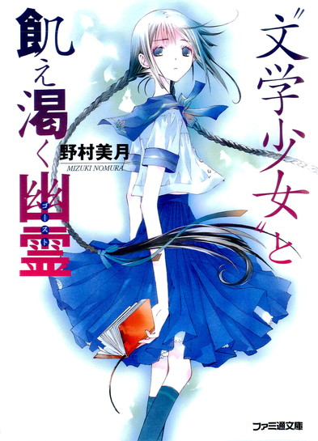
文芸部部長、天野遠子。物語を食べちゃうくらい愛しているこの自称〝文学少女〟に、後輩の井上心葉は振り回されっぱなしの毎日を送っている。そんなある日、文芸部の「恋の相談ポスト」に「憎い」「幽霊が」という文字や、謎の数字を書き連ねた紙片が投げ込まれる。文芸部への挑戦だわ！と、心葉を巻き込み調査をはじめる遠子だが、見つけた〝犯人〟は「わたし、もう死んでるの」と笑う少女で──!?コメディ風味のビターテイスト学園ミステリー、第２弾！
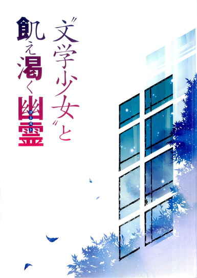
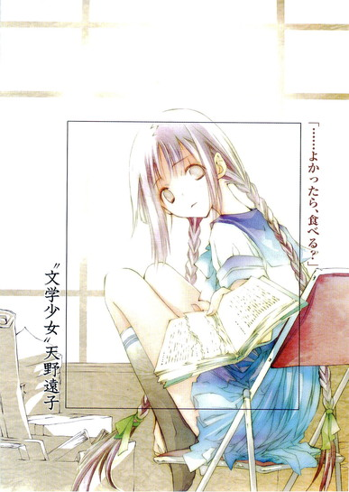
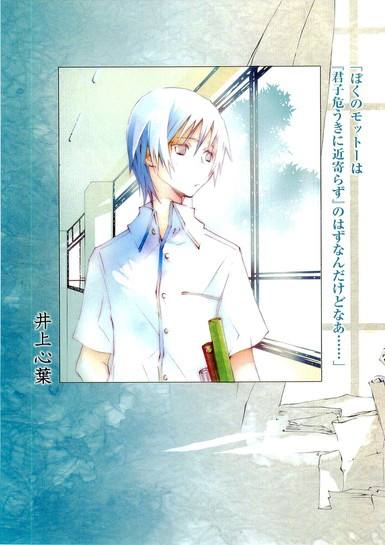
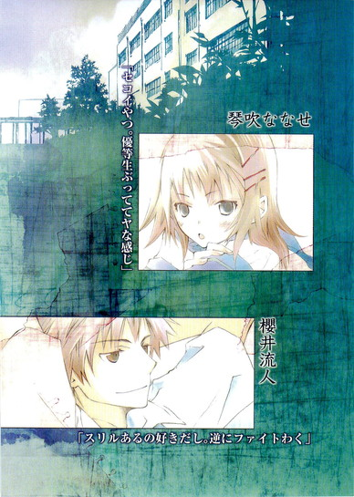
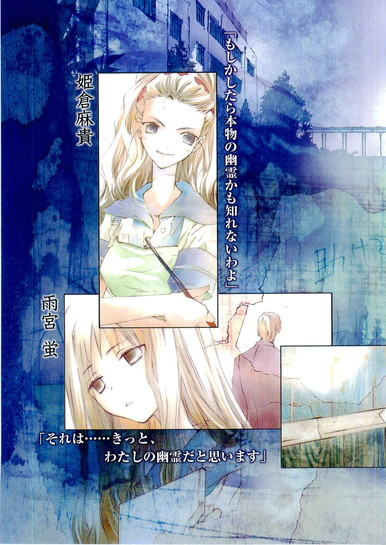
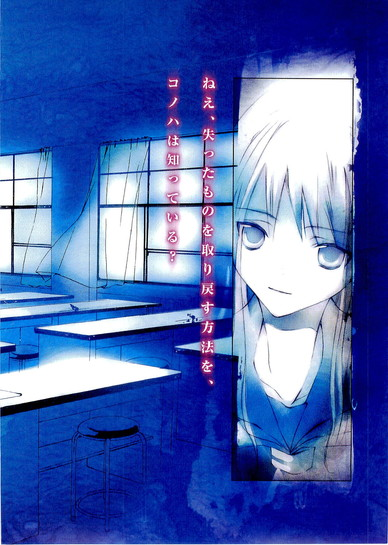
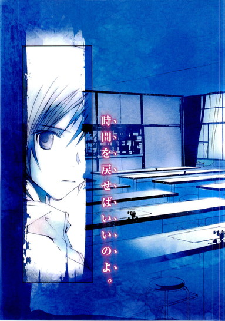
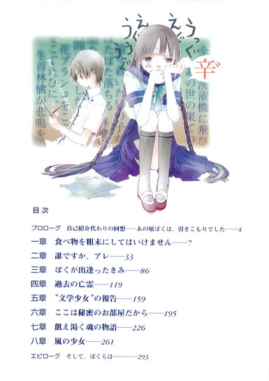
目次
プロローグ 自己紹介代わりの回想──あの頃ぼくは、引きこもりでした──
一章 食べ物を粗末にしてはいけません──
二章 誰ですか、アレ──
三章 ぼくが出逢ったきみ──
四章 過去の亡霊──
五章 〝文学少女〟の報告──
六章 ここは秘密のお部屋だから──
七章 飢え渇く魂の物語──
八章 嵐の少女──
エピローグ そして、ぼくらは......──
〝文学少女〟と飢え渇く幽霊
野村美月
彼女を殺そう。
嵐のような狂気に身を震わせながら、彼は決意した。
そうだ、殺せ、殺すのだ。
巻き戻した時間を元に戻さぬために。彼女を永遠に、彼の世界に繋ぎ止めるために。
彼女の屍を抱き、血をすすり、肉を食らい、骨を枕にし、同じ棺で眠るのだ。彼女の目も、鼻も、唇も、皮膚も、肉も、血も、骨も、すべて──すべて彼のものだ。
雪のように白く氷柱のように冷たい彼女の首に、十本の指を、ぎりぎりと食い込ませながら、彼は掠れた声で呟いた。
「──さようなら、裏切り者の夏夜乃」
プロローグ ◎ 自己紹介代わりの回想──あの頃ぼくは、引きこもりでした
ここは人間嫌いの天国だ。
そんなことを言って、田舎に引きこもった、とある紳士がいたけれど、中学三年生の後半、ぼくは自分の部屋で引きこもりをしていた。
真っ昼間からカーテンを閉めきり、ベッドの上で毛布を引きかぶり、太陽なんて昇らなきゃいい、明日なんて永遠に来なきゃいいと念じながら、シーツを爪でかきむしり、枕に顔を押しつけ、めそめそぐずぐず泣いていた。
日本に中学三年生の男の子は大勢いるのに、どうしてぼくばかりがこんなめにあうのだろう。
ぼくがなにをしたっていうんだ。
ぼくは人間嫌いだったわけじゃない。生まれてはじめて書いた小説がたまたま新人賞に選ばれて、それがたまたま史上最年少で、たまたまペンネームが井上ミウなんて女の子みたいな名前だっただけだ。
なのに出版された本は勝手にベストセラーになり、勝手に〝謎の天才美少女作家〟なんて騒がれて──それと引き替えに、ぼくは大事なものをなくしてしまった。
子供の頃からずっと大好きだった特別な女の子に、二度と会えなくなってしまったのに、世間は十四歳の天才少女を褒め称え、ミウの正体について勝手な憶測を飛ばして盛り上がり、出版社の人からは連日のように次回作の催促が来る。
どうして、美羽があんなことになったのに、小説なんか書き続けなきゃいけないんだ。
もう放っておいてくれ。ぼくは、天才作家でも白いパラソルが似合う良家のお嬢様でもない。小説なんか二度と書かない！
全身から冷たい汗が吹き出し、指先が痺れ、胸が万力できりきりひねられているみたいに苦しくなり、息ができなくなり、ぼくは部屋のドアを閉め、目を固くつむり、耳をふさぎ、一切の情報を遮断し、すべてをなかったことにしようとした。
ドアの外で起こっていることは全部夢なんだ。ドアのこちら側だけが現実で、向こうは全部嘘っぱちなんだ。どうか誰もドアを開けないで。こちらに入ってこないで。ドアが開いたら、嘘の世界が現実になり、津波のように襲いかかってくる。ぼくはそれに飲み込まれ、窒息してしまう。
汗の匂いのする湿っぽい毛布を、歯茎に血がにじむほど噛みしめながら、ぼくが心の底から望んでいたことは、時間を巻き戻し、すべてをやり直すことだった。
ほんの数ヶ月でいい。過去に戻れたら──。
そうしたら決して小説なんて書かないのに。新人賞に応募もしないのに。
ぼくは平凡な中学生のまま、美羽の側で、美羽の笑顔を見つめ、美羽の語る木漏れ日のような美しい物語に耳を傾け、美羽の書いた鮮やかな言葉の数々に酔いしれ、それだけで心から満足し、世界や他人を恐れることなく、平和に幸福に生きてゆけるのに。
過去に戻りたい。
やり直したい。
どうかお願いです神様、ぼくを小説を書く前のぼくに戻してください。
けれど、中学三年生の男の子が暗い部屋の中でどれだけ真剣に祈っても、そんな都合のいい願いは叶うはずはなかった。
長い長い冬の終わりに、ぼくはよろよろとベッドから這い出し、受験をし、高校生になった。
そして、高校二年生の夏──。
ぼくは二人きりの文芸部で、〝文学少女〟のおやつをせっせと書いている。
一章 ◎ 食べ物を粗末にしてはいけません
ほっそりした指で原稿用紙の端を、ぴりっとちぎって口に入れると、遠子先輩はくすりと笑った。
「あまぁい」
それから、もう一口......。また一口......。
ＨＢのシャーペンで書いた文字でマス目が埋まった原稿用紙を、指で細かく破いては口に運び、かさこそと小さな音を立てて咀嚼し、こくりと飲み込む。
「とっても爽やかな......甘い味......」
小さな顔を傾けてうっとりつぶやいていたのが、途中から「ん？」と口をへの字に曲げ、黒目がちのつぶらな瞳に疑惑が浮かび、頬がしだいに引きつってゆく。額に汗をにじませて、おそるおそるというふうに最後のひとかけらを口にした瞬間、遠子先輩はパイプ椅子から飛び上がった。
「辛─────────────い！！！！！！」
黒猫の尻尾みたいな細くて長い三つ編みをぴょんぴょん跳ね上げ、涙の粒をぽろぽろこぼしてパイプ椅子の背にしがみつき、
「か、辛い──舌がちぎれそう、目から火を噴きそう、鼻から水が垂れそう。このお話、辛すぎよ、心葉くん」
と、恨めしそうに訴える。
ぼくは五十枚綴りの原稿用紙の表紙を閉じ、シャーペンをケースに片づけながら冷静に言った。
「お題の食い合わせが悪かったんじゃないですか？〝林檎園〟〝花ブランコ〟はいいですけど、そこに〝全自動洗濯機〟って、どう考えてもミスマッチですよ」
三つのお題をもとに話を作る三題噺は、遠子先輩のお気に入りのおやつだ。
放課後、部室へ行くと、銀色のストップウォッチを手にした遠子先輩が待ちかまえていて、
「さぁ、心葉くん、今日のお題は〝カラスミスパゲティ〟と〝東京ドーム〟と〝乙女座の少年〟よ。う～～～んと甘いお話を書いてね。制限時間は、きっかり五十分よ。はい、すたーと！」
悩みなんてひとつもないような晴れ晴れした笑顔で、ストップウォッチをかちりと鳴らす。
そうしてぼくが書き上げた作文を、指でぴりぴりちぎって口に運び、もぐもぐむしゃむしゃ食べては、
「はむはむ......中盤がちょっと薄味かしら。文章を短くして、テンポアップしてみるといいかも。あ、ラストの一文、やわらかくて美味し～、マンゴー味のプリンみたい」
などと添削をする。
こんな遠子先輩は、ぼくより一学年上の三年生で、物語を食べる妖怪だ。
ぼくらがパンを食べ水を飲むように、紙に書かれた文字や印刷された本を美味しそうにぱりぱり食べ、幸せそうに蘊蓄を垂れる。
もっとも〝妖怪〟なんて言ったら、本人は頬をふくらませて、
「妖怪はダメ──っ！ わたしは、この世のありとあらゆる物語を、食べちゃうほど愛しているただの〝文学少女〟です」
と反論するだろうけど。
腰まで届く細く長い三つ編みと、知的に澄んだ黒い瞳、真っ白な肌、凹凸のないスレンダーな体つき──そうした目に映る部分だけを語るなら、遠子先輩はまさしく古き良き時代の文学少女で、すみれの花がよく似合うお上品そうなお嬢さんである。
ところが中身は食いしん坊でおしゃべりで、好奇心旺盛で、なににでも首を突っ込みたがる困った先輩なのだった。
「くすん......まだ舌がびりびりするわ。胸にきゅんとくる甘酸っぱいラブストーリーを期待してたのに。全自動洗濯機に飛び込んで、あの世の果ての林檎園へ辿り着いた男の子が、花ブランコを漕ぐたびに、人間の顔をした林檎の実が悲鳴をあげてぼたぼた落ちるお話を書くなんて。
うぅ、爽やかなクリームを添えたアップルパイだと思って美味しくいただいていたら、林檎の代わりに、真っ赤に煮込んだ担々麺が詰め込んであって、シナモンパウダーの代わりに七味唐辛子が振りかけてあったみたいな味～～～～」
よほど生首林檎の刺激が強かったらしく、まだ鼻水をすすりながらめそめそしている。
「ぼくは、遠子先輩のお題どおりに書いただけですからね。文句を言わないでください」
「心葉くんって冷たい。見た目は小公子セドリックでも、中身は小公女セーラに出てくるミンチン先生ね」
「どういうたとえですか。ぼくは金髪でも碧眼でもないし、あんなひらひらしたブラウスも着ません」
「あぁ、口直しにエイキンの短編集が食べたいわ。『しずくの首飾り』が食べた～い、『空のかけらをいれてやいたパイ』が食べた～い、『三人の旅人たち』が、食べたい、食べたい、食べた～～～～い」
パイプ椅子に正座し、背もたれの部分を抱きしめて、がたがた揺さぶる。デパートのおもちゃ売り場で駄々をこねる幼稚園児ですか、あなたは。
ぼくは呆れながら言った。
「『三人の旅人たち』って、国語の教科書に載ってましたね。砂漠の駅で働く三人の駅員が休暇をとって、一人ずつ旅に出る話でしたっけ？」
すると遠子先輩は、とたんに晴れやかな顔になり、饒舌に語りはじめた。
「ええ、そうよ。ジョーン＝エイキンは一九二四年生まれのイギリスの児童文学作家よ。『ウィロビー館のオオカミ』なんかの長編シリーズも波瀾万丈で、登場する子供たちが、おやつにお母さんが焼いてくれるジンジャークッキーみたいにチャーミングで、ぴりっとしていて、お薦めだけど、短編も瑞々しくて美味しいの！『三人の旅人たち』も、新鮮なフルーツのようだわ。金色にはじけるオレンジ、爽やかなシトロン、宝石のようなマスカット。それを口の中でつぶして、たっぷりこぼれ出てきた冷たい果汁を味わう感じなの！」
長い睫毛を伏せて目を閉じ、喉をそらして、うっとりとつぶやく。食べ物の話をしているときは、本当に幸せそうだ。
校舎の三階の西の隅に、ぽつりと存在している部室は、もとは物置部屋で、壁際に古い本の塚が築かれ、残ったわずかなスペースに、表面がでこぼこになった古い樫の木のテーブルが置いてある。
夕方になると西日が差し込み蜂蜜色に染まる埃っぽい部室で、ぼくは、がたがた揺れる古いテーブルに向かい、ＨＢのシャーペンで原稿用紙のマスを埋めてゆく。
その間、遠子先輩はパイプ椅子に足を乗せ、お行儀悪く体育座りし、至福の表情で本のページをめくる。ときどき、ぼくのほうをそっと見て、おやつの出来具合をチェックし、嬉しそうに唇をほころばせ、また本を読みはじめる。
二人きりの文芸部で、ぼくは遠子先輩のおやつを一年以上も書き続けている。
「ああ、ますますエイキン、食べたくなっちゃった。そうだわ！」
妄想を展開させていた遠子先輩が、突然ぱちりと目を開け、にこにこしながら身を乗り出してきた。
「もしかしたら中庭のポストに、甘～いお手紙が届いているかもしれないわ」
それは、遠子先輩が不法設置したポストで、〝あなたの恋を叶えます。ご用の方はお手紙をどうぞ。by文芸部一同〟なんて書いてある迷惑な代物だった。
遠子先輩の一番の好物、それは、直筆で書かれたこの世にたった一つの物語で、特に甘い恋物語には目がない。それを味わうため、相談者の恋を叶える報酬として、純な想いを綴ったレポートを要求する。美食のためには労を惜しまない人なのだ。
けれど、それにぼくを巻き込むのは、いいかげんやめてほしい。
「もうラブレターの代筆はしませんからね」
ちくりと釘を刺すが、向こうはてんで気にしていない。
「はいは～い」
パイプ椅子からひらりと飛び降り、あてにならない空返事をして、陽気な足取りでポストを見に行ってしまった。
まったく......。
一人残されたぼくは溜め息をついた。
開け放たれた窓から風が吹き込み、樫のテーブルの上の原稿用紙をぱらぱらめくる。
今年の夏は去年よりも涼しく過ごしやすい。部室にはクーラーがないのでありがたい。願わくば遠子先輩がまたやっかいごとに首を突っ込んで、それにつきあわされて、〝汗だくの夏〟になりませんように。
風をはらんでふくらむカーテンの向こうに浮かぶ白い雲を眺めながら、そんなことを考えていたら、遠子先輩が細い肩をいからせて戻ってきた。
「ひどい嫌がらせだわ！ 見て、心葉くん！」
手にした紙を焦げ茶色のテーブルにばらまいて、憤慨する。
遠子先輩が持ってきたのは、大学ノートを適当に破った小さな紙切れで、形がまちまちで、端もぎざぎざだ。そこに鉛筆で走り書きがしてある。
〝憎い〟〝助けて〟〝幽霊が〟〝怖い〟〝苦しい〟〝消えて〟──。
醜く引きちぎられた紙片に躍るおどろおどろしい文字を見て、ぼくは目を見張り、息を飲んだ。
ただ数字が並んでいるだけの紙もある。
〝43 31〟
〝42 43 ７ 14 16 41 １ 431643〟
〝39 11 ７ 21 471137〟
〝14 41 47５ ３ 24 21 43２11３1643〟
「この数字、どういう意味でしょう？」
遠子先輩が眉間に皺をつくり、シリアスな表情で断言する。
「４は、死者のシよ。〝43 31〟、きっとこれは、〝43（死にさらせ）31（みんなイチコロ）〟という意味に違いないわ。わたしたちへの挑戦状ね」
その決めつけように、ぼくは一瞬ぽかんとし、我に返った。
「ちょっと待ってください、飛躍しすぎじゃないですか？挑戦状なんて大袈裟なもんじゃなくて、ただのいたずらじゃ？それに、〝わたしたち〟って、ぼくを交ぜるのやめてください」
「なにを言ってるの、心葉くん。たとえいたずらだとしても、わたしの大事なおやつ箱──いいえ、文芸部の神聖なポストに、こんな美味しくない──いいえ、卑劣で無粋なものを投げ込む輩を見過ごしにはできないわ。これは文芸部の存続をかけた闘争よ。部員が二人しかいないからってナメられてたまるものですか。文芸部は少数精鋭ということを思い知らせてやらなきゃ」
「闘争って──討ち入りでもする気ですか!?」
「ええ。そうよ。いざとなったら、太鼓だって叩くし、角笛だって吹き鳴らすわ」
まずいっ。いつもの暴走がはじまった。今、遠子先輩の頭の中では、妄想がどんどん肥大しているに違いない。こうなると、〝文学少女〟は、誰の手にも負えない。
「ぼく、期末試験が近いので帰ります」
荷物をさっさとまとめて出て行こうとするぼくの腕に、遠子先輩は両手で、がしっとしがみついた。
「ダメっ。今日から中庭で張り込みをするんだから。これは先輩命令よ、心葉くん」
このとき右腕にあたっていた遠子先輩の胸が、気の毒になるほど真っ平らで、本当に高校三年生の女子としてどうなのかと思うほどぺったんこで哀れを誘い、振りほどこうとした手が止まってしまったことがぼくの敗因だった。
期末試験までの貴重な数日間を、ぼくは遠子先輩と一緒に、中庭で過ごすはめになったのだった。
そして──。
「ああっ！ また、入ってるわ！」
午前七時。昨夜の雨のせいで、中庭の芝はしっとり濡れている。
片隅にそびえ立つ古い木の横に、半ば草に埋もれるように設置された妖怪ポスト──否、恋愛相談ポストをのぞき込み、遠子先輩が唸る。
「うぅ、一時間も早く登校したのに。昨日も、下校時間ぎりぎりの六時までねばったのに」
「夜に投函しているのかもしれませんね」
驚いたことに、一度きりかと思われた怪しいメモは、あれから毎日届いていた。
中身はほとんど同じで、〝憎い〟〝来ないで〟〝幽霊〟という言葉が頻繁に出てくる。それから、意味不明の数字の羅列──。
「この〝14 41 47５ ３ 24 2143２11３1643〟って数字、よく出てきますけど、どういう意味なんでしょうね？」
遠子先輩が眉をきりきりつり上げ、真面目な顔で答える。
「これはね、〝14（重死） 41（良い） 47５（死になＧＯ）３（さぁ）24（二人で死）21（二人逝け）43（死にさらせ）２（二人）11（ヒィヒィ）３（さぁ）16（逝けろくでなし）43（死にさらせ）〟という意味よ」
「わけわかりません」
「きみの読解力はまだまだね、心葉くん。要するに、『上から重い石が落ちてきて、二人とも死んじまえ、ＧＯ！』と言っているのよ」
「ますますわかりません。てゆーか、その解釈、あってるんですか？」
「あー、先輩を疑うの？ わたしは〝文学少女〟よ。クリスティだってクイーンだって、赤川次郎さんだって読破してるんだから」
赤川次郎さんは本格派ではないような......。いや、それは今はどうでもいい。
「なら、とっとと犯人を推理してください。期末試験は来週なんですよ。ぼくは家で勉強をしたいんです」
「心葉くん、学生時代は、方程式や化学記号より大切なことがあるのよ」
「詭弁です」
朝っぱらからヤンキー座りで頬を寄せあい、ぼそぼそ話しているぼくらの姿は、限りなく不毛で間抜けだった。
「嫌っ、絶対嫌っ」
昼休み。ぼくは抵抗する遠子先輩を急き立てて、校内にある音楽ホールを訪れた。千人を収容できる大ホールと、いくつかの小ホールからなる豪勢な建物は、オーケストラ部の所有物だ。オケ部は部員も多く、コンクールでの実績もあり、物置部屋を部室にして細々と活動している文芸部とは、高級松阪牛とチクワほどに格が違う。
そのオケ部の部長にして、女性指揮者の姫倉麻貴先輩は、ぼくらの話を聞いて、楽しそうに微笑んだ。
「ふぅん、そんなことがあったの？ それで朝と放課後、何日も張り込みしたワケ？あらまぁご苦労様」
あざやかな夏の日差しが、ドーム状の屋根に取り付けられた窓からキラキラと降り注ぐ様は、教会の聖堂のようだった。壁に素描や水彩画が幾枚も貼られ、中央にイーゼルに立てかけたキャンバスがある。
麻貴先輩は、椅子に足を高く組んで腰かけ、絵筆を握っていた。彫りの深いくっきりした顔立ちや、光を浴びて金色の波のように広がる長い髪、遠子先輩と違って出るべきところがしっかり出た豊かな体型も、日本人離れした迫力だ。実際、母親が外国の人で、ハーフということらしかった。
本当は美術部に入りたかったと言い、休み時間や放課後はほぼ、ホール内のアトリエで一人絵を描いている。そんな特別扱いが許される彼女は、学園の理事長の孫であり、各方面に多くのツテとコネを持つ情報通でもある。
「はじめから、あたしのところへ来ればよかったのよ。そしたらすぐに調べてあげたのに。水くさいわよ、遠子」
からかうような視線を向けられて、遠子先輩が悔しそうに唇を噛む。
ぼくは遠子先輩がなにか言う前に、世間様向けの良い子の顔で礼儀正しく微笑んだ。
「さすが麻貴先輩。頼りになります」
遠子先輩が不満そうにぼくを睨む。きっと「わたしは頼りにならないっていうの？」と思っているのだろう。逆に麻貴先輩は一層口元をゆるめた。
「まぁ、こっちはＯＢだの親戚だの、情報源には事欠かないからね」
「なら早速──」
身を乗り出すぼくに、麻貴先輩がねっとりした口調で言う。
「ただし、メモを投函している犯人を調べるには条件があるわ。わかってるでしょ？遠子？」
その言葉に遠子先輩は耳まで真っ赤になり、長い三つ編みを揺らして叫んだ。
「わたしに、ヌードモデルをしろって言うんでしょ。お断りよ」
麻貴先輩......まだ諦めていなかったんだ。
まぁ、入学直後から目をつけていたと言ってたしなぁ。けど、遠子先輩の真っ平らな胸を描くより、鏡を見ながら自分の裸でも描いてるほうがよほど有意義だと思うんだけど......。きっと人は、自分にないものに憧れるのだろう。
遠子先輩は手をぐーの形に握りしめ、憤慨している。
「もぉ、だから麻貴のところへ来るのは嫌だったのよ。宴会でお酒を飲んで酔っぱらったセクハラ上司みたいに、脱げ脱げって言うんだから。わたしは純情可憐な文学少女よ。麻貴と違って慎み深いの。はにかみ屋の大和撫子なの。いくら女同士だからって、ひょいひょい脱げないわ」
大和撫子がパイプ椅子に足を乗せて座ったり、馬乗りになって、がたがた揺らしたり、人前で本をむしゃむしゃ食べるだろうか......。
「あらそう？ なら、協力はできないわね。残念」
麻貴先輩が無情に言い切る。ぼくはひたすら下手に、
「えーと、そこをなんとか」
「心葉くん！ そんな人に頭を下げることないわ。きみには頼りになるチャーミングな先輩がついているでしょう」
さっ、行きましょうと、遠子先輩がぼくの腕をつかんで歩き出す。
ああ、また張り込みをするのか。来週から期末試験なのに。
「お邪魔しました」
ドアの前で頬をぷっくりふくらませて告げる遠子先輩に、麻貴先輩が人の悪い笑みを浮かべて言った。
「ねぇ、謎のメモの犯人は、もしかしたら本物の幽霊かもしれないわよ？校内を夜な夜な彷徨い歩いて数字を書き残す幽霊が〝出る〟って話、ＯＢから聞いたことあるわ」
「あんな話、信じちゃダメよ、心葉くん。幽霊なんて、いっこないんだから」
放課後──というか夜。空には星がまたたいていた。
「はいはい。いいかげん帰りませんか、遠子先輩？もう九時を過ぎてますよ」
「いいえ、今日は犯人が現れるまで、一歩もここを動かないわ」
校舎の軒下のコンクリートの上にぺたりとしゃがみ込み、そこからポストの方を睨みすえ、遠子先輩が断言する。
「犯人を捕まえて、この世に幽霊なんか存在しないって麻貴に証明してやるんだから」
麻貴先輩の話では、十年以上前、生物室の壁や地学室の机に、数字を書き残す幽霊がいたらしい。
「字は油性ペンで書いてあったから洗剤で拭き取っちゃって、今は残ってないけれど、これ、うちの学園に代々伝わる有名な怪談よ？ＯＢに聞いたことない？ああ、ごめんなさい。文芸部にＯＢはいなかったわね」
そんな言葉が、文芸部を愛する遠子先輩のプライドを傷つけたのか、
「今夜は寝ずの番よ！ 心葉くん！」
音楽ホールを出るなり宣言したのだった。
恐ろしいことに、本当に朝まで張り込みを続けそうな勢いだ。
「物語を食べる妖怪が存在してるんだから、幽霊がいたっていいじゃないですか。もう犯人は幽霊ってことにして、引き上げましょう」
一秒でも早く家に帰りたくて、迷惑そうに告げたら、遠子先輩に凄い勢いで睨まれた。
「わたしは妖怪じゃありません！ 本を食べちゃうだけの、ただの〝文学少女〟です。百万歩譲ってわたしが妖怪だとしても、幽霊なんかと一緒にされたくないわ。夢オチとか幽霊オチとか安直すぎよ。そういうの邪道だと思う。幽霊なんて認めません」
ひょっとして遠子先輩は、幽霊に恨みでもあるのだろうか？そういえば前に『幽霊に会ったらお塩をかけるのよ』と力説してたっけ。
けど、この調子じゃ、まだまだ帰れそうにない。ああ、試験が......。
お母さんは、ぼくが友達の家で勉強をしていると思っている。放課後の清掃が終わったあと、校内の公衆電話で、
「クラスメイトの家で、試験勉強をすることになったんだ。え？名前？芥川くんって人。だから帰りは遅くなるかも......」
と説明したら、
「お兄ちゃんに、そんなに親しいお友達ができたのね。よかったわ」
と喜んでいた。
ぼくが高校生になってから、友達と出かけることがなかったので心配していたのだろう。申し訳なさに胸が痛んだ。しかも勉強をするというのは嘘で、実際にやっていることは妖怪の先輩と探偵ゴッコだし。
ごめんなさい、お母さん。せめて勉強はしようと、数学の問題集を広げ、月の光と外灯を頼りに問題を解きはじめた。
「心葉くんったら、真面目なんだから」
「遠子先輩こそ受験生でしょう」
「わたしは、授業中にしっかり勉強してるから平気です」
偉そうに断言し、小さな顔をぼくのほうへ近づけ、問題集をのぞき込んでくる。
長い三つ編みが細い肩からこぼれ落ち、すみれの香りが、鼻先をふわりとかすった。
「わからないことがあったら、先輩が教えてあげるわ」
顔をそっと上に向け、瞳を甘く輝かせ、お姉さんぽい口調で請け合った直後に、問題集に書き込まれた数式を見て、うっと声をつまらせた。
「......やだ、こんなに難しい問題をやってるの？心葉くんのクラスってひょっとして特別進学クラス？わたしに内緒で東大受験を目指しているの？」
「うちの学園に、そんなクラスはありません。それに、このくらい基本ですよ。遠子先輩も、去年の授業で習ったでしょう」
「そ、そうだったかしら？ わたし、数字と機械は相性が悪くて......」
遠子先輩がとたんに目をそらし、そわそわする。
「そういえば、数字って食べられるんですか？」
ふと気になって尋ねてみると、
「食べられないことはないけど......。わたしはまず目で文字を見て、心で感じてから口に入れるの。数字はただの数字でしょう？そこに意味を見いだせなければ、口に入れても、茹でる前の乾燥したマカロニを囓っているような味しかしないわ」
そうなんだ......。
ぼくらが食べているパンやおにぎりを遠子先輩が食べても、なんの味もしないと聞いたことがある。それと同じなんだな。
「じゃあ、アルファベットも？」
「ええ。単語の意味がわからなければ、ＡＢＣの形をした乾いたマカロニね」
哀しそうにつぶやいたあとで、遠子先輩の唇に、すみれの花が開くような小さな笑みが浮かんだ。
「けど、外国のお話は、やっぱり原書でも読んでみたいでしょう？心が震えるような素晴らしい物語が、ただのアルファベットにしか見えないのは悲しいもの。だから英語はしっかり勉強しているのよ。それと、フランス語とイタリア語とドイツ語と中国語も。
辞書を使いながらちょっとずつ読んでゆくのはもどかしいけれど、言葉のひとつひとつがとても大事なものに思えて、それが意味を持って、きらきら輝き出すのを見るのは、どきどきするわ。そんなふうにして探しあてた言葉は、口の中で甘くはじけるような極上の味がするの」
やわらかな優しい声で、うっとりと語る。
澄んだ月の光が、遠子先輩の白い顔を照らしている。
その様子はなかなか神秘的で、いつもの三割増しくらい綺麗に見えて、まぁたまには遠子先輩の我が儘につきあうのもいいかと思えた。
「数学の問題も、頑張って最後まで解いたら、特別な味がするかもしれませんよ」
「うっ、それは......ないと、思うわ、多分」
頬を染めてぽそぽそつぶやくのを見て、ぼくは吹き出しそうになった。
「もぉ、心葉くんだって、苦手な教科があるでしょう」
「そうですね、漢文は、ときどきこんがらがっちゃうかな」
「それならわたしの得意分野よ。任せて、教えてあげるわ！ほらほら、早く教科書を出して。試験範囲はどこ？」
ぼくの腕を揺さぶって、嬉しそうにせかしたときだ。
突然、チャイムが鳴り響いた。
「きゃっ」
遠子先輩がびくっとして叫ぶ。ぼくもとっさに顔を上に向けた。
下校時間を過ぎたらチャイムは鳴らないはずなのに、鐘の音が高らかに響いている。
腕時計を見ると、時刻は十時になろうとしているところだった。
「丑三つ時には、だいぶ早いですね」
「なにを言ってるの心葉くん。やぁっ！」
再び、遠子先輩が叫んだ。
校舎の窓ガラスに一斉に明かりがつき、それがせわしく点滅しはじめたのだ。
さらに、手のひらを打ち合わせたような、パチン！パチン！というラップ音が響き、はてには、それに混じって女性がすすり泣く声まで聞こえてきた。
「......開けて......中に入れて」
か細い声が訴えるのを耳にして、全身の毛が逆立った。
皮膚が粟立ち、感覚が鋭敏になる。手足と首筋がこわばり、体が氷のように冷たくなり、逆に空気は生温かくなり、ずしんと重くなったようだった。
「犯人は、やっぱり幽霊だったんですよ、遠子先輩」
「ち、違うわ、違うわ。こんなのただの空耳よ。あの明かりも、蛍光灯が古くなっただけよ。切れはじめのときって、ちかちかするでしょう」
「あんなに一度に点滅するなんて、有り得ません」
頭がくらくらするような明滅も、耳を突き刺すようなラップ音も、まだ続いている。
なによりも、生々しいすすり泣きが、ぼくらを恐怖の淵に突き落とした。
「ゆ、幽霊なんて、い、いない。いないわ」
繰り返す遠子先輩の唇も、小刻みに震えている。手がぼくのシャツをしっかり握りしめている。
「そうよ、幽霊なんて──」
そのとき、中庭に、人影がぼうっと浮かび上がった。
遠子先輩が、ひっと息をのむ。
あの子──。
闇の中から現れた少女は、手に黒い学生鞄を持ち、制服を着ていた。けれどそれは、遠子先輩が着ているような今風にアレンジされた裾の短いセーラー調の上着と、ひだスカートではない。
もっと野暮ったい、ワンピースタイプのセーラー服──そう、校内に飾ってある古い写真で見たことがある。モデルチェンジする前の、古い制服なのだ！しかも、夏だというのに冬服だ！
空気を踏むようなふわふわした頼りない足取りで、ポストの前までやってくると、女の子は、ぺたんとしゃがみ込んだ。
そうして、鞄の中からノートと筆記用具を出し、ノートになにか書き込んでは、ちぎり、ポストに入れはじめた。
いつの間にか点滅はおさまり、ラップ音もやんでいた。
辺りは静寂に支配され、風の音すら聞こえない。
けれど、彼女はまだそこにいる。銀色の月明かりを浴びて、淡々と黙々と、ノートに字を書き続け、細かく破き続ける姿はあまりに異様で、ぼくは目をそらすことができなかった。
あの腕、いくらなんでも細すぎる。まるで血の通わないマネキンのようじゃないか。いいや、腕だけじゃない。細い腰、薄い肩、小さな背中、透き通るような栗色の髪、それに、闇に浮かび上がる病的に白いうなじ......。体のどこもかしこも、細くて、無機質で、青ざめていて、まともに息をしている人間に見えない！
喉を苦い唾が滑り落ち、口の中が乾き、手が汗でべったり濡れてゆく。
一体、あの子は、あそこで、なにをしているんだ？メモを入れていたのは、あの子なのか？
「うぅ......幽霊なんていないわ」
突然、遠子先輩がぼくのシャツを握りしめたまま、女の子のほうへ歩き出したので、ぼくはぎょっとした。
「なんで、ぼくまで連れてくんです」
「きみも文芸部の一員でしょう。ねぇ、あの子に、なにをしてるのか訊いてみて」
「どうして、ぼくが！」
「先輩命令よ」
もめていたら、女の子が振り返った。
遠子先輩がびびって足を止める。ぼくも息をのむ。
女の子の顔は、西洋の人形のように整っていて綺麗だけど、肌は鬼火のように青白く、表情は洞窟のように空っぽで、感情というものがまったくない──。
「あ、あなたは誰？ ここでなにをしてるの？」
虚ろだった瞳に精気がともったのは、その瞬間だった。
頬が薔薇色に輝き、口元に不遜なほど生き生きした笑みが浮かぶのを、ぼくは驚きとともに見つめた。
なんなんだ、この子──！
可愛らしい甘い声が、尊大に答える。
「わたしは九條夏夜乃よ。どこでなにをしようとわたしの勝手だわ。わたしは、わたしのやりたいときに、わたしのやりたいことをするのよ」
女の子の変化に戸惑うぼくのシャツを引っ張り、遠子先輩が一歩前に出る。
「わたしは、文芸部の部長の天野遠子よ。うちのポストに毎晩おかしなメモを投函していたのは、あなたなの？」
「そうよ。わたし手紙を書いていたの。屋敷では、弘庸叔父さんたちが、わたしのことを監視して、あれこれ文句を言って、うるさいんですもの」
「手紙って、わたしたちに？ それとも、他の誰かに？」
尋ねると、女の子は細い顎をツンとそらした。
「そんなこと教えてあげない。わたしもう帰るわ。あなたたちが邪魔したから、つまらなくなっちゃった」
学生鞄にノートと筆記用具を詰め込み、蓋をして立ち上がると、スカートについた草を払いもせず、さっさと歩き出す。
って、本当に帰っちゃうよ──。
「ちょっと待って！ この数字はなに？」
遠子先輩が慌ててポケットからメモを出し、女の子の方へ突きつける。
女の子は振り返り、いたずらっぽく目を細めた。
「それは、わたしと彼だけの秘密よ」
官能的な甘い目に、胸を射抜かれたような気がして、ぼくは体が震えた。
この子、ぼくらと同じ歳くらいに見えるのに、なんて大人っぽい妖しい目をするのだろう。
まるで遥か昔から生きている、不死者のような──。
「待って！」
遠子先輩が、女の子の腕をつかんで引き止める。
その瞬間、遠子先輩は、なにかに驚いたようだった。
「！」
黒い瞳が恐怖に見開かれる。けれど、強気に足を踏ん張ると、そのまま言葉を続けた。
「ね、ねぇ......もし、あなたがなにか困っていて、こんなことをしたのなら、話を聞くから教えて」
「うふふ、ふふ、くすくす......」
ふいに、女の子が笑い出した。その声は軽やかな反面、執拗で病的で、遠子先輩もさすがに怖くなったのだろう。つかんでいた手を、ゆるめる。
女の子は腕をするりと抜き取ると、口の端を可愛らしく吊り上げた。
「ふふ、そんなの無駄だわ。だってわたし、とっくに死んでるんですもの」
背筋を冷たいものが貫いた。
遠子先輩が目を丸くし、のけぞる。
女の子は笑いながら校門のほうへ駆けていった。肩の下まである栗色の髪があでやかに揺れ、スカートの裾が踊るようにひるがえり、白い脛が月の光をなまめかしくはじくのを、ぼくは声を出すこともできず見送った。
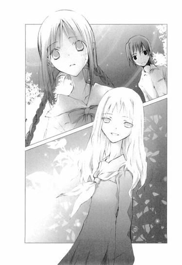
細い体がかげろうのように揺らめき、闇の中に完全に溶けたとき、遠子先輩は、へなへなと地面にしゃがみ込んでしまった。
「遠子先輩！」
焦るぼくのシャツをつかみ、震える声で言う。
「あ......あの子......すごく細い腕をしていたわ。まるで百歳を越えたお婆さんの腕みたいに細くて硬いの。骨と皮しかないみたいだった」
「やっぱり、ホンモノだったんでしょうか？」
「そんなわけ──」
立ち上がろうとして、足が弱々しく崩れ落ちる。遠子先輩は眉をふにゃっと下げ、ひどく情けない顔でぼくを見上げ告白した。
「どうしよう、心葉くん。わたし、腰が抜けちゃった」
二章 ◎ 誰ですか、アレ
彼女が死んだ──。
帰国後知った事実に、彼は愕然とした。
どういうことだ？ 何故彼女がいない？
彼女への復讐だけを胸に、のし上がってきた。彼を裏切った彼女を地獄に引きずり落とし、償いをさせるために、彼はこの地へ舞い戻ってきたというのに。
なのに、彼女が死んだ？ 彼の魂の半分である彼女が？
彼の世界は砕け散り、魂は嵐の海に投げ出され、猛り狂う黒い波の中へ墜ちていった。
握りしめた拳が折れるほど、壁を幾度も打ち据え、彼は獣のように働哭した。
◇ ◇ ◇
「えっと......その......誤解のないように言っておくけど、幽霊が怖くて腰を抜かしたんじゃないのよ。たまたま持病の腰痛が出ちゃっただけよ」
中庭で、幽霊に会った一時間後──。
ぼくらは夜の住宅街を、ぴったり寄り添って歩いていた。
別に甘い雰囲気で、いちゃついていたわけじゃない。遠子先輩が腰を抜かしてしまい、どうしても自力で歩くことができず、送ってゆくハメになったのだ。
「本当に、ただの腰痛なのよ、幽霊のせいじゃないのよ。子供の頃にわずらったぎっくり腰が、再発しただけなんだから」
ぼくの腕にしがみついて、よろめきながら、真っ赤な顔で繰り返し主張する。
呆れたことに、遠子先輩はこの状態で、「幽霊の後を追いかけるのよ」と言い出し、無理矢理立とうとしてつんのめって、顔を芝生に思いきり打ち付けたのだった。鼻の頭が今も赤い。
「......っ、そんな持病があるなんて初めて聞きましたけど」
左肩に自分の荷物を提げ、左手に遠子先輩の鞄を持ち、右肩と右腕で遠子先輩を支えながらゼイゼイ息を切らして突っ込むと、さすがに反省したのか、うなだれてしまった。
「ゴメンナサイ。わたし、ダメな先輩ね」
ちょっと冷たかったかな......。いや、ここで甘やかしたら、この人は絶対に図に乗る。
「自覚があるんなら、無茶な行動は控えてください。いくらぺったんこでも一応女の子なんですから──痛っ」
とたんに、表情が一変した遠子先輩に、いきなり頬をつままれた。
「ひどーい、セクハラ。先輩への尊敬が足りない」
親指と人差し指で、むぎゅむぎゅと頬を引っ張る。
「あたた、遠子先輩こそ、後輩をいたわってください」
「もうひとりで歩けるから、ここでいいわ」
「まだ、よろけてるじゃないですか」
「その角を曲がって、一、二分だから平気よ」
ぷんと頬をふくらませ、そっぽを向いたときだ。
「ひどぉぉぉぉぉぉぉぉぉい！」
近くで、女の子の金切り声が聞こえた。
「あたしは、流のなんだったの？」
「そうよ、あたしとこの女と、どっちを選ぶのか、はっきり答えてよ！」
「ちょっと、なにソレ、あたしを無視しないで！」
曲がり角の向こうで、誰かもめているみたいだ。遠子先輩と一緒にのぞいてみると、外灯の下で、三人の女の子が一人の男の子を囲んで騒いでいた。
女の子は全員興奮していて、「流とつきあってるのは、あたしよ！」「あんた邪魔よ！」「あんたこそ！」なんて言い合っている。どうも男の子が三股かけていたらしい。なのに元凶の彼は、女の子たちを止める様子もなく、口元に笑みを浮かべてのんびり腕組みなんかしている。背が高くて肩幅ががっちりしていて、スポーツとかやってそうな男らしい体格だ。髪型も服装もカジュアルで、いかにも女の子にモテそうな雰囲気を漂わせている。大学生かな？
「てゆーか、移動しね？ 家の近くで、もめられんの困んだよね」
男の子が、そんなふうに言ったときだ。
ふいに背筋がぞくっとするような、寒気を感じた。
隣を見ると、何故か遠子先輩が歯を噛みしめ殺気をみなぎらせている。
え？ ええっ？ 遠子先輩、なんで怒ってんだ？
わけがわからず焦っていると、遠子先輩は、ぼくから自分の鞄を奪い取り、ずかずか歩き出した。
と、遠子先輩、腰は？ 足は？
そんなもの怒りの前にすっかり吹き飛んだというように瞳を熱く燃やし肩をいからせ、遠子先輩はもめている女の子たちのほうへまっすぐ向かっていった。
そうして鞄をブンッと振り上げると、
「こらぁ！ 流人！」
「げっ、遠子姉！」
目をむく男の子の顔目がけて、それを振り下ろしたのだった。
バシッという音がし、鞄が男の子の顔に激突する。周りを囲んでいた女の子たちがのけぞる。ぼくも仰天した。
「まったく、きみって子は！ 家の近くでもめごとを起こすなって、あれほど言ったでしょう。ご近所様に恥ずかしいじゃないの。それにまた三股もかけて！どーしてそんなに女の子が好きなの？きみには誠意ってもんがないの？」
地面に尻餅をついてしまった男の子の顔や頭を、両手でぺしぺし叩く。
女の子たちは遠子先輩の迫力に恐れをなして固まっている。ぼくは慌てて走ってゆき、遠子先輩をはがいじめにした。
「やめてください。よくわからないけど、暴力はいけません。とにかく落ち着いてください、また腰痛が出ますよ」
「心葉くんは黙ってて！」
遠子先輩はぼくの腕を振り払い、女の子たちのほうを凜然と振り返った。
「あなたたち、こんなろくでなしの三股男をとりあって喧嘩をするよりも、おうちで夏目漱石全集でも読む方がよっぽど有意義よ。まずは、連作短編集の『夢十夜』からはじめて！耽美で幻想的な物語は、熟成したワインの味よ。熱と香りをともなって喉をすべり落ちてゆく詩的な文章に心ゆくまで酔いしれて！日本人に生まれてよかったと思うはずよ。これを読み終えたら、次は初期三部作へ進んでちょうだい。さらなる感動が待っているわ」
ぽかーんとする女の子たちに大真面目に語りかますと、男の子の耳を、ぐいっとつかむ。
「さぁ、帰るわよ、流人」
「い、いてて、いてーよ、遠子姉」
そうして、自分より大きくて、がっしりした男の子を引きずるようにして、月に照らされた夜の道を、悠々と歩いていったのだった。
「な......なに、今の？」
「さ、さぁ？ 初期三部作ってなに？」
「それより、あの子、流のなんなの～～～～！」
ざわめく女の子たちの隣で、ぼくも茫然と立ち尽くした。
あいつ、遠子先輩のなんなんだ──。
翌朝。
いつもの時間に家を出て、通学路を歩いていると、電柱の後ろから猫の尻尾みたいな長い三つ編みが見えた。
「......偶然ね」
広げた文庫本を持った遠子先輩が、首をすくめ真っ赤な顔で、おずおずと出てくる。
「おはよう、心葉くん」
どうやらぼくが通りかかるのを待っていたらしい。目の下を赤く染め、頭を下げる。
「昨日は、ごめんなさい。心葉くんが送ってくれたのに、わたしったらついカッとなって、心葉くんをほったらかして帰っちゃって......本当にごめんなさい」
遠子先輩は心からすまないと感じているようだった。ぼくが怒っているんじゃないかと心配しているみたいで、中島敦の『山月記』の後ろから上目づかいに、ちらちら見ている。遠子先輩がわざわざ謝りに来てくれたことで、ぼくの気持ちは幾分やわらいだのだけど、まだひっかかっていることがあった。
「あの流人ってヒト何者ですか？ ずいぶん親しそうでしたけど」
遠子先輩が、言いにくそうに答える。
「流人は、わたしが居候しているおうちの息子さんで、弟みたいなものよ」
「居候？ ご両親は妖怪の国にいるんですか？」
とたんにげんこつで、ぽかりと叩かれた。
「もぉ、妖怪って言わないのーっ！」
遠子先輩は、「妖怪なんて乙女心が傷つくんだから」とか「どうして、きみって不注意なのかしら」とか、頬をふくらましてぷりぷり怒っている。はたしてご両親も妖怪なのかとか、娘をよそのお宅に預けてドコでナニをしているのかとか、居候している家の人たちは、遠子先輩が本をぱりぱり食べてしまうことを知っているのかとか、気になるけど、とても訊けない雰囲気だ。
ぼくはあきらめて、「学校遅れますよ」と言って、歩き出した。
「あ、待って」
遠子先輩が、慌てて追いかけてくる。
「──結局、昨日の怪奇現象はなんだったんでしょうね？それにあの女の子も」
通学路を並んで歩きながら話を振ると、遠子先輩は口をへの字に曲げ、腕組みした。
「きっと、なにかからくりがあるんだわ。絶対につきとめてみせるわ」
「ええ、まだ調査を続ける気なんですか？」
呆れるぼくに、
「当然よ」
きっぱり断言し、
「じゃあね、またあとでね、心葉くん」
昇降口の前で軽やかに手を振り、三年生の下駄箱のほうへ歩いていってしまったのだった。
やっぱり、全然反省してないっっ!!
朝からぐったりして、自分の教室へ行くと、クラスメイトの芥川くんが「おはよう」と声をかけてきた。
「あ、おはよう、芥川くん」
ぼくも挨拶を返す。最近、教室で芥川くんといることが多い。背が高く寡黙な雰囲気の彼は、外見だけでなく中身も穏やかな人だ。余計なことは口にせず、感情的になることもなく、真っ直ぐな木のように安定した精神を持つ彼と一緒にいるのは楽だった。特別親しい友人というわけではないけれど、今のぼくには、適度な距離感が心地いい。
「数学の宿題やってきた？ 答え合わせしてもいいかな？」
「ああ」
そんな風に、お互いのノートを広げて話していたら、芥川くんが軽くぼくの腕をつつき、その指をそっと後ろに向けてみせた。
振り返ると、クラスメイトの琴吹さんが、目を三角にしてぼくを見ていた。
またか......。
琴吹さんはぼくを敵視していて、いつもこんな風にぼくを睨むのだ。以前、ぼくが嫌いだとクラスの女の子たちに話しているのを立ち聞きしてしまったことがある。わざとらしい薄笑いを浮かべていて、腹の中でなにを考えているのかわからなくて、気持ちが悪いのだそうだ。
けど、ただ気にくわないというだけで、ここまでしつこくガンを飛ばしてくるだろうか？ぼくは、琴吹さんになにかしたのだろうか？
芥川くんが、目で「じゃあ」と合図して、自然に離れてゆく。
琴吹さんは迷うように足を踏み出したり引っ込めたり、透明なマニキュアを塗った爪をいじくったりしていたのだけど、ぼくがそれを見ていることに気づくと、顔をぱっと赤らめ近づいてきた。
「なに？ 琴吹さん」
尋ねると、不愉快そうに唇を尖らせる。
「別に、井上に用なんかないよ」
そっけない口調でそんなことを言う。
茶色に染めた綺麗な髪に、すらりとした足。それに胸も大きな琴吹さんは、クラスの男子に絶大な人気を誇っている。この口の悪さもツンデレで良いのだそうだ。けれどぼくは、琴吹さんがデレてるところを一度も見たことがない。好きな男の子の前でなら、琴吹さんも可愛く笑ったりするのだろうか？うーん......想像できない。
「用がないなら、数学の予習をしたいんだけど」
「セコイやつ。優等生ぶってヤな感じ」
「......琴吹さん、世間話に来たの？」
「ち、違うよっ、なに言ってんのっ、どうしてあたしが、井上と世間話なんか......あたしは......ただ......」
琴吹さんは目をそらし、ほんの少し気弱な感じで、ぼそっとつぶやいた。
「今日、天野先輩と登校したでしょ？」
「へ？」
「とぼけないで、一緒に学校に来たでしょ？」
視線を戻し、ずいっと身を乗り出してくる。
「とぼけるつもりはないけど......。よく知ってるね、琴吹さん」
「たまたま見かけたのっ。井上が来るのをチェックしてたわけじゃないからねっ。単に二人が並んで歩いてたから、待ち合わせて来たのかなって思っただけで......べべべ別に待ち合わせたからどーってことはないし、井上のこともどうでもいいんだけど、天野先輩は図書委員の仕事で世話になってるし、あたしの尊敬する人だから」
ぼくは、びっくりしてしまった。
「ええっ、うちの部長のどこを尊敬してるの!?」
下級生に尊敬されるようなとこ、あの人にあったっけ？
琴吹さんが赤い顔で答える。
「たくさん本を読んでて、図書室のこと、なんでも知ってるし、美人なのに気どってなくて親切だし」
う────ん......。
「なに、その不審そうな顔は？ あたしが天野先輩のこと尊敬してたら悪い？」
「ははは......いいんじゃないかな」
真実を知らないほうが幸せということもある。せっかく琴吹さんが尊敬してくれているのだから、イメージを壊すのはやめておこう。
琴吹さんはぼくの愛想笑いがカンにさわったらしく、フンッと横を向いた。
「とにかくっ、天野先輩が、井上なんかと登校してたんで、どうしたのかなって気になっただけっ」
「途中でたまたま会ったんだよ。それで一緒に来たんだ」
本当は〝たまたま〟ではないのだけど、説明するといろいろややこしかったので、誤魔化した。
琴吹さんが、ちらりとぼくを見る。
「ふ────ん......。ならいいんだ」
そのまま背中を向け、自分の席に戻ってゆく。
ひょっとして琴吹さんがぼくを目の敵にするのは、ぼくがいつも遠子先輩と一緒にいるのでヤキモチを焼いているのだろうか？
昼休みにお母さんが作ったお弁当を食べていたら、遠子先輩がひょっこりやってきた。
「おーい、心葉くん」
教室の後ろの出入り口から澄んだ声で呼びかけ、笑顔で手招きする。
「どうしたんですか？」
友達とかたまって座っていた琴吹さんが、囓りかけのメロンパンを手にしたまま、唇を尖らせてぼくを睨む。棘のある視線を感じながら廊下へ出ると、遠子先輩は目を輝かせ、嬉しそうにぼくの手をつかんだ。
「昨日の女の子を見つけたのよ、心葉くん」
「えっ」
「やっぱりあの子は幽霊じゃなかったんだわ。来て、来て、心葉くん」
引っ張られるまま、廊下を進んでいく。
「昨日の子って......あの九條夏夜乃って子のことですか？てゆーか、恥ずかしいから手をはなしてください」
「はいはい」遠子先輩がくすりと笑って、指をほどく。「そうよ。休み時間にトイレから出てくるところを見かけて、後をつけちゃったの」
「今の台詞だけ聞いたら痴漢みたいですよ、それ」
辿り着いたのは、二年生の教室だった。聖条学園は生徒数が多いので、同じ二年でも、ぼくのクラスとはだいぶ離れている。
「ほら、あの子よ」
後ろの出入り口から、遠子先輩と一緒にのぞき見る。昼休みでにぎやかな教室の真ん中に、セミロングの女の子が、ぽつんと座っている。
他の女の子たちは友達同士で机をくっつけて、楽しそうにおしゃべりしながらごはんを食べているのに、その子だけは、机の上にお弁当も広げず、かといって読書や勉強をするわけでもなく、顔をほんの少し伏せ、青白いガラスで作られた置物のように体をぴくりとも動かさず、まばたきすらしないのだった。その横顔や、病的に細い手足は、確かに昨日の夜ぼくらが中庭で会った女の子にそっくりだ。
「ね、間違いないでしょう？」
「けど、雰囲気が全然違いますよ。昨日はもっと気が強そうじゃありませんでしたか？」
「夜遊びして寝不足で、ぼーっとしているのかもしれないわ」
「そうでしょうか」
ひそひそ話していたら、女の子が静かに立ち上がった。
周りは誰も気にとめない。女の子は虚ろな表情で歩き出し、教室の前の出入り口から出ていった。
「わたしたちがいることに、気づいたのかしら？」
「そんな感じじゃなかったですけど」
「追いかけましょう、心葉くん」
「って、ちょっと、遠子先輩」
まったく、困ったな......。ぼくは仕方なく、遠子先輩についていった。
女の子はふらふらした足取りで廊下を進み、階段を下りてゆく。スカートからのびる脛が、白い花を支える華奢な茎みたいで、指でほんの少し曲げただけで折れてしまいそうだ。
「どこへ行くのかしら？」
「売店で、パンでも買うんじゃないですか？」
「それなら逆方向よ」
階段の半ばほどで、遠子先輩が「ねぇ、待って」と呼びかけたときだ。
残り一段を下りようとしていた女の子の体が傾き、そのまま崩れるように倒れてしまった。
ぼくらは慌てて階段を駆け下り、女の子の上にかがみ込んだ。
女の子は体をくの字に丸め、目を閉じ、ぐったりしている。近くで見ると肌はますます透き通るように青白く、制服の上着の襟元から鎖骨が浮き上がっている。
「ねぇ、どうしたの？ しっかりして！」
遠子先輩が声をかけても、女の子は目を覚まさない。糸の切れた人形のように倒れたままだ。
「心葉くん、そっちを支えて。保健室へ運びましょう。ゆっくりね」
「はい」
遠子先輩と一緒に両脇から支えて立たせる。腕を持ち上げたとき、あまりの細さと手応えのなさに、ぎょっとした。まるで発泡スチロールのように軽い。
昨日の夜、遠子先輩を抱えて送っていったとき、先輩がスレンダーで良かったと思ったけれど、この子はスレンダーとか華奢とかそんなレベルじゃない。体の中に何もつまってないんじゃないかと不安になるほど、肉体の存在を感じられない。
一階の保健室へ運び込むと、先生が、「あら、また！」と、叫んだ。
「まったく、あれほどきちんと食事をしなさいと言ったのに、まだ無茶なダイエットを続けてるのね」
ぶつぶつ言いながら、女の子をベッドに寝かせる。
女の子がうっすら目を開けると、先生は眉を吊り上げて説教した。
「雨宮さん、あなた、貧血でここへ運び込まれるのはこれで四回目よ。私があげたメニューに添って、正しい食事をするよう指導したでしょう？なのに、ますます腕が細くなっているじゃないの。あなたの体重は、とっくに基準を大幅に下回っているわ。それ以上は一グラムもダイエットする必要はありません。少しずつでもいいから食べる努力をしなきゃダメよ」
雨宮さんと呼ばれた女の子は、ベッドで上半身を起こし、うつむいたまま黙っている。
「わかったわね、雨宮さん」
「......はい、すみませんでした」
細い体を縮めてつぶやくその姿は、弱々しくいたいけな感じで、草食系の小動物を思わせた。
「栄養剤を出してあげるから、持って行きなさい」
先生が隣の部屋へ行ってしまうと、雨宮さんはベッドからおり、赤ん坊のように小さな足を、白い上履きにそっと入れた。
そうして、ぼくらのほうを見て、静かに頭を下げた。
「運んでくださってありがとうございました。ご迷惑をおかけして、すみませんでした」
消え入りそうに儚げな様子は、やっぱり昨日の女の子とは別人のようで、ぼくは戸惑ってしまった。遠子先輩も困惑しているみたいだ。
「あの、雨宮さん......？ わたし、三年生の天野遠子というの。この子は二年生の井上心葉くんよ。ねぇ、わたしたち、昨日の夜、中庭で会ってるわよね？」
その問いに、雨宮さんはぼんやりした顔で、
「いいえ」
と答えた。
「でも、わたしたち、あなたにそっくりの女の子と、昨日、話をしたのだけど......。その子は九條夏夜乃と名乗っていたわ」
とたんに雨宮さんが、びくっとする。
「心当たりがあるのね？」
遠子先輩が身を乗り出す。
雨宮さんは真っ青な顔で唇を震わせたまま、なかなか話そうとしなかった。
先生が薬を持って、戻ってくる。
「はい、ちゃんと飲まなきゃダメよ。それと、食事もしっかりとってね」
雨宮さんは骨張った小さな手で薬を受け取ると、保健室から出て行こうとした。
「待って。わたしたちが会ったのは、本当にあなたじゃないの？」
細い肩が、また震える。うつむいたまま雨宮さんはつぶやいた。
「それは......きっと、わたしの幽霊だと思います」
遠子先輩が息をのむ。ぼくも空気が一瞬にして凍りついたような気がした。
──だってわたし、とっくに死んでるんですもの。
昨日の夏夜乃の声が、耳の奥でこだまする。
それは、雨宮さんと夏夜乃は同一人物で、夏夜乃は雨宮さんに取り憑いている幽霊ということか？投げ込まれたメモにも、〝幽霊〟という言葉があった。それから〝憎い〟とか〝苦しい〟とか......。
あの謎の数字も、雨宮さんに取り憑いている幽霊が書いたものなのだろうか？
雨宮さんはそれ以上はなにも語らず、辛そうに唇を噛みしめ、頭を下げ、保健室から出て行ってしまった。
◇ ◇ ◇
彼女の眠る墓に、彼はツルハシを振り下ろした。
青く閃く稲光が、濡れた彼の背中を闇の中に浮かび上がらせ、雨が弾丸のように激しく彼の皮膚を叩く。烈風に髪を吹き乱しながら、目を赤く血走らせ彼は叫ぶ。
夏夜乃、夏夜乃、戻ってこい！
おまえにもう一度会うためなら、俺は時間をも巻き戻してみせる！死者をも蘇らせてみせる！
墓地に突き刺さる無数の十字架の群れ。けれど、彼が求める魂は、ただひとつ。
髪からも頬からも雨と汗を滴らせ、悪鬼に憑かれた人のように飢え渇いた目をし、彼は墓を掘り続ける。
そうだ。まだ終わらない。彼女は彼を裏切り、あの美しい箱庭を踏みつけにし、粉々に打ち砕いた。彼の望みを残酷に嘲笑った。その償いを、彼にしていない。魂の半分を引き千切られた彼の、絶望と憎しみの深さがどれほどのものかを、彼女は知らない。
俺を残して死ぬなんて許さない。この復讐を遂げるまで、彼女に平安な眠りなどない。
目覚めろ、夏夜乃！
おまえの半身が、墓の上から呼んでいる！
棺を開けて、その暗くじめじめした地中から這い出てこい！
おまえは、俺にその身を、その声を、その髪を、その唇を、その魂を、その全存在を捧げ、償いをするのだ──！
◇ ◇ ◇
「ふぅん、雨宮蛍ねぇ」
放課後。中庭へわざわざご機嫌うかがいにやって来た（というか、幽霊出た～？と遠子先輩をからかいにきた）麻貴先輩は、昨日の夜からの一連の出来事を、遠子先輩から聞き出して、思いきり嬉しそうに口元をゆるめた。
「それはそれは、オカルトづいているわね、遠子」
「どういう意味？」
めげずに張り込み続行中の遠子先輩が、早く帰りなさいよと目に書いて麻貴先輩を見上げる。そんな遠子先輩の隣で、ぼくは（来週から試験なのに......）と思いながら、物理の教科書を広げていた。
「麻貴は、雨宮さんのことを知ってるの？」
「中学のとき、美術部で後輩だったのよ。おとなしい子だから、ほとんど話したことはないんだけど。雨宮蛍には、噂があるのよ」
「また噂？」
遠子先輩が顔をしかめる。
「知らないかしら？ 彼女に近づく人間は、呪われるって」
「の、呪い......！」
遠子先輩が声をつまらせ、ぼくも思わず顔を上げた。頬を引きつらせ固まってしまった遠子先輩をサディスティックに眺め、麻貴先輩は続けた。
「そう、雨宮蛍の周りでは、怪奇現象が頻発しているの。彼女と関わった人間は、それは恐ろしいめにあって、命の危機にさらされるんですって。おたくらも気をつけたほうがいいわよ。てゆーか、もう呪われてる？」
遠子先輩がぷるぷると首を横に振り、立ち上がる。
「冗談じゃないわ。幽霊とか呪いとか、そーゆー非科学的なものを怖がるのは小学生までよ。雨宮さんが、九條夏夜乃についてなにか知っているのは間違いないわ。保健室で訊いたときは、幽霊だと思いますなんて言ってたけど、あんな言葉に怯えて引き下がったら文芸部のＯＢに面目がたたないわ。そうよ。呪いがなによ。わたしは、民俗学の大家柳田國男先生の『遠野物語』も読破した〝文学少女〟よ」
麻貴先輩が、「雄々しいわねぇ」と茶化しながら拍手をする。
ぼくはこれ以上つきあってられないと結論を出し、教科書をしまい、立ち上がった。
「いい？ 心葉くん？ 今夜も張り込みをして、九條夏夜乃をつかまえて陰謀をあきらかにするのよ......って、どこへ行くの？心葉くん？」
「トイレです」
「鞄を持って？」
「眉毛の形と、頬のチークを直したいんです」
遠ざかるぼくの背中に向かって、遠子先輩が叫ぶ。
「嘘っ。心葉くんお化粧なんかしてないじゃない。ちょっと麻貴、なにを笑ってるのよ。ち、違うもん。見捨てられたんじゃないもん。ねぇ、心葉くん、ちゃんと戻って来てね。約束よ。ねぇ、聞いてる？心葉くん、心葉く～～～～ん！」
もちろん中庭へ戻る気は、さらさらなかった。
九條夏夜乃と雨宮蛍の関わりが、気にならないと言えば嘘になる。昨晩の中庭での出来事は、忘れられないインパクトをぼくの胸に刻んでいたし、雨宮蛍のあの発言も意味深だ。ぼくにも人並みの好奇心はある。
けど、これ以上面倒なことに巻き込まれるのはゴメンだし、なにより期末試験は目の前に迫っている。試験前は部活も休みのはずだ。遠子先輩も、そのうちあきらめて帰るだろう。
校庭をすたすた歩いていたときだ。
「あ～、いたいた、井上くん！」
一年のとき同じクラスだった女の子が、他の女の子たちと一緒に、嬉しそうな顔で駆けてきた。
へ？ なんだ？
「あのね、すっごくカッコいい男の子が、井上くんのこと待ってるの。早く早く」
きゃあきゃあ騒がしい女の子たちに囲まれて、ぼくはわけのわからないまま駆け足するハメになった。途中、すれ違った琴吹さんが、目をむいてぼくを見送った。
校門へ着くと、昨日夜道で遠子先輩に殴られて尻餅をついていた男の子が立っていた。
「ちーす、夕べは、ども」
「きみ、遠子先輩の──」
「櫻井流人っす。よろしく、心葉さん」
大きな体をかがめて挨拶し、「心葉さん、連れてきてくれて、さんきゅ」と、女の子たちに笑顔を振りまく。
周りにいた女の子たちにも、「んじゃまた」と軽く片目をつぶってみせ、
「とりあえず、落ち着けるトコに移動しません？」
とぼくの腕をつかんで、さっさと歩き出した。
後ろで女の子たちが名残惜しそうに溜息をつくのを聞きながら、ぼくは焦って言った。
「ちょ、ちょっときみ──」
「流人でいいっすよ。心葉さんのほうが、年上っすから」
「年上？」
そういえば、昨日は私服だったけど、今日は制服を着ている。この校章は近くの男子校だ。ぼくより年下ってことはつまり......。
「きみ、高校一年生なのか！」
「うぃす。この春、めでたく進学しました」
この体格で、去年まで中学校に通っていたのか!?それに、高校一年生で三股かけて夜中に道路で痴話喧嘩してたのか？なんてやつだ！
「ぼくになんの用？ どうしてぼくの名前を知ってるんだ？」
「遠子姉が家で話してますから。今日は心葉さんがあんな作文を書いた、こんな作文を書いた、甘かった、辛かった、苦かった、しょっぱかったって」
そんなにいつもぼくの話をしているのかという恥ずかしさより、もっと別のことが、ぼくの呼吸を止めた。
「きみは、遠子先輩が物語を食べることを知ってるの？」
彼はぼくのほうを見て、口の端を少しゆるめた。
「そら、知ってますよ。一緒に住んでるんすから。毎日朝食に、『ぐりとぐら』だの『やかまし村の子どもたち』だの、蘊蓄垂れながら、嬉しそうにぱりぱり食ってますよ」
それを聞いてぼくは、正体のわからない不快なものを胸に突き入れられたような気がした。別にいいんだけど......。遠子先輩の秘密を知っているやつが他にいたって。そいつがぼくより遠子先輩について詳しくたって。けど、なんだろう、胃がむかむかする。
つかまれている腕を、そっとほどく。
「きみも、本を食べるの？」
「さぁ、どうすかね？」
男らしいくっきりした唇がまた少し吊り上がった。目つきが肉食獣っぽくて、正面から見すえられると身も心もすくんでしまいそうになる。麻貴先輩に、雰囲気がちょっと似ている。
「なんなら、これからメシでも食いに行きますか？そしたら、オレが遠子姉の同類かどうかわかるっしょ？」
彼が入っていったのは、西部劇に出てくる居酒屋のような内装の、ファーストフード店だった。テーブルも椅子も焦げ茶色の木でできていて、壁にダーツの的がかけてある。
そこで彼は、ハンバーグとベーコンとレタスとマッシュルーム、それにチーズを重ねた、厚さが十五センチはありそうなハンバーガーと、バジルで味付けした山盛りのフライドポテト、それとコーラのＬサイズを注文した。
「どうぞ、流」
「さんきゅ、ハルミさん」
出来たてのハンバーガーを運んできた顔見知りらしいお姉さんに愛嬌を振りまき、それにかぶりつく。
口を大きく開け、唇の端に赤いケチャップをつけ、ぱくぱくと旨そうに飲み込み、親指ぐらいの太さのあるフライドポテトを、もりもり口に運ぶ。
ぼくは自分が注文したフレンチトーストとハーブティをテーブルの上に置いたまま、彼が食べる様子を、じっと見ていた。
遠子先輩は、ぼくらが食べているものを食べられないわけではない。口にし、飲み込むことはできる。ただ、ぼくらが紙を食べているみたいになんの味もしないだけだと、前に話してくれた。
遠子先輩の〝甘さ〟や〝辛さ〟の概念は、ぼくらの知っているそれとは厳密には同一のものではない。遠子先輩は、ショートケーキやアップルパイの味などわからないのだから。ただ、自分が本を読み感じる味を、想像でぼくらの食べているものに置き換え、嬉しそうに語るのだ。
──ああ、生クリームを添えた熱々のアップルパイって、こんな感じかしら。
だから、彼がハンバーガーを旨そうにむしゃむしゃ食べているからって、普通の人間とはかぎらない。演技をしているだけかもしれない。
けど......。
「食わないんすか？ 温かいうちに食うほうが旨いすよ」
「......ハメられたような気がする」
やっぱり彼は、ぼくらと同じようにパンを食べ水を飲む、あたりまえの人間なんじゃないか。ぼくは彼に挑発され、まんまと連れ出されたんじゃないか。
「人聞き悪いなぁ、オレはメシ食いに行きませんかって誘っただけっすよ」
やっぱり麻貴先輩に似ているかも。顔は笑っていても腹に一物ありそうなところが。
まったく、遠子先輩から逃げてきたのに、今度は、その下宿先の息子にとっつかまるなんて。ああ、トラブルに巻き込まれそうな嫌な予感がする。
ぼくは、四等分に切ってあるフレンチトーストにフォークを突き刺し、不機嫌そうに尋ねた。
「で？ 用件はなに？ 遠子先輩のこと？」
「いや、遠子姉は関係ない......つーか、むしろ遠子姉には、絶対黙っていてほしい」
彼は口元についたケチャップを親指でぬぐい、そのまま舌でぺろっとなめとった。
「心葉さんの学校に好きな子がいるんだ。協力してくれないっすかね？」
◇ ◇ ◇
何故、こんなことになった？ 邪魔者をすべて排除し、ようやく彼女を手に入れたというのに、何故？
すべては、彼の計画通りに進行していた。崩壊した箱庭を修復するために、彼はありとあらゆる手段をこうじ、手を血で濡らすことも、神を冒涜することも恐れなかった。
もともと神なんて、この世にいやしない。彼の隣で嗤っていたのは常に悪魔で、それは彼の最も頼もしいパートナーだった。
そう、彼にミスはなかった。なのに、ここにきて、あらゆることが破滅へと向かっている。
時間がない──。
もう一度、時を巻き戻さなければ。
彼女と出会ったあの日まで、時間を戻すのだ。
叶うのなら、悪魔に魂でもなんでもくれてやる。
時間がない──。
頭がふらつき、喉からくぐもった声が漏れる。胃が締めつけられるように痛み、吐き気が込み上げてくる。
また奪われるのか？ また裏切るのか？ 彼の望みを嘲笑し、彼のもとから逃げてゆくのか？
許さない！
幻のように揺らめく彼女の小さな顔へ、彼は手をのばし、トマトのようにぐしゃりと握りつぶす。
許さない、許さない、許さない、許さない、許さない──。
◇ ◇ ◇
翌日。一時間目の授業が終わるなり、遠子先輩は頬をぱんぱんにふくらませて、ぼくのクラスへやってきた。
「昨日はどうして先に帰っちゃったの、心葉くん？わたし、ず──────っと中庭で待っていたのよ。図書室で借りたレイモンド＝チャンドラーの『長いお別れ』を読んでいたら、最後まで読み終わっちゃったわ」
「えーとその......お庭でゆっくり読書ができてよかったですね」
笑顔で言ってみたら、ぼくの机を、ばんっと叩いて、身を乗り出してきた。
うわっ。クラスのみんながこっちを見ている。琴吹さんも睨んでいる。
「それだけじゃないわ！ 昨日心葉くんと別れてから今日まで、わたしがどんな恐怖を味わったかわかる？」
「い、いえ、知りません。なにがあったんですか？」
尋ねると、遠子先輩は急に泣きそうな顔になり、わなわなと唇を震わせた。
「こ、心葉くんがあんまり戻ってこないんで、部室へ行ってみたら、テーブルの上に黒百合の花束が置いてあったのよ」
「ファンからの、誕生プレゼントじゃないですか？」
「わたしの誕生日はまだ先よ。それに黒百合と聞いて、ピンとこない？心葉くん？」
「さぁ」
「黒百合の花言葉は、〝呪い〟よ」
「つまり、呪われちゃったってことですか？」
遠子先輩が両手で耳をふさいで、ぷるぷると首を振る。長い三つ編みが一緒に跳ねる。
「嫌────っ、言わないで。わたしはそんなの認めないわ。でも、でもね」また気弱な目になり、ぼくを見る。「捨てたらもっと呪われそうだったから、化学室から借りてきたビーカーに百合を活けていたら、外で女の子の泣き声が聞こえたの。それでドアを開けたら、そこには誰もいなかったのよ。てっきり空耳かと思ってドアを閉めたら、またすすり泣きが聞こえたの。今度は足音をひそめて、そーっとドアを開けてみたんだけど、やっぱり誰もいないのよ。これはきっと疲れて幻聴が聞こえているのに違いないと思って、家に帰ることにしたの。その途中で──」
ごくりと息をのむぼくに、遠子先輩は眉を八の字にして訴えた。
「黒猫が三匹も、目の前を横切ったのよ～～～～～～」
ぼくは、机につっぷしそうになった。
「まだあるわ。カラスの群れが、頭上を飛んでいったのよぉ」
「......夕方だから、カラスも家へ帰るでしょう」
「それに、今朝、下駄箱にこれが入っていたのよぉ」
遠子先輩が白い封筒を見せる。
「ラブレターですか？」
「違うわ」
中から便せんを引っ張り出して開き、ぼくに突きつける。それは不幸の手紙だった。一週間以内に五人に同じ内容の手紙を送らないと不幸になります、というあれだ。
「ぼく、不幸の手紙なんてはじめて見ました」
「わたしだって、小学生の頃クラスでブームになったとき以来よ。さ、差出人の名前を見て、心葉くん」
遠子先輩が震えながら指さす。そこには〝幽霊より〟と書いてあった。
これは呪いというより、ただのいたずらか、嫌がらせなんじゃ......。
「それにね、それにね、今朝もまたポストにメモが入っていたの。そっちもパワーアップしてるのよぉぉぉぉ」
遠子先輩がパワーアップしたメモを見せる。
「うーん......」
確かにパワーアップしていて、焦げ痕のついた黄ばんだ紙に、筆ペンで、〝悪魔にとりつかれた豚の群れ〟〝帰ってきたのよ〟〝肉切り包丁を飲ませてやる〟などと物騒なことが書いてある。
「ねぇ、一刻も早くどうにかしなきゃ、今に文芸部に悪魔にとりつかれた豚の群れが襲いかかってくるわ。黒百合の花束の代わりにリボンをかけた肉切り包丁が届くわ。文芸部は今、存続の危機に直面しているのよ、心葉くん」
「それはもう、ずっと前から崖っぷちだと思いますけど」
なにしろ部員が二人しかいないのだから。よく同好会に格下げにならないものだ。
遠子先輩がキッとぼくを睨む。
「真面目に考えて、心葉くん。いい？ 今日は放課後になったらすぐに部室に来るのよ？この件に関して対策を練らなきゃ。約束よ？」
休憩時間の終わりを告げるチャイムが鳴り、遠子先輩は何度も念を押し、あたふたと去っていった。
ぼくらが話している最中、琴吹さんはずうっとぼくのことを睨んでいた。
やれやれ。
遠子先輩には悪いけど、放課後は予定が入っていた。
授業中、窓の外を眺めながら、昨日流人くんから聞いた話を思い返す。
「心葉さんの学校に、好きな子がいるんだ」と流人くんは言った。
「心葉さんと同じ二年生で、雨宮蛍って子。──知ってます？心葉さん？」
知ってるもなにも──ぼくと遠子先輩が、保健室に運び込んだあの子じゃないかと、ぼくは唖然とした。
「実は、オレたちつきあってるんすけど、なんか噛み合わねーつーか、うまくいかなくて」
流人くんは、またまた驚くことを言った。
「ええっ、でもきみ、他に彼女がいるだろ？ しかも三人も」
「ああ、あいつらともつきあってます。他にも二、三人──いや、四、五人だったっけ？入れ替わり激しすぎて、把握しきれなくて」
悪びれた様子もなく、あはははと笑う流人くんを、ぼくは白い目で見た。
「そんなに彼女がいるなら、一人くらいうまくいかなくてもいいんじゃない？てゆーかきみ、本当に雨宮さんのこと好きなの？」
「うーん、まぁ正確には、これからすっげー好きになるかもしれないって感じかなぁ」
「なにそれ？」
呆れるぼくに、流人くんは目を色っぽく輝かせた。
「あいつ、すっげーアブナそうで、好みだから」
「アブナイ人が好きなの？」
ますますわからない。
けれど流人くんは、まるで本について蘊蓄を垂れる遠子先輩のように、熱弁を振るいはじめた。
「オレはフツーの女はダメなんすよ。惚れた男を殺してでも自分のものにするような、でもって、そいつの生首にキスするような──オスカー＝ワイルドのサロメみたいな女が、たまんなく好きなんです。男を追っかけて蛇になった清姫とか、好きな男にもう一度会うためだけに付け火をした八百屋お七とか、そのっくらい愛されたいし、執着されたいし、憎まれたい。
オレは、精神的マゾなんです。女に愛憎の混じった目で見つめられて罵られると、ぞくぞくする。だって、人間の感情で一番強いのは憎しみじゃないすか？愛情は時間が経てば薄れて変わってゆくものだけど、ホンモノの憎しみはそう簡単には忘れられないものだし、時間が経つほど強く大きくなってゆくもんだと思いませんか？憎んでいるほうが愛も長く続いてゆくって、オレは思うっすね。愛しているから憎み続けることができるし、憎んでいるから愛し続けることができるって」
高校一年生の男の子とは思えない恋愛観に、ぼくはすっかり圧倒され目を丸くし、内心こいつヤバイんじゃないかと思いながら拝聴していたのだけど、人間の感情で一番強いのは憎しみだという発言に、心を冷たい手で、さっとなでられたような気がした。
目の前で話している流人くんの姿がぼやけ、代わりに別の女の子が現れて、突き刺すような目でぼくを見つめているような錯覚に陥った。
美羽──！
あの日、一人で先に帰ってしまった美羽を、道路で「待って」と呼び止めたぼくに向けられた目──。
氷を削って作ったナイフのような、冷ややかな眼差し──。
それまで、ぼくらはとても仲良しで、美羽はいつも、ぼくをからかって、はじけるような明るい声で「コノハのこと好きよ」と言い、幸せそうに笑っていた。
なのに、あのとき、ぼくを見つめる美羽の瞳には、それまで積み重ねてきた時間を、一瞬で消し去るほどの憎しみが満ちていた。
何故、美羽は、あんな目でぼくを見たのだろう。ぼくに憎しみを向けたのだろう。
美羽のことを思い出すとき、ぼくはいつも心臓をわしづかみされ、苦しくて息ができなくなる。
今、美羽のことを考えたらダメだ。あの目を思い出してはダメだ。
必死に自分に言い聞かせ、まるで耳元で息づかいまで聞こえてきそうな美羽の幻を振り払い、流人くんの話に集中しようとした。
「きみがたくさんの女の子と同時につきあうのは、憎んでほしいから？」
痺れてゆく指と指を、ぎゅっと握りあわせ、油断すると震えそうになる声で問いかけると、流人くんは、「そうすね」とつぶやいた。
「嫉妬されんのも、束縛されんのも、たまんないっす。けど蛍は違う。あいつは、オレとつきあってても、オレにこれっぽっちも執着してないし、心ここにあらずで、ぼんやりしてる。最初からそうでした」
「雨宮さんとは、どうやって知り合ったの？」
「一ヶ月くらい前すかね......。雨が降ってて、すげー風が吹いてた日、あいつ真夜中の公園で、ブランコ漕いでたんすよ。古めかしいセーラー服を着て、頭上に雷がビシビシ鳴ってるのに、服も髪もびしゃびしゃにして、もの凄い勢いで、立ったままブランコを漕いでるんす。それ見て、ああ、いいな、こいつって──」
嵐の中ブランコを漕いでいた雨宮さんは足をすべらせ、そこから投げ出されたという。流人くんは雨宮さんに駆け寄って抱き起こし、それがきっかけで二人はつきあいはじめたのだ。
流人くんは身を乗り出し、子供のような笑顔になった。
「なんつーか、インスピレーション？ やっと理想の女に会えたってゆーか、こいつはオレにとって特別な存在になるんじゃないかって予感がするんすよ。きっと蛍は、自分が心の底から望んだものを手に入れるためには手段も体裁も、これっぽっちも気にしない女だ。男がびびって逃げたら、追いかけて、追いかけて、食い殺して一つになろうとする女だ。そういう女に会えたら、もうそいつだけでいいって、ずっと思ってた」
内容は滅茶苦茶だけど、それを語る流人くんは、とても無邪気で嬉しそうだった。
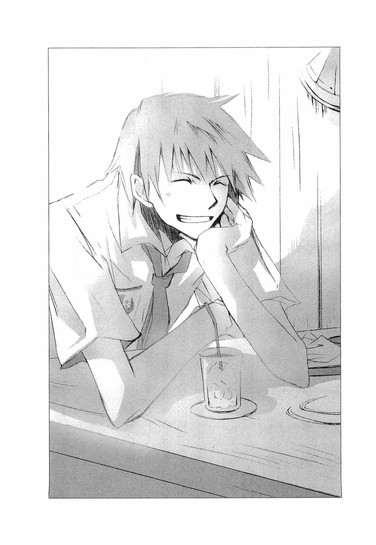
ぼくはこのときはじめて、彼がぼくと同じ高校生の男の子に見えた。
美羽は他の女の子たちとは違う特別な女の子だと、中学生のとき、ぼくも思っていた。
きっと美羽が、ぼくにとって最初で、最後の女の子なんだって。
美羽がいて、ぼくがいる。そんなあたりまえの日々が、いつまでもいつまでも、続いてゆくのだと──。
「オレとつきあわね？ って言ったら、『うん』って答えたから、向こうもつきあってる自覚はあるはずなんすよね。なのに、あいつ、全然オレに惚れてないんすよ。あいつの目にオレは映ってない。なのにオレとつきあってる。デートもする。キスしても逃げない。ヘンでしょ？どうしてオレとつきあってんのかとか？なにか問題抱えてんじゃないかとか考え出したら気になって。ただでさえ、蛍とつきあいはじめてからおかしなことばっかり起こるし」
「おかしなことって......？」
中庭で麻貴先輩が言っていたことを、ぼくは思い出した。雨宮蛍に近づくと、呪われるって。
「なんか、サングラスをかけたヤバそうな男にずっと後をつけられてるんす。歳は四十くらいすかね？スーツ着てて、髪も明るい色に染めてて、身なりは悪くないんすけど、雰囲気が暗いっていうか、生きたまま死んでるみたいっつーか......死神みてーな感じ。
蛍と会ってるとき、気がつくとそいつが少し離れた場所から、じっとこっちを見てるんす。蛍もわかってるみたいで、そいつがいるときは、オレの腕にしがみついて震えながら、『後ろ、見ないで......お願い、このままわたしから離れないで』って泣きそうな声で頼むんだ。けど、オレが『あいつは誰なんだ』って訊いても、答えてくれない。
それだけじゃなくて、夜道で、ジョン＝シルバーとその仲間たち──みたいなゴツイ連中に囲まれて、蛍と別れろってぶん殴られたり、夜の町で追いかけ回されたり、車でひき殺されそうになったり──一ヶ月のうちに、何度もヤバイめにあって......」
ぼくは唾を飲んだ。
「よ、よくそれで、雨宮さんとつきあうのをやめなかったね」
流人くんがしゃあしゃあと答える。
「そういうスリルあるの好きだし。逆に、ファイトわく」
やっぱり彼は、平穏を愛するぼくには理解不能な人種のようだ。
流人くんが顔をしかめた。
「オレのことは別にいいんすよ。ストーカーされたって、殴られたって。それより蛍本人が、すげーヤバイ感じで」
「ヤバイって、性格が？」
「いや、それもオレ的には問題ナシなんすけど、あいつ、全然、ものを食べないんすよ。この店にも何度か連れてきて、あれこれ勧めたけど、『いらない』って言って、こっちが適当に頼んで食わせようとしても、一口も食べねーし、水すら飲まねーの。
一度デートの最中に空腹でぶっ倒れたことがあって、家に送ってったら、すげー広い洋館で、なのに人が住んでいる気配が全然しなくて、家の人は？って聞いても黙っちまうし。
それと。あいつ、たまに別人になっちまうんです。夜になったり、薄暗い場所に行ったりすると、急に陽気になったり機嫌悪くなったりして、自分のこと『わたしは九條夏夜乃よ』なんて言い出すし」
ぼくは、身を乗り出した。
「それ本当？ 雨宮さんは、『九條夏夜乃』って言ったんだね？雨宮さんと九條夏夜乃は、同一人物なんだね？」
「心葉さん、〝夏夜乃〟に会ったことあるんすか？」
怪訝そうな流人くんに、これまでのことを説明する。
遠子先輩が設置した恋愛相談ポストに、謎のメモが投げ込まれていたこと。遠子先輩とポストを見張っていたら、怪寄現象が起こり、古い制服を着た女の子が現れて、ノートに文字を書き、それをちぎってポストに入れたこと。その子が〝夏夜乃〟と名乗ったこと。
流人くんが顔をしかめた。
「それ、オレが教えたのかもしんない。蛍に『学校の中庭に文芸部のポストがあるの知ってる？恋愛相談に乗ってくれるんだってさ』って話したことがあるから......」
いつの間にか、ぼくと流人くんは、雨宮さんの謎について真剣に語り合っていた。
「オレがヤバい目にあったことが遠子姉にバレるとうるさいから、内緒にしてくれます？そんで、蛍のこと出来る範囲でかまわないっすから、調べてもらえませんか？」
その頼みに、ぼくは内心やっかいなことになったなと思いつつ、「大して力にはなれないと思うけど、雨宮さんのクラスメイトに聞いてみるよ」と、答えていたのだった。
「ぼくのモットーは『君子危うきに近寄らず』のはずなんだけどなぁ......」
昼休み、ぼくは溜め息をつきながら廊下を歩いていた。
雨宮さんのクラスメイトで、去年ぼくと同じクラスだった森下くんを呼び止めて、聞いたところによると、雨宮さんに近づくと呪われるという噂は本当で、彼女とつきあった男の子たちは、車にはねられたり、駅の階段から転げ落ちたりして、ことごとく病院送りになったという。
「雨宮さんって大人しそうなのに、そんなに何人もの男の子とつきあってたんだ」
「だよなー。美少女なのは認めるけど、反応が鈍いってゆーかノリが悪いってゆーか、なんか暗いし。友達いなくて思いきり浮いてんもんな。あいつ昼休みもずっとぼんやりしてて、メシを食わねーんだぜ。雨宮が弁当持ってきたり、売店でパンを買ったりするの、誰も見たことないんじゃないかな。あれ、やっぱ拒食症かね？」
森下くんは、雨宮さんの元彼についても語ってくれた。
「おれが聞いたのは五、六人かな？ 一年生の終わりくらいから急にいろんな男とつきあうようになったみたいだ。どの男も評判のタラシだったり、ヤンキーだったり、ろくでもないやつばっかで、雨宮は顔に青痣つけて登校したこともあったな。きっと、男に殴られたんだろうな」
何故雨宮さんは短期間のうちに、そんな評判の悪い男の子たちとつきあったのだろう？何故、彼らは次々事故に遭ったのだろう？
流人くんはサングラスをかけた死神のような男に後をつけられ、『宝島』に出てくる海賊みたいな人たちに、雨宮さんと別れるよう脅されたと言っていた。これまで雨宮さんとつきあった男の子たちも、そうだったのだろうか？けど、なんのために？
あぁ、どんどん深みにはまってゆく。ぼくは探偵の器じゃないんだけどなぁ......。仕方がない。とりあえず、今日聞いたことを流人くんに話してみよう。
遠子先輩のほうは──......。
「二日続けてすっぽかしたら怒るだろうな、遠子先輩」
約束よと、頬をふくらまして去っていったのを思い出し、ぼくは廊下の壁に手をつき、唸った。
遠子先輩が半べそで訴えていた嫌がらせのことは気になる。けど、流人くんと組むほうが効率がよさそうだし、事件も早く解決しそうだ。
それに、オカルト現象や黒百合の送り主の見当はついていた。ぼくの予想があっていれば、遠子先輩の身に危害が及ぶことはないだろう。逆に遠子先輩の注意が、幽霊のほうへ向いてくれて助かるくらいだ。
そう結論を出し、ぼくは放課後、流人くんとの待ち合わせ場所へ向かったのだった。
昨日の店へ行くと、流人くんはいきなり女の子に顔を引っぱたかれていた。
「最ッッッ低────ッッッ！」
女子大生っぽいお姉さんが、コップに入った水を流人くんに浴びせ、大股歩きで肩をいからせ店を出て行く。
「だ、大丈夫かい？」
「いや、いつものことすから。なかなかいいビンタで、美味しかったっす」
けろりとした顔で答え、ウエイトレスのお姉さんが持ってきてくれたタオルを平然と受け取る。
「悪いね、ハルミさん」
「もう慣れたわ」お姉さんが肩をすくめて苦笑する。
ぼくは唖然としてしまった。しょっちゅうこんなことをやっているのか？
テーブルの上には、食べかけのハンバーガーやチリビーンズや、コーラが並んでいる。
「ずいぶん早く来てたんだね。きみの学校はもう期末試験がはじまってるの？」
「いや、午前中で自主早退しました」
「サボったのか!?」
「そうとも言うっすね」
ぼくは頭痛を覚えながら、学校で聞いたことを話した。
「ふぅん、そんなろくでもない男とばっかつきあってたんだ」
てゆーか、きみも世間的には、かなり問題のある高校生だと思うぞ。
「九條夏夜乃のことも調べてみたよ。十七年前の学生名簿に名前があった。うちの学園の一年生と二年生に在籍していたみたいだ。けど卒業名簿には名前がなかったから、二年生のときに中退したのかもしれない」
「そうすか......」
そんな風に話していたときだ。
「流～、来たわよ」
「お待たせ～、流クン！」
他校の制服を着たショートカットの女の子と、ＯＬさん風の巻き髪にミニスカートのお姉さんが、同時に声をかけてきた。
よく見ると、ショートカットの女の子の後ろに、もう一人、同じ制服を着た大人しそうな女の子が、もじもじしながら立っている。
「きみ、また三股かけたのか!?」
思わず叫ぶぼくに、流人くんは「人聞き悪いすよ、心葉さん」と苦笑してみせ、明るい表情で彼女たちに話しかけた。
「あー、ミサキ、さんきゅな。っと、そっちが瀬川園子さんすね？ども、櫻井流人す。悪いすね、急に来てもらって」
「う、ううん」
大人しそうな女の子が、真っ赤になって、首を横に振る。
「こら、瀬川さんは真面目なんだから、誘惑しないの。流が、どーしてもっていうから、頼み込んで来てもらったんだからね」
「へいへい。あ、サエコさんも、会社早退させちゃって悪かったすね」
「あら、いいのよ、どうせ今日は暇だし。こっちのほうが楽しそうだもの」
ＯＬ風のお姉さんがウインクし、流人くんがひいた椅子に腰をおろす。
「あ、この人、井上心葉さん。聖条学園の二年生ね」
「よろしくぅ、宝女子二年の、加賀ミサキです」
「えっと、加賀さんのクラスメイトの、瀬川園子です」
「あたしは、橘サエコ。ＯＬしてま～す」
次々挨拶されて、へどもどしながら「い、井上です」と頭を下げる。
一体、流人くんは、どういうつもりだ？ こんなに女の子ばっかりぞろぞろ集めて、合コンでもはじめる気か？
疑惑の眼差しを向けるぼくに、流人くんはまたあの肉食獣のような顔つきで、にやりとしてみせた。
「瀬川さんは、小学校のとき蛍のクラスメイトで、仲良しだったんすよ」
驚いて瀬川さんのほうへ顔を向けると、こくりとうなずいてみせた。
「蛍ちゃんとはお家も近所で、ずっと同じクラスだったの」
息を飲むぼくに、流人くんが、さらに言う。
「こっちのサエコさんは、蛍の親戚の叔父さんの会社で働いてんだ。昼休みに、レストランでナンパして、来てもらったんすよ」
ナンパ!? しかも今日！
「うふ、ナンパされちゃいました～。流クン強引なんだもん。でも年下の男の子にリードされるのって、新鮮」
「もぉ、流ってば」
ミサキさんが、テーブルの下で流人くんの足を蹴り飛ばしたらしく、流人くんが「痛っ」と声をあげる。そんな流人くんを、ぼくは侮れない気持ちで見直していた。
昨日の今日で、雨宮さんの関係者を集めるなんて、誰にでもできることじゃない。
埋め合わせはしてもらうからねっと、頬をふくらませるミサキさんに、「わかったわかった」と、軽いノリでうなずいて見せると、流人くんは、ぼくらのほうへ向き直り、飄々とした口調で言った。
「んじゃ、瀬川さんから話をきかせてもらいましょうか？蛍は昔から、あんなにものを食わなかったんすか？」
雨宮さんの友達だった瀬川さんが、首を横に振る。
「ううん。小学生の頃は、普通に給食を食べていたわ。週に二回のお弁当の日も、家政婦さんが作った豪華なお弁当を持ってきて、わたし、つまませてもらったもの」
瀬川さんの話によると、雨宮さんのお母さんは、雨宮さんが小学一年生のときに病気でなくなり、家のことは家政婦さんがやっていたという。
雨宮さんは、お父さんと、お父さんの妹さんの三人で、大きなお屋敷に住んでいたそうだ。
中学一年生のときに、叔母さんが結婚して家を出ていった。それからすぐお父さんが、急な心臓発作で亡くなり、その二週間後に、今度は叔母さんが事故で亡くなった。
家族を失った雨宮さんの後見人になったのが、雨宮さんの義理の叔父さん──雨宮さんの叔母さんの旦那さんだったという。
瀬川さんは、暗い表情で話を続けた。
「その人が、家政婦さんや運転手さんたちを全員辞めさせて、お屋敷も売り払っちゃったの。蛍ちゃんの様子がおかしくなったのは、それからよ」
義理の叔父さんと暮らすようになってから、雨宮さんは、しだいに食事をとらなくなっていったらしい。はじめの頃は、給食を少し食べては残すということを繰り返していたが、そのうちまったくなにも口にしなくなった。
「蛍ちゃん、ごはんを食べるのを怖がっているみたいだった。給食の時間になると、なにかに怯えているみたいにびくびくして、急に後ろを振り返ったり、窓のほうをじっと見つめたり......。パンを一口囓ったとたん真っ青な顔で立ち上がって、トイレに行っちゃったこともあったわ。ずっと吐いていたみたいで、トイレから出てきたときは、げっそりしていて、見ているこっちが苦しくなるほどだったわ。
もしかしたら叔父さんと、うまくいってないんじゃないかと思って訊いてみたんだけど、蛍ちゃんは顔を強ばらせて黙っちゃって。それから、わたしのことも避けるようになって、一人でいるようになったの。今度は人形みたいに周りのことに無関心になって、いつもぼうっとした顔で、心が別の世界をただよっているみたいだった」
瀬川さんは、後見人の叔父さんが原因で、雨宮さんがおかしくなったと考えているようで、表情を曇らせたまま黙ってしまった。
代わりにＯＬのサエコさんが、興味津々という様子でつぶやく。
「ふぅん、うちの社長が、奥さんと義理のお兄さんを殺して、会社を乗っ取ったって噂は、根も葉もない中傷ってわけでもないのかもしれないわね？」
ぶっそうな話に、ぎょっとする。
雨宮さんの義理の叔父さんは黒崎保といい、会社は、もともと雨宮さんの亡くなったお父さんのものだったそうだ。彼が亡くなったあと、株を一番多く所有していた黒崎さんが社長に就任したのだ。
「ずっと海外で暮らしていて、あちらでばりばり働いてたエリートってことに、表向きはなってるわ。もっとも切れ者なのは確かで、今の社長になってから、会社の業績はどんどんあがってるけど。それに女子社員の人気も高いわ。なんたってまだまだ若いし、独身だし、顔もいいし、妙に女心をそそる雰囲気があるのよね。髪を明るい色に染めていて、目が弱いとかで色の入った薄いサングラスをかけてるんだけど、それも似合っていて素敵よ。年配の役員連中は、あの髪が気にくわないみたいだけど、あたしたちの間では好評ね。前の社長が生きてた頃は黒髪だったらしいけど、社長に就任した日に、あの髪で現れて、役員の度肝を抜いたらしいわ。
まぁ、やることがいちいち派手だから、敵は作りやすいかも。前の社長を殺害したんじゃないかって噂も、就任したときからずっとついて回ってるし、社長が警察に逮捕されても、社員は誰も驚かないわよ。ああ、やっぱりって思うんじゃないかしら」
ひどい言われようだ。雨宮さんの後見人は、よほどうさんくさい人物らしい。
「あっ、でもね、社長はこのごろ、様子がおかしいの」
「って、どんな風に？」流人くんが身を乗り出す。
「秘書課の子に聞いたんだけど、ここ一ヶ月くらい食事をほとんどとらないんですって。最近は、会社の近くのマンションに、泊まり込みで仕事をするほど忙しいみたいだから、ゆっくりごはんを味わうどころじゃないのかもしれないけど。仕事で取引先の人と会食をしなきゃならないこともあるでしょう？そうすると、食べたあとにトイレで吐いてるみたいなんですって。その子、社長の指に吐きダコがあるのを見たって言ってるわ」
ぼくと流人くんは、驚いて視線をあわせた。
食べたものを吐いてしまうなんて、まるで拒食症みたいじゃないか？雨宮さんだけでなく、その後見人まで、同じ症状だなんて。一体どういうことなんだろう？
サエコさんが、綺麗に整えた眉をひそめる。
「それに......今年に入った頃かしら？ 病院から電話がかかってきて、すごく興奮して一方的に怒鳴りまくってたらしいの。『検査をやり直せ』とか『有り得ない』とか──社長は普段は冷静で、感情を表に出さない人なのよ。なのにそのときは声を張り上げて、すごかったって。
それと、先月、大雨の日があったでしょう？風がびゅーびゅー吹いて、電車が止まっちゃって大変だった日よ。あの日、秘書の子が社長の部屋へ行ったら、社長が窓を全開にして外を睨んでいたんですって。雨と風が吹き込んで、部屋の中は大惨事よ。なのに全身ずぶ濡れで目をギラギラさせて、『ちくしょう』とか『時間がない』とか、ぶつぶつつぶやいていたそうよ。完璧にイッちゃってて、今にも飛び降りそうなヤバげな雰囲気で、その子、怖くて声をかけられなかったってブルってた。
もしかしたら社長は病気なのかもしれないわね。しかもかなり重病で、明日をも知れぬ命かも。警察に逮捕されるより、血を吐いてぶっ倒れるほうが先だったりして」
サエコさんの口調は冗談ぽかったけれど、ぼくも流人くんも笑えなかった。
ミサキさんたちにお礼を言って店から送り出したあと、流人くんは椅子にもたれて腕組みし、険しい表情で言った。
「オレを尾行してた男は、蛍の後見人の黒崎っすね。明るい髪に、薄いサングラス──長身、特徴もあう。蛍の家に行ったときは、あんまり人気がないから、まさかこのデカイ屋敷に一人で住んでんのかって、びびったんすけどね......叔父さんと住んでるってのは、最近までオレも知らなかったす。その話は、蛍が嫌がるから......」
「どうして、雨宮さんの叔父さんは、きみをつけたりしたんだろう」
雨宮さんのことを心配して？ いや、デートのたびに後をつけまわすなんて度が過ぎる。ヤクザを雇って流人くんを脅したり、雨宮さんの元彼に怪我をさせたのも、彼の仕業なのだろうか？
雨宮さんと仲の良かった瀬川さんは、『蛍ちゃんは叔父さんと暮らしはじめてから、ものを食べなくなった』と話していた。雨宮さんの叔母さんが、お父さんが亡くなった二週間後に事故に遭い、亡くなったことも、偶然なのだろうか？
ＯＬのサエコさんが言っていた『社長は重病なんじゃないかって』という話も気になる。もし『時間がない』という言葉が言葉通りの意味なら、残された時間で、彼がなにをしようとしているのかわからない。
それに、雨宮さんが暮らしているというお屋敷のことも......。雨宮さんの元の家は、黒崎さんが売ってしまったということだけど、わざわざ別の家を用意する意味があったのだろうか。二人暮らしをするので、マンションに住みはじめたとかならわかるけど、流人くんの話では、新しい家も、かなりの豪邸らしいし......。
考えれば考えるほど、胸の中にひたひたと泥水がたまってゆくような、嫌な感じがする。
「夏夜乃も......結局誰だったんだろう？」
つぶやくと、眉根を寄せて考えに沈んでいた流人くんが視線をあげた。
「ああ、言ってなかったすね。蛍の家族のこと調べたらわかりました。九條夏夜乃は、蛍の母親っすよ。九條は旧姓す」
◇ ◇ ◇
時間がない──。
便器に顔を押しつけ、酸っぱい胃液を吐き出しながら、彼は唸った。
吐いても吐いてもまだ足りない。胃の中のものをすべて掻き出し、放出しなければならないという衝動にかられ、彼は口の中に人差し指を突っ込む。
喉の奥まで指を差し入れ、柔らかな肉に爪を立て、えぐるように動かす。
空っぽの胃が痙攣し、喉がひくひくと鳴り、唇からよだれと一緒に黄色い液がこぼれ出る。そこに赤い血が混じっているのを見て、彼の胸に、闇にうねる波のように激しい怒りと憎しみが押し寄せる。
砂時計の砂が、さらさらとこぼれ落ちるように、終わりの時が近づいている。
時間が欲しい。
地位も財産も全部くれてやる。時間が──時間だけが、足りない。
込み上げる嘔吐感。胃がすべてを拒絶する。全身を焼きつくすようなこの飢えと痛みはいつまで続くのか？砂が落ちる音が、耳を離れない──！
ドアの向こうで、秘書の女が彼を呼ぶ声がする。
彼が見せた狂気に、秘書は怯えている。それでも、自分の職務を忠実にこなそうとしているのだろう。震える声で、大学病院の坂田先生がお見えですと告げる。
ドアのこちら側から彼は叫ぶ。
追い返せ！
そうして、床に膝をつき頭を抱え、呪いの言葉を吐いた。
畜生、畜生......絶対許すものか。畜生......裏切り者、淫売、雌豚......みんな死んじまえ。
三章 ◎ ぼくが出逢ったきみ
週末の土曜を、ぼくは家でゆっくり過ごした。
「お兄ちゃん、お母さんが、おやつのスイートポテトが焼けたから、お兄ちゃんを呼んできてって」
おだやかな昼下がり、試験勉強の合間に机で本を読んでいたら、小学生になったばかりの妹が部屋に、とことこ入ってきて言った。
「うん、わかった」
「なんのご本、読んでたの、お兄ちゃん？」
ぼくの腕の下から背伸びしてのぞきこみ、見慣れない漢字に、大きな目をぱちくりさせる。
「舞花には必要のない本だよ。あとで別の本を貸してあげる」
ぼくは『摂食障害──拒食症・過食症──』と書かれたページを閉じ、本棚の高いところにしまった。
『こころの病気』というタイトルがついた本は、中学時代の終わりに、ぼくが部屋に閉じこもっていたとき、布団の中で読んでいた本だ。あのときぼくが見ていたのは『パニック障害』『過呼吸症候群』『強迫神経症』という項目だったけれど......。
心は体とつながっている。心が弱っていると体も壊れてゆく。そのことをぼくは、経験として知っている。
食べるという生きる上で一番基本になる行為を拒むようになってしまった雨宮さんの心は、どんな風に弱っていったのだろう。どうすれば、心は力を取り戻すのだろう。
そして、胃の中のものを吐いてしまうという黒崎さんも、壊れているのは体ではなく、心のほうなのかもしれない。
一度も会ったことのない黒崎保という人物が、ぼくはとても暗く不気味な存在に思えた。
彼の目的は、なんなのだろう？
「お兄ちゃん、あたし、動物さんが出てくるお話がいい」
舞花が、にこにこ笑いながら言う。
「じゃあ、おやつを食べたら一緒に探してみよう」
「うんっ」
嬉しそうにうなずく舞花の手を引いて、ぼくは階段を下りていった。スイートポテトの甘い香りが鼻をくすぐり、胃が小さく鳴り、口の中に唾が込み上げてくる。
今、ぼくは、当たり前のように食欲を感じることができる。
一度壊れてしまったぼくの心は、ときどき誤作動を起こしながらも正常に動いている。
そのことが、喉がしめつけられるように苦しく切ないのは、美羽の面影がしだいに遠ざかってゆくような気がするからだろうか。
我ながら矛盾している。普段は思い出にベールをかけ、必死に顔を背けているのに、ぼくは美羽を忘れたくないのだ。
夕飯のあと、切れてしまったシャーペンの芯を買いに、自転車で百円ショップへ出かけた。他に、お母さんから頼まれた食料品だの細々したものを購入しての帰り道。ふと気になって、学園へ行ってみた。
通り雨があったせいだろう。空気は涼しく、濡れた地面に月の光があたってきらきら輝いている。しっとりした闇の中に、校舎が白く浮かび上がっている。
まさか遠子先輩も、土曜日まで張り込みはしてないよな。
不安に思いながら、自転車にまたがって校舎を眺めていたときだ。
黒塗りの高級車が、校門の前で止まった。
ドアが開き、中からほっそりした女の子が出てくる。
あの子──！
心臓が飛び上がりそうになった。手に黒い鞄を持ち、旧式のセーラー服に身を包んで、ふらふらした足取りで校内に入ってゆくのは、雨宮さんに間違いない。
車が門の前から、すーっと離れる。暗いので運転手の顔はよくわからないけれど、背の高い細身の男性のようだった。
もしかしたら、黒崎さん？ けど、何故黒崎さんが、雨宮さんを学園へ？彼は雨宮さんの奇行を知っていて放置しているのか？
ぼくはペダルを必死に漕いで裏門に回り、自転車を駐輪所に置くと、中庭へ走った。
濡れた芝生にぺたりと座り込んだ雨宮さんが、ノートに文字を書いてはちぎり、ポストへ入れている。儚げな背中も、折れそうな首筋も、はじめて見たときと同じだ。
どうしよう？ 声をかけてみようか？
迷っているうちに雨宮さんは、鞄にノートをしまって立ち上がり、歩き出した。
校門へは向かわず、そのまま渡り廊下を進み、校舎の中へ入ってゆく。
え？ 鍵は？ かかっていないのか？どうして？
このままでは見失ってしまう。ぼくは、慌てて彼女のあとを追った。
月明かりに照らされた夜の廊下は、暗い運河のようだった。その上を、波にゆらゆら揺れる小さなゴンドラのように、雨宮さんが進んでゆく。
階段をのぼり、また廊下を進み、化学室の前まで来ると、雨宮さんは出入り口の引き戸のほうを向き、そのまま中へ入っていった。
部屋の中に明かりがともる。
壁に張りつき、幾度も唾を飲み込み、息を殺して様子をうかがうぼくの耳に、ガチャガチャ、バタンという物音が聞こえてくる。
これは......金属音？ ロッカーを開けている？そこからなにか出した？それから、水道を流す音と、椅子を引く音......？
あれ？ 急に静かになった。
気になって、薄く戸を開けて中をのぞき見ると、雨宮さんの姿はなかった。
全身から汗がいっきに引いてゆく。
そんな！ どこへ行ってしまったんだ？ ここは三階だ。まさか窓から外へ飛び降りたんじゃ！
引き戸を開け、教室に入る。中は電気がついていて明るく、窓もカーテンも閉まっている。薬品の酸っぱい匂いがし、前面に黒板、後ろにビーカーや器材の並ぶ棚。その間に、黒い耐熱机と椅子が、整然と並んでいる。
やっぱりいない！
まさか本当に幽霊なんじゃ──。
震えるほどの恐怖を感じながら、耐熱机の間を歩き回っていたときだ。
足の脛に、生温かいものが触れた。
「！」
喉の奥が引きつり、悲鳴がこぼれた。同時に、「きゃっ」という女の子の声が足元で聞こえた。
視線を下に向けると、旧式のセーラー服を着た女の子が、しゃがみこんでいた。
「あ、雨宮さん......！」
消えたと思った雨宮蛍は、片手に雑巾、片手にスプレー式の洗剤を持ち、机の中に半分体を押し込めるようにして、下のほうの壁をこすっていたのだった。
「な、なにしてるの？ 雨宮さん？」
あんまり驚いて、取り繕うのも忘れて、目を丸くしたまま尋ねると、頬をふくらませ軽く睨んできた。
「雨宮さんじゃないわ。わたしは夏夜乃。九條夏夜乃よ。ちゃんと名前を教えたでしょう？」
それは、きみのお母さんの名前じゃないか。けど、この状況で、突っ込みを入れることはできなかった。
「ゴメン。こんな時間になにをしてるの？ 九條さん」
「手紙を、消していたのよ」
雨宮さん──いや、夏夜乃が、暗い表情で壁のほうへ向き直る。そこには、消えかけて薄くなった数字が並んでいた。
〝42 46 43 42 43 ７ 14 4336〟
「もう全部消されて、なくなっちゃったと思ってたのに......これだけ、机の陰になって、残っていたのね......こんなもの、もう、必要ないのに......」
沈んだ声でつぶやきながら、雑巾でこしこしとこすり、数字を消してゆく。
「どうして必要ないの？」
「......だって、わたしも、彼も、死んじゃったんですもの」
「きみは、幽霊には見えないけど」
数字を消し終えた夏夜乃が、机の下からひょっこり顔を出し、よつん這いの姿勢のまま、にやりとする。
「あら、さっきは、真っ青な顔でわたしを見ていたわよ？わたしのこと幽霊だと思って、足がすくんじゃったんでしょう？」
「えっとそれは......」
口ごもると立ち上がり、くすくす笑った。前に中庭で聞いた病的な哄笑と違って、無邪気な明るい笑い声だった。いたずらっぽく見つめてくる目が、ぼくの胸の中にいる懐かしい女の子に、よく似ていた。
──ね？ 嘘をついてもわかるんだから。白状しなさい、コノハ？
──コノハは、すぐ顔に出るんだもん。けど、あたしのお願いをきいてくれるコノハも、嘘がつけないコノハも、好きよ。
まるで過去の夢を見ているような不思議な空気にとらわれ、胸が甘くしめつけられる。
美羽も、こんな風にぼくをよくからかった。
ぼくを見つめて、まぶしく笑っていた。
もちろん、ぼくの前にいるのは美羽ではない。美羽には、もう会えない。
けれど、錯覚でもいいから、ぼくはこの懐かしい空気に、ひたっていたかった。
嘘でも夢でもいい。あの頃に戻れたら──......。
そんなこと現実には不可能なのに。
でも、でも、もし──......。
「ねぇ、きみはどうして、文芸部のポストにメモを入れているの？あの数字にはどんな意味があるの？〝彼〟って誰のこと？」
夏夜乃が、雑巾やバケツをロッカーに片づけ出す。白い手で、かちゃかちゃ、ごとごと......。密かな音を立てて......。そうしながら、本心を見せないつかみどころのない口調で言った。
「知りたければ、明日もここへいらっしゃい。そしたら、ヒントくらいあげてもいいわ」
口元を軽くほころばせ、焦げ茶色の目で誘うように、ぼくを見つめる。
ぼくはまだ夢の中にいるみたいなぼんやりした気持ちで、化学室から出てゆく彼女を見つめていた。
ふわふわした足取り。
膝下で揺れる、制服のスカート。
今のは、約束だったのだろうか？
翌日の日曜日、ぼくは朝からずっと夏夜乃のことを考えていた。
彼女は本当に、今日もあの場所へ来るだろうか？
夕方までずっとそんなことを考え続けて、夜になると不安な気持ちで、学園へ向かった。昨日と同じように廊下を進み、階段を登って化学室へ行く。
引き戸を開けると、夏夜乃は月の光を浴びて、窓際に立っていた。電気はついておらず、カーテンも窓も全開で、冷たい銀色の光が部屋の中を満たしている。
ぼくがやってきたのを見て、夏夜乃は可愛らしく微笑んだ。
「こんばんは、コノハ」
コノハとぼくを呼ぶ口調も、美羽に似ているような気がした。
耳をくすぐる甘い声──。
彼女は美羽ではない。それどころか、すでにこの世にいない人間なのに、ぼくの胸はどうしようもなく震えた。
「約束だよ。教えて。ポストに入っていたメモの数字には、どんな意味があるの？」
「あら、わたしはヒントをあげるって言っただけよ？」
「じゃあ、そのヒントをくれないか？」
夏夜乃がスカートの裾をひらめかせ、耐熱机に腰かける。
「ヒントは、わたしの名前。〝か、や、の〟よ」
「わからないよ」
「くすくす、しっかり考えて、探偵さん」
「ぼくは、ただの高校生だから、それだけのヒントで推理をするのは無理だよ。別のヒントはないの？」
「なら、彼の話をしてあげる」
つぶやく彼女の瞳に、愛おしげな光が宿るのを、ぼくは見た。
「彼は、誰よりもわたしの近くにいたわ。わたしの片割れで、わたしの〝半分〟だったの。わたしたち、どこへ行くにも、なにをするのも一緒だったわ......」
窓から差し込む清らかな月明かりが、遠い過去の記憶を、現在に運んでくる。
時の欠片が白い羽になり、月の光とともに、ぼくの上にゆっくり舞い落ちてくる。
ぼくらもそうだった──。
どこへ行くのも、なにをするのも、一緒だった。美羽はぼくの魂の半分だった。少なくともぼくは、美羽のことをそんな風に想っていた。
「彼とわたしは、とても楽しい時間を過ごしたの。けど──」夏夜乃が、寂しそうに睫毛を伏せる。「彼は、わたしに腹を立てて、いなくなってしまったわ。わたしたちは、二度と会えなくなってしまったのよ」
心臓を貫くような痛みに、ぼくは胸を押さえた。
ぼくも、もう会えない。
美羽は憎しみに満ちた目をぼくに向け、ぼくを拒絶した。
あんなに好きだったのに、二度と会えないのだ──。
「ねぇ、失ったものを取り戻す方法を、コノハは知っている？」
ぼくをじっと見て、夏夜乃が真顔で問いかけてくる。
ぼくはシャツの胸元を固く握りしめ、震える声で答えた。
「──それは、無理だよ。一度なくしたものは、取り戻せない」
夏夜乃がわずかに目を伏せ、淡々と告げる。
「いいえ。とても簡単なことよ。時間を戻せばいいのよ。そうすれば、二度と同じ過ちは繰り返さないわ」
それはまるで、悪魔のささやきのようだった。
時間を巻き戻すことができれば──過去のあの日に戻ることができれば──。
長い長い冬の間、ベッドの中で布団を引きかぶり、幾度願ったことだろう。
小説を書く前の自分に戻れたら、美羽が屋上から飛び降りたあの日に戻れたら──。
神様、どうか願いを叶えてください。時間を戻してください。
美羽を失わずにすむのなら、他にはなにもいりません。
神様、神様。
けれど、時間は戻らなかった。
ぼくは今、独りでここにいる。
「──無理だ。時間を戻すことなんて、不可能だ」
震えるぼくを見て、夏夜乃はふいに哀しそうな顔になり、小さな声でつぶやいた。
「......そう......コノハも、時間を戻したいと思ったことが......あるのね」
耐熱机から足をおろし、ぼくのほうへ歩いてくる。両手をのばし、ぼくの頭をそっと抱えて、薄い胸に引き寄せた。
その行動が、彼女のどんな気持ちから派生したものなのか、ぼくにはわからなかった。
ただ、彼女はとても哀しそうで、少しだけ震えていた。細い体は雪のように冷たく、どこかで嗅いだことのある清潔な香りがした。
幻のような抱擁に、ぼくはかすかな安堵と、疼くような痛みを覚えながら身をゆだねる。
このまま時間が止まってしまってもいいような気がした。
けれど、少しの間、そうしていたあと、夏夜乃はぼくから離れ、つぶやいた。
「行かなきゃ。人を待たせているの」
廊下のほうへ歩き出すのを見て、ぼくはようやく我に返った。まだなにも話していない。彼女を行かせたくない。
「ま、待って──。えっとその、な、なにか食べにいかない!?」
ああ、なんて泥臭い誘い文句なんだ。もっと上手いことが言えないのか。
夏夜乃が振り向く。
「......ダメよ。わたしは、彼が持ってくるものしか食べないわ」
先ほどぼくを抱きしめたときとは全く違う、突き放すような口調で告げ、夏夜乃は教室から出て行った。
◇ ◇ ◇
時間を巻き戻すことは可能だろうかと、彼女はつぶやく。
それは、到底不可能なこと。神に逆らう悪魔の所行である。しかし彼は、実際にそれを行ってみせた。悪魔と契約を交わし、墓の底から彼女を連れ戻した。彼は、不可能を可能にし、彼女は、今、ここにいる。
月に照らされた夜の世界を、彼女は軽やかに踊り狂う。
「彼女はわたし、わたしは彼女」──歌うように語りながら、日ごとに、彼女は、もう一人の彼女になってゆく。彼女の中で、別の彼女の存在が日増しに大きくなり、もとの彼女は消えてゆく。彼女でない彼女が、彼女の体で彼女の声で、笑い歌い、愛する。
彼に向かって手をのばす彼女、彼に向かって、ささやきかける彼女。
彼女の中の彼女に、彼女は悲痛な声で訴える。
どうか、これ以上、彼に触れないで。彼に微笑みかけないで。彼を求めないで。
だって、〝わたし〟は、その男を、殺したいほど憎んでいるのだから──。
◇ ◇ ◇
週明けの月曜日。遠子先輩は、朝からかんかんに怒ってやってきた。
「あれほど念を押したのに、金曜日はよくもすっぽかしてくれたわね！心葉くん！」
遠子先輩の来訪は予期していたけど、まさか朝一で襲撃を受けるとは思わなかったので、完全に逃げ遅れてしまった。
「えーと......持病のしゃっくりが急に止まらなくなって、病院へ行ってたんです」
「心葉くんにそんな持病があるなんて、聞いたことないわ！心葉くんを待っている間に、図書室を三往復もして、Ｏ＝ヘンリーの短編集と、芥川龍之介の短編集と、星新一さんのショートショート集を読んじゃったわ」
「どうして短編ばっかりなんですか？」
「心葉くんが来たら、すぐ切り上げられるようにわざわざ短編集にしたのよ。なのに、いつまでたっても来ないし、花キュー×ッドで、特大の黒百合の花束は届くし、図書室へ行って戻ってきたら、部室の壁に〝帰ってきたのよ〟って赤で書いた大きな紙が貼ってあるし──」
遠子先輩はぼくに、今朝ポストからとってきたというメモを突きつけた。
「見て、今日のメモはさらにパワーアップして、なんと血しぶきつきよ」
黄ばんだメモに、赤い染みが派手に飛び散り、そこに筆ペンで〝あれは不吉な鳥〟〝壁を血で塗りかえる〟〝巣の中の小さな骸骨〟と書いてあるのを見て、ぼくはちょっぴり目眩がした。
「それにほら、こっちも」
引きちぎられた大学ノートに、数字が並んでいる。
〝５ 16 43 4714〟
〝42 13 12 24 43 13 14〟
〝14 41 47５ ３ 24 21 43２11３1643〟
──本当に、この数字は、どういう意味なんだろう？ヒントは自分の名前だと、彼女は言っていたけれど......。
メモを見おろしながら、休日の出来事を思い起こしていると、頬のあたりに視線を感じた。
顔をあげると、鞄を肩から提げた琴吹さんが、ぼくを睨んでいた。
目があってしまったので、仕方なくにっこりしてみる。すると、慌てたように瞳を丸くし、それからツンとそっぽを向いてしまった。
ああ、どうしてここまで嫌われてるのかな。
「心葉くんたら、なにをニコニコしたり溜め息ついたりしてるの？どこを見てるの？」
遠子先輩が、ぼくの鼻を親指と人差し指でつまむ。
運良く、そこで救いのチャイムが鳴った。
「ああ、もぉっ、お昼休みにまた来るわ。逃げちゃダメよ？わかった？」
何度も振り返って念を押し、去っていったのだった。
「ごめん、遠子先輩」
小声で謝りつつ、ぼくは昼休みになると、さっさと図書室へ避難した。
『おなかがぺこぺこのときに図書室へ行くのは、とっても辛いのよ、ご馳走が目の前に並んでいるのに、眺めるだけで食べられないんですもの』と言っていたので、ここなら逆に安全だろうと予想したのだが、カウンターに琴吹さんが座っているのを見て、引き返したくなった。
うわっ、今日はアンラッキーディか？
向こうもぼくに気づき、唇を尖らせ、思い切りガンを飛ばしてくる。
クーラーがきいているはずの部屋がとたんに暑くなり、ぼくは蛇に睨まれた蛙のように脂汗をかきながら、カウンターの前を、軽く会釈し通り過ぎた。
琴吹さんが、キッと眉を吊り上げる。
毒を吐かれる前に、さかさかと早足で、閲覧コーナーのほうへ向かう。
席を物色していると、窓際に意外な人の姿があった。
夏夜乃？ いや、違う。雨宮さんだ──。
手に薄いハードカバーの本を持ち、ページをめくっている。うつむき加減の白い横顔は、冬の水面のように静かで寂しそうだった。
ぼくは息を潜めて、雨宮さんのほうへ近づいていった。
「雨宮さん」
声をかけると、びくっとして顔を上げる。そのとき本のページがめくれ、表紙の裏側に細かい数字がびっしり書いてあるのを、見てしまった。
雨宮さんが慌てて本を閉じ、怯えているように体をすくませる。
この弱々しい目は、やはり夏夜乃ではなく、雨宮さんのほうだ。内気な雨宮さんを驚かせてしまったことを申し訳なく思いながら、今見たものには触れず、明るく感じのよさげな顔で笑ってみせる。
「こんにちは、ぼくのこと、覚えてるかな？」
尋ねると、本を胸に引き寄せるように抱きしめ、うなずいた。
「井上くん......だよね？ あのときは、ありがとう......」
夏夜乃でいるときの記憶は、雨宮さんにはないのだろうか？それとも、知らないふりをしているだけ？そのへんの判断がつかないまま、ぼくはおだやかに言葉を続けた。
「よかった。名前、覚えていてくれて。隣、座ってもいいかな？」
「......どうぞ」
「ありがとう」
隣の椅子にするりと腰かける。化学室で夏夜乃と会っていたときは、非日常的な状況に幻惑されて気づかなかったけれど、こうして見ると、雨宮さんは保健室へ運び込んだときより、さらに痩せたみたいだった。肌は白いのを通り越して青ざめ、腕の血管が浮き出て見える。本を持つ指も今にも折れそうだ。
「読書の邪魔をしちゃってごめんね。なんの本を読んでたの？」
「マクドナルドの......『昼の少年と夜の少女』」
「ああ、それ、児童文学でファンタジーを書いている人だよね？『北風のうしろの国』を読んだことがあるよ」
嘘だった。遠子先輩が嬉しそうに蘊蓄を垂れながら食べているのを見て、タイトルを記憶していただけだ。
「その本は、どんな話なのかな？」
雨宮さんがうつむく。
「......悪い魔女に、赤ちゃんの頃から岩山に閉じこめられて、夜の世界しか知らない女の子が......昼の世界しか知らない男の子に......会うお話......よ」
「へぇ、おもしろそうだね。ぼくも読んでみたいな」
なんとか表紙の裏を、見ることができないだろうか。
けれど、細い肩が小さく震え、本を抱きしめる指に力がこもるのを見て、ぼくはそれ以上の追及をあきらめた。
さりげなく身を引き、なんでもない世間話をする調子で言う。
「ファンタジーっていいよね。『ナルニア国物語』とか『はてしない物語』とか、異世界で冒険する話って、夢があってわくわくするよ」
「......そうだね」
雨宮さんの唇が、のろのろと動く。
「わたしも、どこか別の世界へ行けたらいいのにな......。この本の女の子みたいに......わたしも、昼の世界へ行けたらよかったのに......」
自分自身につぶやきかけているような儚い、哀しい、諦めの漂う口調だった。
その姿は、夏夜乃とはあまりにも対照的で、弱々しく、ぼくは胸を突かれ、雨宮さんの青白い頬と伏せた瞳を見つめた。
「えっと......その......雨宮さん、なにか悩みでもあるの？ぼくでよかったら話くらい聞けるけど」
伏せたまぶたをそっとあげて、雨宮さんがぼくを見る。
その瞳は、これまでのように虚ろではなく、目があった瞬間吸い込まれてしまいそうな、深さと憂いをたたえていた。
「井上くんは、良い人なんだね。井上くんは......わたしなんかに、近づいちゃダメだよ」
「雨宮さん......」
ひっそりと立ち上がると、雨宮さんは本を胸に抱えたまま、うつむき加減に去っていった。
昼の世界へ行けたらよかったのに......という言葉が、耳の奥で繰り返し響いた。
雨宮さんが持っていた本──。ずいぶん古いものみたいで、表紙が色あせていた。裏に書かれた細かな数字──あれは、なんなのだろう。
土曜の夜、夏夜乃は、壁の数字を雑巾で拭き取っていた。きっと数字には、なにか重要な意味があるのだ。
──ヒントは、わたしの名前。〝か、や、の〟よ。
あの数字は、夏夜乃だけではなく、雨宮さんも読むことができるのだろうか？
何故、雨宮さんは、夏夜乃に変わってしまうのだろう。
そうなったきっかけは、なんだったのだろう。
黒崎さんと暮らしはじめる前、雨宮さんは、お昼休みに友達とおしゃべりをしながらごはんを食べる、ごく普通の女の子だった。
それが、どうして、食べられなくなってしまったのだろう。
やはり黒崎さんに、関係があるのだろうか？雨宮さんを夜の世界に閉じこめている悪い魔女は、彼なのだろうか？
──......ダメよ。わたしは、彼が持ってくるものしか食べないわ。
夏夜乃が言っていたあの言葉も気になる。
それに、『近づいたらダメ』って、どういうことなんだろう......。
「ああ、やっぱりわからないや」
机に肘をつき、頭を抱えてしまう。
はじめは流人くんのアシスタントのつもりだったのに、〝夏夜乃〟と〝蛍〟の秘密に、ぼくはすっかり心を奪われていた。
きっと化学室で、夏夜乃にあんなことを言われたせいだ。
──失ったものを取り戻す方法を、コノハは知っている？
それは簡単なことだと夏夜乃は言っていた。時間を戻せばいいのだと。
現実には、そんなこと不可能なのに。
夏夜乃も時間を戻したいと願ったことがあったのだろうか？それは叶えられたのだろうか？だとしたら、何故夏夜乃は、夜ごとに彷徨わなければならないのか？
ダメだ。いくら考えても堂々巡りで、胸が押しつぶされるように苦しくなるばかりだ。
昼休みも終わりに近づき、ぼくは席を立った。
カウンターの前で、ふと殺気を感じて横を向くと、琴吹さんが唇を尖らせ、ぼくを睨んでいた。
「見たよ」
責めるようにぼそっとつぶやかれて、足が止まり、つんのめった。
な、なんだ？ なにを見たっていうんだ？ 琴吹さんはなにを怒っているんだ？
「最悪」
はぁ？
なにが最悪なのか、どうして毒を吐かれるのかチンプンカンプンのまま、琴吹さんは唇をきゅっと噛みしめあさっての方を向き、カウンターから出ていってしまい、ぼくは途方にくれて、それを見送ったのだった。
わかんないよ、琴吹さん。
◇ ◇ ◇
十六歳の誕生日に、彼女は懐かしい人に会った。
彼女が天の園に暮らしていた頃、彼女に惜しみない愛情を注いでくれた優しい人。その人は、彼女に古い本を手渡した。
中に書かれていたのは、秘密の言葉。
暗い闇の中で、〝もしかしたら〟〝いつかは〟と夢見ていた未来を彼女から奪い、さらに絶望的な夜の底に突き落とす呪われた言葉。
もはや、どこにも救いはない。そんなもの願ってはいけない。彼女は罪にまみれている。
ひとりぼっちの教室で、黒い絵の具を流したような闇に溶けてゆく景色を眺め、彼女はつぶやく。
「扉を開けて、別の世界へ行けたらよかったのに。そこでなら、わたしは、今とはまったく違う別の物語を生きることができるのに」
もし、昼の少年に出会えたなら、あたたかく懐かしいあの場所へ、戻ることができるかもしれないのに。
◇ ◇ ◇
「心葉くんっ」
窓の向こうに、モップを手にしたふくれっつらの遠子先輩がいきなり現れたので、ぼくは腰を抜かしそうになった。
放課後の清掃タイム。ぼくはベランダに出て、雑巾で窓を磨いていたのだった。
「どうして、うちのクラスにいるんですか？ しかもそんなモップなんか持って」
びびって尋ねると、遠子先輩は片手で窓をがらっと開けて、憤懣やるかたないといった顔つきで言った。
「心葉くんがわたしから逃げ回っているから、お掃除の途中で抜け出してきちゃったのよ。お昼休みに、図書室で女の子をナンパしてたってどういうこと？」
「なんですか。それ？」
ぼくは目をむいた。ひょっとして、雨宮さんと話していたことを言っているのだろうか？心当たりはそれくらいしかない。けど、なんで遠子先輩が知っているんだ？
「とぼけてもダメよ。ななせちゃんに聞いたんだから」
「えっ！」
遠子先輩の隣に、唇を尖らせ腕組みをした琴吹さんが出現する。
「間違いないです、遠子先輩。あたしはこの目で、井上がにやけた顔で女の子に声をかけるのを、はっっっっきり見ました」
うわぁ、琴吹さんが遠子先輩に告げ口したのか？一体何故？それにいつの間にか〝ななせちゃん〟〝遠子先輩〟と呼び合っている。
「それだけじゃありません。井上はこの前も女の子に囲まれて、遊びに行っちゃったんですよ」
「まぁ、そうだったの？ わたしが文芸部の行く末を思い煩いながら心葉くんを待っていたとき、心葉くんは女の子とちゃらちゃらデートしてたのね。心葉くんってそぉゆー子だったのね？文芸部が、豚の群れに襲撃されても、壁が血に染まっても、これっぽちも心が痛まないってゆーのね」
ぼくは慌てて口を挟んだ。
「ちょっと待ってください、飛躍しすぎです。妄想はやめてください。それに誤解です。ぼくは遊んでたわけでも、デートしてたわけでもありません」
「じゃあ、なにをしていたの？」
遠子先輩がますます頬をふくらませ、すねている目でぼくを見る。
「そ、それは......」
「言葉を濁すのは心にやましいことがある証拠ですよ、遠子先輩」
「って、琴吹さん」
「ええ、その通りね、ななせちゃん」
遠子先輩と琴吹さんに二人がかりで責められ睨まれて、ぼくはたまらず逃げ出した。
「ごめんっ、ぼく、急用があったんだ」
琴吹さんに雑巾を押しつけ教室へ駆け込み、机の横に提げていた鞄をつかみ、廊下へ飛び出した。
「ああっ！ 心葉くん！」
「卑怯者！」
二人の非難の声を聞きながら、すたこら走り去ったのだった。
琴吹さんも、いくらぼくが気にくわないからって、わざわざ遠子先輩に告げ口することないじゃないか。あ～、遠子先輩怒ってるだろうな～。
いつもの店で、憂鬱な気分で流人くんを待っていると、七十歳前後くらいの小柄でふっくらした女性を連れて入ってきた。流人くんにドアを開けてもらって嬉しそうに恥じらっている女性を見て、ぼくは戦慄した。
まさか、この人もナンパしたのか!?
目をむくぼくに、流人くんはしれっとした顔で、彼女を紹介したのだった。
「ちーす、心葉さん。この人は和田佳枝さん。蛍んちで働いてたスーパー家政婦さんす」
◇ ◇ ◇
もう、押さえきれない。
だから彼女は、手紙を書いた。
彼に向かって、もう一人の彼女に向かって、または人間の運命を司る大いなる何者かに向かって。
ノートに秘密の文字を書き連ね、ちぎってはポストに投函した。
どうかわたしの気持ちをわかって。
わたしの声を聞いて。
この願いを叶えて。
〝怖い〟
〝苦しい〟
〝幽霊が〟
〝来ないで〟
〝42 43 ７ 14 16 41 １ 431643〟
〝46 15 44 ６ 41 32 36 ７14〟
〝14 41 47５ ３ 24 21 43２11３1643〟
◇ ◇ ◇
化学室の戸を開けると、夏夜乃は耐熱机に座り、窓のほうを向き、闇に沈んでゆく景色を眺めていた。
伏し目がちで寂しそうな眼差しは、昼間図書室で会った雨宮さんを思いおこさせた。
「今日、きみのことを知っている人に会ったよ」
語りかけると、振り返って静かな目でぼくを見つめた。
「家政婦の和田さんに、きみたちのことをいろいろ聞いたんだ」
流人くんが紹介してくれた和田佳枝さんは、雨宮家にいたベテラン家政婦さんで、雨宮さんのお父さんが子供の頃から、雨宮のお屋敷で働いていた人だった。
「そう......わたし、ろくなことを言われてなかったでしょう」
夏夜乃が、淡々とつぶやく。
「家のことは和田さんに任せきりで、出かけてばかりいたとか......気が強くて我が儘で、しょっちゅう癇癪を起こして、お皿を床に叩きつけたり、大声でわめき散らしたりしていたとか......。聞かなくてもわかるわ。『奥様にまたハリケーンが来た』って、陰でよく言われてたもの。高志さんは紳士で優しくて、妹の玲子さんもお上品で可愛らしくて、二人ともわたしにとても親切にしてくれたわ。おうちも立派で、ごはんも美味しくて、まるで天国にいるみたいで......不満を感じる理由なんて、ひとつもなかったはずなのに、どうして、わたしは、ハリケーンを起こさなければならなかったのかしらね......」
高志さんは夏夜乃の旦那さんで、玲子さんは高志さんの妹だ。雨宮さんにとっては、お父さんと叔母さんにあたる。
和田さんは、『旦那様は、心臓が少し弱かったけれど、穏やかで優しい方でした』と、語っていた。奥様の歩いた地面まで崇拝しかねないほど、惚れ込んでいて、娘の蛍さんのことも、それは可愛がっていましたよと......。
『奥様も、蛍さんにだけは声を荒げたりしませんでしたね。よく、蛍さんを連れて、実家のお屋敷に里帰りされてましたよ。奥様のご両親は早くにお亡くなりでしたから、ご実家には、どなたもいらっしゃらなかったんですけどね。旦那様は、あの広い屋敷に女性だけで泊まるなんて危ないと、こぼしてらっしゃいましたよ』
『よほど、ご自分が生まれ育ったお屋敷に愛着がおありだったんでしょうねぇ。ご病気で亡くなられる前も、家へ帰りたい帰りたいと駄々をこねて旦那様を困らせていました』
そのお屋敷は、今はどうなっているんですかと尋ねると、和田さんは、不吉なことを語るように声をひそめた。
『蛍さんと黒崎さんが暮らしているのが、奥様のご実家ですよ』
『奥様が亡くなったあと、お屋敷はすっかり改装して人に貸していました。黒崎さんは、その人たちをわざわざ立ち退かせて住みはじめたんですよ。あんな高台の大きなお屋敷、二人で暮らすには不便でしょうに。一体どういうつもりなんだか......』
和田さんは、不服そうに顔をしかめてみせた。
ぼくも疑問に思っていた。何故、黒崎さんは雨宮さんが住んでいた家を売り払って、そんなに広い家にわざわざ引っ越したのだろうって。その家が、夏夜乃の生家だったなんて。これは偶然なのだろうか？
『もともと私は、黒崎さんのことを信用していませんでした。玲子さんが、あの人をお屋敷に連れてこられたときから、嫌な感じがして。もちろんあの人は誠実そうな紳士のふりをしていましたけど、食事のマナーが少しおかしかったですね。ポークソテーの付け合わせのレモンをお肉にかけずに、そのまま囓りついて、そのあと指を舌でなめてみたり。良いご家庭で教育を受けた紳士とは思えませんでしたよ』
『目がお悪いとかで、薄いサングラスをかけてらっしゃいましたが、ふとした折りに見せるサングラスの向こう側の目つきが、なにかこうゾッとするようなものがありまして......。口元は笑ってらっしゃるのに目は笑ってないといいますか......飢えた狼が虎視眈眈と獲物を狙っているような......そんな不吉な感じの目でした』
『旦那様は、黒崎さんとの結婚をずいぶん反対されたんですよ。なのに玲子さんが黒崎さんにすっかり熱をあげて、許してくれないなら駆け落ちするとまで言い出されて、認めないわけにいかなかったんですよ。その結果、あんなことになって......』
『可哀想に......蛍さんは、あの人に財産をすべて握られて、守ってくれるはずの親戚も遠ざけられて、一人になってしまったんです』
「和田さんは、蛍のことをとても可愛がってくれたわ。実の孫みたいに、世話をやいてくれたのよ。わたしが死んでからもずっと......」
視線を足元に向け、うつむきながら夏夜乃がつぶやいた。
「そうみたいだね。和田さんは、雨宮さんのことを心配していたよ。去年の秋──雨宮さんの十六歳の誕生日に会ったとき、とっても痩せていて、人形みたいにぼうっとしてたって」
「......」
「そのとき、和田さんは、きみから預かったものを、雨宮さんに渡したって言ってた」
『包装してあったので中身はわかりませんが、このくらいの箱でしたよ』
そう言って、両手で大学ノートくらいのサイズを作ってみせた。
『奥様が亡くなられる前に、蛍さんが十六歳になったら渡してほしいとおっしゃられて、ずっとお預かりしていたんです』
「きみは、雨宮さんになにを渡したの？」
細い肩が震え、なにかに耐えるように夏夜乃が自分の体に腕を回し、ぎゅっと抱きしめる。
「......それは、内緒よ」声が、らしくなく震えている。「誰にも、言ってはいけないの」
その姿も、表情も、細い指先も、白い足も、まるで今にも消え入りそうに儚げで──......。ぼくは思わず呼びかけた。
「雨宮さん？」
雨宮さんがびくっとして顔を上げる。そうして夏夜乃の表情で微笑んだ。
誇り高く尊大な笑み──。
「いいえ。わたしは夏夜乃よ。だって、蛍は誰にも必要とされていないもの。けど、そんなこともう、どうでもいいわ。どのみち、夏夜乃も蛍も、もうじき消えてしまうんですもの......」
「どういう意味？」
また急に哀しそうな顔をしたあと、彼女は床に、とんっと足をおろし、つぶやいた。
「この世界とはもうお別れなの。ねぇ、魂の半分が罪を犯して地獄に落ちるなら、残る片方も、そうあるべきじゃない？片方だけが救われて天国へ昇ってゆくなんて、間違っているわ」
その言葉が、なにを意味しているのか、ぼくにはわからなかった。頭の中で、彼女がこれまで口にしたことが、ぐるぐると渦巻いて、ぼくをひどく混乱させた。
このときぼくは、彼女のほうへ踏みだし、問いつめるべきだったのだ。
きみはなにを苦しんでいるの？ きみの本当の望みはなんなの？何故、過去に戻りたいと願ったの？何故、雨宮蛍は、九條夏夜乃にならなければならなかったの？
彼って誰なの？
けれど、ぼくの口も、足も、強ばったまま動かなかった。今、今、聞かなきゃ、次はもう会えないかもしれないのに。一体、なにをためらっているんだ！
彼女がやわらかな栗色の髪を、ふわりと揺らして、ぼくの前を通り過ぎる。
鼻先を、またあの匂いがかすった。どこかで嗅いだことのある、不安をかきたてる清潔な匂い。
まるで、幻が通り過ぎてゆくのを見送るように、ぼくは声をかけることもできず、その場に立ち尽くしていたのだった。
四章 ◎ 過去の亡霊
期末試験の一日目。ぼくは寝坊をしてしまった。
前の晩は、化学室でのことを、あれこれ考えていて勉強どころじゃなかった。
気がつくと机に突っ伏していて、時計を見たら、朝になっていたのだった。
「遠子先輩、来た？」
息を切らして、ぎりぎりに教室に駆け込み、芥川くんに尋ねると、
「それを残していった」
と、ぼくの机を指さした。
見れば、夏目漱石の『吾輩は猫である』の単行本が置いてある。
おそるおそるページをめくると、すみれ色の栞が挟んであって、そこにサインペンで大きく『心葉くんのばか！』と書いてあった。
その、語彙も技法もあったものじゃない文学少女らしからぬストレートな罵り文句に、ぼくはよろめいた。
ああ、なんて子供っぽいことをする人なんだ。これは相当怒ってるな......遠子先輩。
琴吹さんも相変わらずぼくを睨んでおり、頭の痛いことだらけだった。
「平気っすよ。遠子姉は単純だから、二、三日放っておけば、機嫌も直りますよ」
大惨敗の試験を終えての放課後。いつもの店でコーラを飲んでいた流人くんは、あっさり言い捨てた。
「いいや、遠子先輩は頑固だから、ギルバートに絶交宣言をかました赤毛のアンのように、延々根に持つに違いない」
「へぇ、遠子姉のこと、よくわかってるすね、心葉さん」
人ごとのように、にやにやされて、ぼくはカチンときた。
「あのさ、もとはといえば、きみのせいなんだけど。前から疑問に思っていたんだ。きみ、なんでぼくを巻き込んだのさ？」
「そら、たまたま心葉さんが、蛍と同じガッコだったから」
とぼける彼を、ぼくは睨んでやった。
「それだけが理由じゃないだろ？ この数日、きみを見ていて感じたよ、きみは行動力もあるし、口も回るし、頭もいい。ぼくと違って、きみなら探偵小説の主人公が立派に務まるだろうってね。きみは、ぼくの助けなんかいらなかったんじゃないか？なのに、ぼくを引きずりこんだのは何故？まさか探偵の非凡性を際だたせるために、間抜けなワトソン役が欲しかったわけじゃないよね？」
流人くんが、肩をすくめ苦笑する。
「そこまで性格悪くないです......ただ、知りたかったんすよ。遠子姉の作家が、どんなやつか」
頬がいきなり熱くなった。ぼくが遠子先輩の作家だって？一体なにを言い出すんだ。
「それ、どういう意味？」
動揺を隠して問い返すと、頬杖をつき、ぼくの顔をのぞき込むようにじっと見つめた。
「そのまんまっす。心葉さんのことが知りたかった。遠子姉が『心葉くんは黙ってて』って言ったとき、ああ、これが遠子姉がいつも話してる〝心葉くん〟かってわかって、それまでも遠子姉からいろいろ聞いて、心葉さんのこと気になってたけど、顔を見たらもっと気になって......それで学校へ会いに行ったんだ。蛍のこと協力してほしいって頼んだのは、心葉さんと会う口実が欲しかったからっすよ」
「きみ、男の子が好きなわけじゃないよね？ まるで口説き文句みたいに聞こえるよ」
男らしい顔に、子供みたいに屈託のない笑みが広がる。
「ねぇっすね。オレは女の子大好きすから」
「ぼくは、遠子先輩の単なるパシリで、おやつ係だよ。ぼくの書いた三題噺をぱりぱり食べながら、味がボケてるとか塩気が足りないとか、組み立てが雑でまろやかさがないとか言いたい放題だし、この間なんて、『辛い』って叫んで泣き出して、口直しにエイキンが食べたいって文句を言ってたよ。それにぼくは作家なんかじゃ──......」
刺すようにぼくを見つめた美羽のあの目が、頭の中一杯に広がり、心に爪を立てた。
その瞬間走った鋭い痛みに、思わず歯を食いしばる。
嫌だっ......！
もうあんな想いはしたくないっ。ぼくは、作家にだけは、絶対にならない。
「まぁ、いいっす......。その結論は、もうちょっと先にしときましょう。オレはまだ、心葉さんの書いたものを読んだことがないし」
含みのある口調でつぶやいて、流人くんはストローでコーラをじゅっとすすった。
ぼくは小さく深呼吸し、気持ちを落ち着かせた。遠子先輩が置いていったメモを鞄から出し、テーブルの上に並べる。
「......話を戻そう。これが、うちのポストに入っていたメモだよ。血しぶきつきとか、焦げ痕つきとかもあるけど、そっちは雨宮さんが書いたんじゃないと思うから、持ってこなかった」
〝憎い〟〝幽霊が〟〝助けて〟と書いてある紙片を見て、流人くんが顔をしかめる。太い指で一枚一枚メモをつまんでは、じっと睨みつけ、〝4331〟と書かれたメモを見て、怪訝そうに目を細めた。
「この数字、なんすかね」
「ぼくもわからないんだ。遠子先輩は〝死にさらせ（43）、みんなイチコロ（31）〟って意味だって言ってたけど」
「そりゃ......愉快っすね」
流人くんが苦笑する。
「まぁ、本人に訊いてみましょう」
「え？」
きょとんとしていると、流人くんは顔をあげ、目で微笑んだ。
「よぉ、蛍」
驚いてそちらを見ると、雨宮さんが戸惑いの表情を浮かべて立っていた。
流人くんが立ち上がり、雨宮さんの肩を抱いて戻ってくる。そのまま強引に自分の隣に座らせた。
「どうして......井上くんがいるの？」
ぼくの顔を見ながら、ささやくような小さな声で雨宮さんが尋ねる。
化学室で夏夜乃に会ったことも、図書室で雨宮さんと言葉を交わしたことも、流人くんに話していない。ぼくは、どんな顔をしていいのかわからず困ってしまった。
口元に笑みを刻んだまま、しれっとした口調で流人くんが言う。
「オレたち仲良しなんだ。な、心葉さん？」
「......流人くんとは、最近知り合ったんだ。黙っていてごめん。隠していたわけじゃなくて、言い出すチャンスがなかったんだ」
雨宮さんは、うつむいてしまった。
「とりあえず、なにか食えよ、蛍」
「......ごめんなさい、おなかいっぱいなの」
「そんなわけないだろ。今日は絶対食わせるからな。ハルミさん、鳥のサラダと、コーンスープ、それとフレンチトースト」
流人くんがウエイトレスのお姉さんに、オーダーを告げる。雨宮さんは細い指をスカートの上でからみあわせ、眉根を寄せ、哀しげな表情で身をすくめている。
「なぁ、蛍？ 文芸部のポストにこれを投函したのは、おまえだろう？」
〝助けて〟と書かれたメモを、流人くんが見せると、雨宮さんは顔をちょっとあげ泣きそうな目をし、またうつむいてしまった。
「......わたし、知らない」
「そんな顔で否定されても信じられねー。これはおまえが書いたんだ。オレからポストのことを聞いて、見に行ったんだろ？そして、毎晩メモを投函した。なぁ、どうしてそんなことしたんだ？誰かに話を聞いてほしかったのか？助けてほしかったのか？それならオレに言えばよかったんだ。オレが、おまえを助けてやる。一体、おまえはなにを悩んでるんだ？はじめて会った嵐の晩、古いセーラー服を着て、ブランコを漕いでいたのは何故なんだ？」
流人くんが、たたみかけるように問いかける。
「もしかしたら、おまえの後見人と関係があるんじゃないのか？」
雨宮さんの肩が、大きく揺れた。顔を伏せたまま、下唇をきゅっと噛みしめる様子に胸がしめつけられる。
「ぼく、席をはずしたほうがいい？」
そっと尋ねると、首を横に振り、つぶやいた。
「ううん......井上くんはいて。わたしが......帰るから」
そうして、あの深い憂いをたたえた美しい目で、流人くんを見つめた。
「今までつきあってくれてありがとう、流くん。今日は流くんにお別れを言うつもりで来たの。会うのは、これで最後にしよう」
流人くんは目を見開き、慌てて雨宮さんのほうへ身を乗り出した。
「なんだよそれ！ どうして急にそうなんだよ？後見人になんか言われたのか？オレの後をつけていたサングラスの男は、おまえの義理の叔父さんなんだろう？オレをチンピラに襲わせたのも、あいつなんじゃないのか？そうだろう？蛍!?」
雨宮さんが、か細い声でつぶやく。
「......流くんは、今までわたしとつきあってくれた人たちみたいに......離れて、いかないから......これ以上は、困る......」
「どういう意味だよ」
「......ごめんなさい」
雨宮さんが鞄をつかんで立ち上がったとき、料理が運ばれてきた。流人くんが雨宮さんの腕をつかみ、椅子に引き戻す。
「食えよ。これ全部残さず食えたら、別れるって話、考えてやってもいい」
怒りをむき出しにした激しい眼差しを、雨宮さんは泣きそうな顔で見つめ返していたけれど、やがて顔を伏せ、スプーンを手にした。
甘い湯気を立てているコーンスープを恐ろしそうに見つめ、全身を強ばらせ、震える手でスプーンを近づける。
とろりとした黄色いスープに銀色のスプーンを差し入れた瞬間、雨宮さんはスプーンを握る手に、ぎゅっと力を入れた。きっとそうしないと、スプーンを落としてしまいそうだったのだろう。
そのまましばらく躊躇している。けれど、意を決したようにスープをすくいあげ、スプーンごと口に入れた。
すぐに異変が起き、雨宮さんはまるで即効性の毒でも飲み込んだかのように、口を押さえ、椅子から崩れ落ち、床にしゃがみ込んでしまった。
雨宮さんの手からこぼれたスプーンが冷たい音を立てて、床に落ちる。
口元を手で覆ったまま、雨宮さんは目を見開き、びくびくと体を震わせた。
「おい、蛍──」
流人くんが自分も床に膝をつき、雨宮さんを抱き起こす。
「トイレに行くか!?」
首を横に振りながら「ううん、平気」と答えた雨宮さんの目が、店内のある方向を見て、再び大きく見開かれた。
「──！」
それは、はっきりとした恐怖の表情だった。
雨宮さんは流人くんを強く押しやり、鞄をつかんだ。
「ごめんなさい。わたし、帰らなくちゃ。ごめんなさい、ごめんなさい」
真っ青な顔で何度もつぶやきながら、出口に向かって駆け出す。
流人くんがあとを追いかける。ぼくも席を立って、二人を追った。
店の中ほどで、流人くんが雨宮さんの肩をつかむ。
「無理に食わせようとしたから怒ったのか？ 悪かった。ごめん。具合が悪そうだから家まで送るよ」
「ダメっ！」
雨宮さんが細い声で叫び、流人くんを突き放す。とにかく一刻も早くぼくらから離れたくて、この店を出たくて、焦っているみたいに見えた。
「もう、わたしに関わっちゃダメ。さよなら」
そう言って雨宮さんは、ドアの向こうへ走り去った。
「くそ......っ」
テーブルに戻るなり、流人くんが頭を抱えて突っ伏す。
「オレ、失敗しちゃったみたいだ、心葉さん。......あいつのこと、あんな風に追いつめるつもりじゃなかったのに」
ぼくより大きな体で、すっかり意気消沈してつぶやくのを見て、ああ流人くんも高校生の男の子だったんだなと思った。
マイペースで、女の子にモテモテで、行動力も決断力もあって、まるで探偵小説に出てくるタフなヒーローみたいな彼にもできないことはあるし、落ち込むこともあるんだ。
そんな彼を、ぼくは前より身近に感じた。
「元気を出して、流人くん。きみが雨宮さんを本気で心配しているのは、ちゃんと伝わっていると思うよ。明日学校で、ぼくから雨宮さんに話をしてみるよ」
「すんません」
それでも流人くんは、しばらくテーブルに顔を押しつけていた。
ぼくは、雨宮さんが流人くんを押しやる直前に見せた、あの怯えきった表情が気になっていた。
一体、雨宮さんはなにを見たのだろう。確か、向こうのほうだった......。
雨宮さんの視線を思い出し、そちらの方をそっとうかがってみる。
鉢植えが置いてあり、その後ろにテーブルがある。テーブルの上に珈琲のカップがひとつあるけど、席は空っぽだった。
別におかしなものはないみたいだ......。そう結論を出しかけて、ぼくはハッとした。
珈琲のカップから湯気が立っている。
中にまだ珈琲が入っていて、しかもそれは運ばれてきたばかりなのだ。
目を凝らしてさらによく見る。
テーブルにも椅子にも、荷物らしきものはない。
そこに座っていた人は、まだじゅうぶん温かい珈琲に手をつけずに、店から出て行ってしまったのだ。
◇ ◇ ◇
ルールを決めよう──と彼は言った。
きみはこの先、私が与えるもの以外、一切口にしてはいけないと。
一日目、彼女は学校で出された給食を胃におさめた。朝食を与えられていなかったので、胃が痺れるほどおなかがすいていて、涎が口の中にたまり、どうしようもなかったのだ。それに、給食を一人だけ食べずにいるなんて、恥ずかしくてできなかった。
彼は彼女に罰を与え、地下の部屋に鍵をかけ、三日間、彼女に食事を与えなかった。
閉ざされたドアの向こうで、彼女は空っぽのおなかを抱えてうずくまり、胃壁を爪でがりがりとひっかくような飢えと渇きに必死に耐え続けた。部屋の中にある水洗トイレからこぼれる水をなめて、命をつないだ。
四日目の朝、彼はドアを開け、彼女に食事を運んでくれた。野菜を煮込んだ甘いスープと、栗の入った蒸しパンを、彼自身の手で食べさせてくれた。
次に彼女が学校で、給食のシチューを三口、バターロールを半分食べたときも、彼は彼女にその罪を告げ、三日間、地下室のドアを開けなかった。
彼女は空腹のあまり朦朧とし、薄い闇の中に、死者の幻を見て、恨めしげに泣く声を聞いた。
──あいつが、わたしたちを殺したのよ。
──あいつは、復讐に来たのよ。
──あいつは、悪魔よ。
床にうつぶせに倒れ、ぐったりする彼女を抱き上げ、彼は七草と白身の魚を入れた粥と、甘く煮た林檎とオレンジを銀色のスプーンですくい、食べさせてくれた。
一欠片のクッキーを口にすることさえ、彼は許さなかった。
友人から渡されたそれを彼女が食べたことを、彼は淡々とした静かな声色で指摘し、泣きながら許しを乞う彼女の腕をとり、地下の部屋へ連れて行き、鍵をかけた。
彼女は五日間、そこで過ごした。
からからに渇いた喉が、熱くひきつり、胃が大きな手で、ぐりぐりと捻くりまわされているように激しく痛んだ。耳鳴りがし、幻聴がし、白い鬼火が周囲を怪しく飛び交った。もう涙もこぼれない。
──ごめんなさい、あなたがくださる食事以外は、決して口に入れません。
──ごめんなさい、ごめんなさい。二度と食べません。誓います。ごめんなさい。
そう、食べてはいけない。
彼女の空っぽの胃を満たせるのは、この世でただ一人彼だけ。
彼女は常に、彼の視線を感じていた。
廊下で、教室で、中庭で、階段で、彼は彼女を見ている。
壁一面に彼の顔が無数に浮かび上がり、青く燃える瞳で──憎しみに満ちた瞳で──彼女を責め立てる。
食べてはいけない。食べてはいけないと。
にぎやかな街の通りで、日差しが明るい公園で、恋人たちが集う映画館で、振り返ればそこに彼は立っている。すれ違う人々はすべて彼になり、公園で遊ぶ親子も、ベンチで語らう恋人たちも、映画館のスクリーンに映る俳優も、すべてが彼の顔に変わる。
薄いサングラスをはずし、彼女を見つめる彼。
熱い怒りと冷たい狂気が、鬼火のように揺らめくその眼差し。
彼が見ている。彼が、こちらを見ている。彼がじっと見ている。彼が見ている。見つめ続けている。見ている。見ている。見ている──。
◇ ◇ ◇
翌朝、雨宮さんのところへ行ってみたけど、お休みらしかった。
仕方なく自分のクラスへ戻ると、遠子先輩と琴吹さんが廊下で顔をくっつけて、ぼそぼそ話していた。
「わかりました。じゃあ、放課後」
「ありがとう、ななせちゃん。心強いわ」
「いいんですよぉっ、遠子先輩の役に立てるの、嬉しいです。あっ！」
ぼくに気づいた琴吹さんが唇を尖らせ睨んでくる。遠子先輩も振り返ってぼくを見た。
ぼくは、とりあえずにこにこしてみた。遠子先輩、機嫌を直してくれているといいんだけど......。けれどそれは、遠子先輩のお薦めで無理やり読まされた、アラブの王子様が活躍する激甘ハーレクインロマンスよりも、ご都合主義な甘い考えだった。
右手の人差し指を目の下にあてると、遠子先輩はピンク色の舌を出し、あかんべぇをした。
そうして、「また放課後ね、ななせちゃん」と言って、長く細い三つ編みを揺らして去っていったのだった。
高校生にもなって、廊下の真ん中で、女の子にあかんべぇをされたことにショックを受けながら、それを押し隠して琴吹さんに笑顔を向け、
「放課後、遠子先輩となにをするの？」
と尋ねたら、こちらもツーンと横を向き、
「井上には教えない。てゆーか、井上関係ないし」
と、きつ──い声で言われてしまった。
琴吹さんは、そのまま教室に入っていった。
うわ～、気になる！ 一体、放課後、二人でなにをする気なんだ～～～～！
掃除が終わって、教室を見回すと、すでに琴吹さんの姿は消えていた。
「ねぇ、琴吹さんがどこへ行ったか知ってる？」
琴吹さんの友達に尋ねても、
「さぁ、試験期間中は、図書当番はないはずだけど」
「急いで飛び出していったから、デートじゃない？ななせモテるし」
と憶測が返ってくるだけだった。
念のため文芸部の部室へ行ってみる。そこもやっぱり空で、焦げ茶色のテーブルの上にメモがばらまかれていた。大学ノートをちぎって書かれたメモ、過去からもたらされたかのような怪しく黄ばんだメモ、焦げ痕のついたメモ、血しぶきのついたメモ──。
大量のメモの横に、大きなビーカーに活けた黒い百合、古い生徒名簿、文集、学校新聞、怪しげな店名入りのポケットティッシュが置いてある。
生徒名簿も文集も学校新聞も、夏夜乃が二年に在籍していた年のものだ。中庭で雨宮さんが名乗った九條夏夜乃という名前を調べていたのだろう。
名簿の上に原稿用紙が一枚載っていて、それにサインペンで大きく、
『心葉くんなんて、もう知らない。わたしはわたしで、勝手にやらせてもらいます。by遠子』
と書いてあるのを見て、ぼくは目をむいた。
ああ......やっぱりめちゃくちゃ怒ってる。いくら事情があったとはいえ、黙って何度もすっぽかして悪かったかな。
昨日、遠子先輩が置いていった『吾輩は猫である』を鞄から出し、机に載せる。
そうして、『心葉くんなんて、もう知らない』と書いてある原稿用紙の隅に、シャーペンで小さく『ごめんなさい』と書いた。
これを見て、機嫌を直してくれるといいんだけど......。アンは何年くらいギルバートを、シカトし続けたんだっけ？
結局、遠子先輩と琴吹さんがどこへ行ったのかは不明のままで、ぼくは仕方なく、なんでも知っていそうな人のところへ足を運んだ。
「あら、一人で来るなんてはじめてじゃない？」
アトリエで、キャンバスに向かっていた麻貴先輩が、筆を動かす手を止め、にやりとする。
「もしかして、遠子に置いてきぼりをくらっちゃったかしら？」
どうもこの人は、すべてお見通しという感じで苦手だ。
彼女が学園内で〝姫〟なんて大層なあだ名で呼ばれているのは、その血統や人脈だけが理由ではない。彼女自身も、一筋縄ではいかない大したタマなのだ。
ぼくは世間様向けの爽やかな笑顔を、顔面にべったり貼りつけ、言った。
「知っているなら教えてください。麻貴先輩が、遠子先輩になにか情報を渡したんでしょう？遠子先輩が九條夏夜乃のことを調べていたのは知っています。ぼくのクラスメイトまで巻き込んで、うちの部長はなにをしようとしているんですか？」
麻貴先輩が、楽しそうにぼくに問いかける。
「それを教えたら、おたくは、あたしになにをくれるの？お察しの通り、あたしは遠子の望む情報をあげたけど、遠子はちゃあんと代償を払ったわよ」
だ、代償って......まさか！ ぼくは、こくりと唾をのんだ。
「描いたんですか!? 遠子先輩のヌード！」
思わずキャンバスに視線を走らせる。そこに描かれていたのは、黒や青で塗りたくられた暗い印象の風景画だった。場所は外国だろうか？荒涼とした夜の丘陵で、木や草が風にうねっている。隅から隅まで眺めても、遠子先輩のヌードらしきものは見あたらない。
「さぁ、どうかしら？ けど、そうね。なかなか見応えがあったとだけは言っておくわ」
麻貴先輩は、わざと煽るような言い方をする。
「で？ 心葉くん？ おたくも脱いでくれるのかしら？だったら思いきり耽美な絵を描いてあげるわよ。青春の記念に一枚どう？」
「ヌードは遠慮しておきます。けど、遠子先輩がどこへ行ったのか教えてくれたら、麻貴先輩が遠子先輩にしたことを、黙っていてあげますよ」
「あら、なにそれ？」
とぼける麻貴先輩に、ぼくは落ち着き払った口調で言った。
「幽霊騒ぎの犯人は、麻貴先輩でしょう？ぼくたちが中庭で張り込みをしているとき、校舎の明かりを点滅させたり、テープで女の人のすすり泣きやラップ音を流したりしましたね？それに、遠子先輩に黒百合の花束や不幸の手紙を送ったり、血糊つきのメモをポストに入れたのも、全部、麻貴先輩じゃないですか？」
麻貴先輩が筆を置き、腕組みして、ぼくを上から下までじろじろ眺める。
「ふぅん......その根拠は？」
「あれだけ派手にやらかしてくれたら、普通はわかりますよ。黒百合の花束なんか、まっとうな高校生がいたずらに使うには値が張りすぎます。校舎の明かりを操作するのも、理事長の孫である麻貴先輩なら可能ですよね。それらの条件を満たしつつ、遠子先輩に嫌がらせをしてメリットがあるのなんて、麻貴先輩くらいじゃないですか」
「あたしのメリットってなに？」
「遠子先輩がおたおたするのを見て、楽しんでいたでしょう？それで悪ノリして、メモに焦げ痕をつけたり、血糊を塗ったりして、グレードアップしていきましたね？それに、遠子先輩が幽霊の正体を突き止めようとムキになって、麻貴先輩に情報を提供してくれるよう頼みに来るかもしれない。そうしたら代償として、麻貴先輩の望むことを要求できますからね。実際、そうなったわけだし」
麻貴先輩はまだ、口元から笑みを消さない。
「それで？」
「遠子先輩が知ったら、怒り狂うでしょうね」
「遠子の行き先を教えたら、黙っていてくれるんだ」
「はい」
「残念ね。それは取引にはならないわ」
ぼくの口から、間抜けな声がこぼれた。
「へ？」
愚かな猿を見おろすお釈迦様の顔つきで、麻貴先輩が平然と告げる。
「遠子にバレたってかまわないもの」
「なっ、遠子先輩、頭から湯気立てますよ？ 一生根に持つし、絶交されますよ？学校の廊下で、あかんべぇをするようなガキっぽい人なんですよ、あの人は」
「いいわねぇ。遠子にふくれっつらで睨まれたり、あかんべぇとかされてみたいわ。怒った顔も、墨を塗って画用紙に押しつけて型をとりたいくらい可愛いもの。好きな子ほどいじめたくなるっていうでしょう？遠子に一生ねちねち恨まれるなんて、考えただけでゾクゾクするわ」
ぼくはすっかり唖然とし、それから脱力した。
ダメだ。麻貴先輩は流人くんと同じ嗜好の人だったのだ。こういう人に、ぼくら一般市民の論理は通じない。
肩を落とすぼくを見て、麻貴先輩はニヤニヤした。
「あたしを脅そうなんて百万年早いわよ、心葉くん」
「痛感しました」
「けど、その度胸に免じて、ひとつ教えてあげるわ。遠子はエレン＝ディーンに会いに行ったのよ」
エレン＝ディーン？ 聞いたことのない名前だ。てゆーか、外国人？
戸惑うぼくに、麻貴先輩は、きびきびとした口調で言い渡したのだった。
「さて、あたしは忙しいから帰ってちょうだい。最近、やることが多くて胃が痛いの。ご立派なじいさんたちが、あれこれうるさくてね。人の趣味にまで口出ししてくるんだから参っちゃうわ。これでも繊細なのよ」
エレン＝ディーンって誰なんだろう？ 九條夏夜乃の関係者だろうか？
遠子先輩はその人に会いに行ったのか？ けど、どうして琴吹さんも一緒に？
あれこれ考えながら歩いていたら、校門の脇から流人くんが急に飛び出してきた。
「待ちきれなくて来ちまいました。心葉さん携帯持ってないんだもんな。遠子姉もだけど、今時携帯は常識すよ」
「びっくりしたー」
「蛍の様子、どうでした？」
流人くんが真剣な顔で、身を乗り出してくる。
「それが、今日は雨宮さんはお休みで、会えなかったんだ」
「体調悪いんすか？」
「雨宮さんのクラスの人に訊いてみたけど、よくわからないって」
「......っ、もしかして、空腹で、ぶっ倒れてんのかも」
「そしたら、さすがに叔父さんも、病院へ連れて行くと思うけど」
「んなのアテにならねーすよ。叔父っつったって、元は赤の他人なんだから」
流人くんは、心配でじっとしていられないようだった。眉根を寄せて苛々と爪を噛み、それから急に顔を上げ言った。
「見舞い行きましょう、心葉さん」
◇ ◇ ◇
ゲームをはじめようと彼は言った。
太陽の光が決して差し込むことのない冷たい部屋で、蝋燭の明かりに照らされて、彼は唇をゆがめ微笑んだ。
「きみは、この先この部屋で、私のことを──と呼べ」
彼が彼女に告げたのは、昔死んだ男の子の名前。決して口にしてはいけない秘密の名前。それを彼は、彼女に教えた。
「私は、きみを──と呼ぼう」
「わたしは──じゃないわ」
「いいや、きみは──だ」
「違う。わたしは──」
「──は、そんな怯えたような目で〝俺〟を見たりしない、そんな卑屈な言葉を使わない、そんな風に後ずさったりしない、そんな風におずおずと俺に触れない、哀れみを乞うように声を震わせたりしない。そうじゃない──はそんな風には笑わない。もう一度、違う、それじゃあそのへんの臆病な小娘と変わらない。駄目だ、──のように笑えるようになるまで、食事はお預けだ。俺は──のためにしか作らない、〝おまえ〟に食わせるものなどなにもない。さぁ、この服に着替えろ、──は緑の服なんて着なかった」
それは、時を巻き戻し、死者を蘇らせる儀式。
窓のない灰色の部屋で、彼女は夜ごと彼の訪れを待つ。
階段をおりてくる彼の足音を息を潜め全身で聞きながら、彼の望む彼女になり、彼の望む表情で、彼の望む仕草で、彼の望む声で、彼を出迎える。
揺れる蝋燭の明かりだけが、彼の首に両手を回し抱きしめる彼女の、白い顔を熱く照らす。
ここには太陽の光は届かない。何故ならここは冷たい墓場で、わたしは幽霊なのだからと彼女は思う。夜の世界でなければ、幽霊は存在できない。だから昼間のわたしは死んでいる。夜の世界でだけ、わたしは生きて存在している。
くすんだ壁に、彼女の顔がいくつも浮かぶ。
彼女が彼女を見つめて嗤う。
彼女はペンを握りしめ、彼女の顔に、壁に、文字を書き連ねる。
心の中に渦巻く嵐のような言葉を、喉を震わせ吐き出すように、朝も、昼も、夜も、書き続ける。
けれど、あの言葉だけは、彼に教えてはならない。
あの古い本のページを、彼に開かせてはならない。
◇ ◇ ◇
雨宮さんの家は、寒々とした高台に建つ西洋風のお屋敷だった。
寂しげな坂道を延々と登り、ようやく辿り着き、門の前で見上げると、内側は木が鬱蒼と生い茂っている。空が曇り風が出てきて、木々がざわざわと揺れる様子がゴシックホラーぽくて不気味だった。
「あのさ、急に訪ねたら雨宮さんも迷惑じゃないか？それに、家の人もいるかもしれないし......」
「黒崎はこの時間は会社っすよ。それに、あんま家に帰ってないみたいだし、心配しなくても大丈夫す。蛍んちには、二、三度行ったことがあるすけど、いつ行っても、気配が、まったくなかったすよ」
「でも、病気で休んだのなら、寝ているかもしれないよ？」
正直ぼくは乗り気ではなかった。昨日、あんな別れ方をしたのに、家に押しかけたりしたら、ますます彼女を追つめてしまうんじゃないか。辛いとき、一人にしておいてほしいことって、あると思うし......。
「じゃあ、電話してみます」
流人くんがポケットから携帯電話をとり出す。誰の趣味なのか、可愛らしいうさぎのストラップがついている。
雨宮さんはすぐ出たようで、流人くんがホッとした様子で話し出す。
「ああ、オレ......。学校休んだって聞いたから見舞いに──って、蛍？蛍？」
どうしたのだろう？ 流人くんが顔色を変えて、雨宮さんに呼びかける。
雨宮さんは電話を切ったらしく、流人くんは舌打ちした。
「様子が変だ。すごく興奮してるし、泣いてるみたいだ」
そのとき門の向こうで、ガラスが割れる音が聞こえた。
流人くんが門に突進し、ぼくもあとに続いた。アーチ状の門は鍵がかかっておらず、拍子抜けするほど簡単に、中に入ることができた。
またガラスが割れる音がする。今度は、さっきよりはっきり聞こえた。
庭から見ると、一階の部屋のガラス戸が割れていた。
粉々に砕けた戸の向こうに、細長い棒を振り上げた人影が、一瞬映る。
玄関も鍵がかかっていない。ぼくらは建物の中へ駆け込んだ。耳を突き刺すような破壊音は続いている。靴のまま走ってゆく流人くんのあとを、必死に追いかける。
長い廊下を進み、流人くんが部屋のドアを開ける。すると、信じられないような光景が広がっていた。
テラスに面した大きなガラス戸が粉々に砕け、サイドボードや本棚のガラスもことごとく破壊され、薄い絨毯の上に透明な欠片が、砂利のようにばらまかれている。
引き裂かれたカーテンが外から吹き込む強風に煽られ、難破船のマストのように吹き乱れ、本棚に並んでいたと思われる高価な装丁の本も、すべて床に落ちている。
壁の絵は額縁が割れ、今にも落ちそうな様子で斜めに傾き、鹿の角が半分折れた無惨な状態で転がっており、ソファーは布が裂け中綿がはみ出ている。サイドテーブルの上に置かれた食器も割れており、テーブルがところどころへこんでいる。
そんな中、白い寝間着を一枚身につけただけの雨宮さんが、ゴルフのクラブを振り回し、部屋にあるものを叩き壊していた。
血がにじむほど唇を噛みしめ、燃えるように輝く瞳から涙をボロボロこぼしながら、枯れ木のように細い腕でクラブを振り上げ、時計や薄型テレビを破壊してゆく。
その様子に、ぼくは全身が粟立った。
雨宮さん？
夏夜乃？
いや、やっぱり雨宮さんなのか──!?
雨宮さんの両腕からも、足からも、頬からも、血が流れている。飛び散ったガラスの破片で切ったのだろう。なのに、そんなこと少しも気にならないというように歯を食いしばり、裾のふくらんだ古風なドレスを着た陶器の人形をクラブで横殴りした。
人形の頭が砕け飛ぶ！ 残った胴体も、スイカを割るように上からクラブを振り下ろし、叩き割る。
すでに床には、折れたクラブが二本、転がっている。
「よせ！ 蛍！」
流人くんが雨宮さんを後ろから抱きすくめ、クラブを取り上げ、放り投げた。
雨宮さんが、流人くんの顔に猫のように爪を立て、暴れる。
「はなしてっ！」
「どうした、蛍！ なにがあったんだ！」
目を血走らせ、引きつるような声で、雨宮さんは叫んだ。
「消えてっ！ 来ないでっっ！ あなたはもう死んだんだから！来ないで！出て行ってっ！どうして帰ってきたの？あなたの体は、もうここにはないんだよ、これは、わたしの体なんだよ？消えてっ！どっかへ行って！二度と現れないで！」
流人くんが雨宮さんを抱きしめ、自分の胸に引き寄せながら背中を強くさする。
「落ち着け、蛍。オレだ、流人だ。なぁ、わかるか。蛍？」
「蛍？ そう、わたしは蛍だよ。蛍なんだよっ。夏夜乃じゃない！お母さんじゃない！」
「ああ、そうだ、おまえは蛍だ。オレが証明してやる。おまえは蛍だ！雨宮蛍だ！」
雨宮さんが激しく首を振る。
「ううん、違う、わたしは夏夜乃なの。夏夜乃は、罪を償わなくちゃならないの。夏夜乃が全部壊したの。夏夜乃があの人の心を打ち砕いたの......可哀想に......あんなに夏夜乃だけを想っていたのに......ううん、違う、そうじゃない。壊したのは......あの人だわ。わたしからなにもかも取り上げて、わたしを幽霊にしたの。わたしから昼を奪い、太陽を奪い、夜の世界へ閉じこめた。お父さんも玲子叔母さんも、あの人が殺したのよ！」
雨宮さんの顔に恐怖が浮かび、がたがたと震え出す。
「怖い......あの人の目が怖い......わたしのことをずっと見ている......怖い......憎い......あの人のせいで、わたしの物語は変わってしまった。わたしもう、なにも食べられない。おなかもすかない。憎い......でも、逆らえない。怖い......怖い......怖いよ......」
サイドテーブルの上の、割れた食器をぼくは見た。
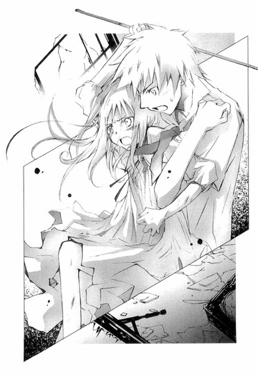
白いシチュー皿、パン皿、透明なサラダのボウル、ブルーのグラス......。
シチュー皿に薄く切った人参の欠片がへばりつき、割れたサラダボウルからこぼれたドレッシングが、テーブルに茶色い染みを作っている。
器の中身は空っぽだ。
誰かがここで、食事をしたのだ。それも、あまり時間が経っていない。
「わたし怖い......怖いよ、流くん」
雨宮さんが、ようやく流人くんの名前を呼んだ。泣き方が、少し穏やかになったようだった。流人くんが雨宮さんの髪や背中をなでながら、優しく語りかける。
「大丈夫だ、蛍。オレがいるから。ちゃんと蛍のこと、守ってやるから。なぁ、蛍......、もし蛍がオレのこと信じてくれて、オレに頼ってくれたら、オレは蛍を絶対に裏切らないよ」
雨宮さんが流人くんの背中に細い腕を回し、小さな顔を流人くんの胸にすりつけてすすり泣く。
「流くん......流くん......」
まるで別の世界で起きている出来事を見ているかのように、ぼくは、ぼんやりとその光景を眺めていた。
心がどんどん空っぽになり、体が透明になり、霧のように消えてしまいそうな疎外感とともに、胸の奥を小さな棘で、ちくちくと突くような痛みを感じる。
今なにが起こっているのか、雨宮さんになにがあったのかわからないけれど──......きっと大変なことがあったのだろうけれど......。
ここに、ぼくは必要ない......。
夜の化学室で、去ってゆく夏夜乃を、ただ見送ることしかできなかったように、彼女たちはぼくにとって幻であり、ぼくも彼女たちにとって、ただの行きずりの人間で、透明人間のような存在なのだ。
そのことがたまらなくて、胸がしめつけられて、どうしようもなくて。
ぼくは、そっと部屋から出て行った。
夕飯のあと、ベッドに仰向けになり、ヘッドホンで寂しげなバラードを聴いた。
天井を見上げ、雨宮さんの細い体を抱きしめる流人くんと、泣きながら流人くんにしがみついていた雨宮さんを思い浮かべる。
それはとても美しい──けれど、胸が裂けそうに切ないシーンだった。
ぼくは、流人くんのように、好きな女の子を抱きしめてあげることができなかったから──......。
──コノハには、きっと、わからないだろうね。
あの日、中学校の屋上で、美羽は寂しそうに微笑み、そうつぶやいた。
そうして、立ち尽くすぼくの目の前で、逆さまに落ちていったのだった。
──コノハには、わからないだろうね。
──わからないだろうね。
ぼくは、なにもできなかった。足がすくんで、心が強ばって、動けなかった。手をさしのべることすらできなかった。
あの日のことを思い出すたび、世界がひっくり返り、真っ暗になってしまったかのような恐怖に襲われる。
流人くんのように、美羽を抱きしめて慰めることができていたら、ぼくの物語は変わっていたのだろうか。
けど、どうやって、苦しんでいる人間を励ましたり慰めたりすればいい？
痛みも苦しみも、その人個人のものであって、ぼく自身のものではない。相手がなにを悩んでいるのかわからないのに、もっともらしいことを言って励ましたり、その場かぎりの慰めの言葉を口にしたり、痛みを肩代わりすることなんてできない！ぼくは、そんなに立派な人間じゃない！
だけどそれは、臆病な自分に対する言い訳なんじゃないか......。
流人くんが、雨宮さんの家にお見舞いに行こうと言ったとき、ぼくはそっとしておいたほうがいいと思った。それは、雨宮さんのことを思いやったのではなく、やっかいごとに巻き込まれるのが嫌だっただけなんじゃないか。
去ってゆく夏夜乃を、引き止めることができなかったのも、これ以上、彼女たちの心の奥に踏み込んだら引き返せなくなるような気がして、怖くて、足がすくんでしまったんじゃないのか？
時間を巻き戻し、過去に戻っても、ぼくはまた同じことを繰り返すだけなんじゃないか？美羽が落ちてゆくのを、見ているだけなんじゃないか？
「──ッッ」
喉がしめつけられ、呻き声がこぼれた。思わず横を向き、シーツの端をぎゅっと握りしめる。
気がつけば、全身が汗ばみ、呼吸が乱れていた。
なにか別のことを考えなければと、必死に頭に映像を浮かべる。
ざわめく教室、おしゃべりに興じるクラスメイトたち、寡黙な芥川くん、唇を尖らせぼくを睨みつけてくる琴吹さん、それから、パイプ椅子に体育座りして、幸せそうに本のページをめくっている遠子先輩──。
紙が擦れる音と、ほっそりした白い指に導かれるように、記憶が過去へと遡ってゆく。
ああ、そうだ。こんなことが前にもあった。
高校一年生の夏──。
あの夏は、酷暑だった。長く続いた冬の分まで大地を温めようとするように、太陽の光は容赦なく頭上に降り注いだ。
あの日も、気が変になりそうなほど暑かった。
昼休み。人で混み合う売店の前で、急に息ができなくなったぼくは、お昼のパンを購入することをあきらめ、よろめきながらその場を離れた。
発作はいつも、嘴を突き立てて空から一斉に舞い降りてくるカラスの群れのように、ふいにぼくを襲った。指先が痙攣し、喉から壊れた笛のような掠れた音が漏れ、息ができなくなる。世界から音が突然消え、自分の心臓の音だけが頭の中でどくどくと鳴り響き、体がずしんと重くなる。
どうしよう。こんなところで──。美羽のことを考えていたから？美羽は、クリームパンが好きだったなって──。どうしよう？保健室？いや、発作のことを誰にも知られたくない。高校生になって、やっともとの生活に戻れたのに。クラスメイトからも、人当たりのいい、平凡な人間だと思われているのに。
目立ちたくないっ──。
惨めな自分を隠せる場所を求めて、ぼくは必死に足を踏み出した。
額と首筋から玉のような汗を流して辿り着いたのは、三階の西の隅にある文芸部の部室だった。誰もいないと思ったのに、ドアを開けると、塚のように高く積まれた古い本の間で、遠子先輩が食事をしていた。
セーラー服を着たままパイプ椅子に足を乗せ、お行儀悪く体育座りし、白い膝に乗せた文庫本のページを片手でめくり、片手でぴりっとちぎる。それを口に入れ、ゆっくり噛みしめ、喉を小さく震わせ、こくりと飲み込む。
小さな部屋は埃っぽく、窓から差し込む光の中で、細かな塵が、夢のようにゆるやかに舞っていた。黒い三つ編みが肩からこぼれ落ち、伏せた長い睫毛が澄んだ瞳に淡い影を落としている。
細い指でちぎったページを、桜色の唇へそっと運ぶ姿は、何度見ても奇妙なものだった。けれどこのとき、苦しみ喘ぐぼくの目に、遠子先輩が食事をする様子は、とても平和で神聖なもののように見えた。
金色の塵の中、セーラー服に三つ編みの、おかしな先輩が、〝ごはん〟を食べている。
なんて、おだやかな幸せそうな顔で、この人は本を食べるのだろう。なんて嬉しそうな、愛おしい、優しい顔で──。
遠子先輩が顔をあげ、ぼくを見た。
そのときもう呼吸はだいぶ楽になっていたのだけど、吹き出した汗が急に冷え、寒気がした。制服のシャツが肌にぴったり張りついて気持ちが悪く、顔はきっと蝋燭みたいに色を失っていただろう。
遠子先輩は心配そうに眉を寄せ、尋ねた。
「どうしたの？ 心葉くん」
「なんでも......ありません」
ぼくは喉を震わせ、声を絞り出した。
すぐに立ち去るべきなのか、それとも膝を折ってしゃがみ込み、思いきり泣いてしまえば楽になれるのか、それすら判断がつかず、震えながら立っているぼくに、遠子先輩も困惑していたのだろう。澄んだ黒い目に、哀しげな、物思わしげな色を浮かべて、じっと見上げている。
やがて、なにを思ったのか、ページがびりびりに破りとられた文庫本を差し出し、言った。
「......よかったら、食べる？」
「食べられません」
ぼくは、即座に答えた。
張りつめていた心がゆるみ、その場にへたり込みそうだった。
「そう？ この本、すごく美味しいのに」
遠子先輩はしょんぼりしている声でつぶやいた。けれど、腕はぼくに向かって、まっすぐにのばされたままだ。
ぼくは、近づいていって尋ねた。
「なにを読んでいたんですか？」
すると、たちまち頬を輝かせた。
「国木田独歩の短編集よ。独歩は明治時代に活躍した作家で、イギリスの詩人ワーズワースに傾倒して、その詩のように風景を叙情的に描いた味わい深い作品を、たくさん残したの。表題作の『武蔵野』は、ぜひ読んでほしい名作よ。武蔵野を散策する語り手の目から見た風景描写が淡々と続くのと、少し長めの文章があったりして、最初はとっつきにくいかもしれないけど。でも、一文一文をゆっくり噛みしめて、頭の中に風景を思い描きながら読むうちに、自分も一緒に、武蔵野の林を歩きながら、風の音や鳥の鳴き声を聞いている気持ちになるわ。
この本はね、急いで読んではダメなの。一文字ずつゆっくり味わいながら読まなくちゃ。お塩で握った五穀米のおにぎりを、澄んだ静かな雑木林で、やわらかな苔の生えた石に腰かけて食べるようにね。せかせかと頬張ったり、慌て飲み込んだりしないで、端っこから少しずつ少しずつ、囓ってゆくの。そうしたら、素朴で懐かしい甘い味が、口の中にじんわりと広がって、気がついたらおなかがいっぱいになっているはずよ。
そう、『武蔵野』の中に、こんな文章があるわ」
遠子先輩が白いまぶたを伏せ、やわらかく澄んだ声で、暗唱する。
「──『武蔵野に散歩する人は、道に迷うことを苦にしてはならない。どの路でも足の向く方へゆけば必ず其処に見るべく、聞くべく、感ずべき獲物がある。武蔵野の美はただその縦横に通ずる数千条の路を当もなく歩くことに由て始めて獲られる』──ねぇ、素敵でしょう？ここは特に美味しいの。おにぎりの中に入っている、いい香りのするおかかみたい」
ぼくはページが半分破りとられて軽くなった本を受け取り、ぱらぱらとめくった。
「......『武蔵野』、遠子先輩が食っちゃって、ありません」
「あぅ、一番はじめに載っていたから。わたし、美味しいものは最初に食べる主義なのよ。でもねっ、でもねっ、まだ『詩想』が残っているわ。これも、ロマンチックで、すっっっっっごくお薦めよ。それに『初恋』！こっちも、ほのぼのしていて可愛いのっ。生意気盛りの十四歳の男の子が、ご近所に住む頑固な漢学者のおじいさんに、喧嘩をしかけにゆくお話よ。ラストの一文は、甘酸っぱいさくらんぼの味なのっ。あっ、それにほら『小春』だってあるじゃない。これも『武蔵野』と同じ随筆風の作品で、ワーズワース的な叙情あふれる良作よ」
気がつけば、ぼくは遠子先輩の隣に座り、ページが半分破りとられた本の両端を二人で持って、遠子先輩の蘊蓄に耳を傾けながら、ページをめくっていた。
それはまるで、風が爽やかに吹き抜ける武蔵野の雑木林に並んで座り、二人で一冊の本を、さらさらと、ぱりぱりと、食べているみたいな気分だった。
昼休みが終わり教室へ戻ったとき、なにも食べていなかったはずなのに、ぼくのおなかは満たされていて、ぽかぽかとあたたかかった。
ベッドに仰向けになったまま、考える。
あのとき、遠子先輩はぼくを慰めてくれたのだろうか。
遠子先輩は、ぼくの悩みを聞いてくれたわけでも、ぼくを抱きしめてくれたわけでも、肩を叩いて励ましてくれたわけでもない。
ただ、側にいてくれた。
きっと、それだけでも、救われることはあるのだ。
特別なことや、難しいことでなく、ただ、隣でそっと本のページをめくってくれるだけでも......。
──知りたかったんすよ。遠子姉の作家が、どんなやつか。
流人くんの言葉が唐突によみがえり、耳たぶが熱くなる。
ぼくはそんな大したものじゃなくて、遠子先輩にしてみたら、おやつの作文を書いてくれる生意気な後輩くらいの認識なんじゃないかと思う。
ぼくにとっての遠子先輩が、本をぱりぱり食べる困った先輩であるように。
そう。多分......きっと......。
「......遠子先輩は、琴吹さんと、どこへ行ったのかな......。ぼくのこと、まだ怒っているのかな......」
天井を見ながらつぶやいたとき。
お母さんがドアを開けて、入ってきた。
「やっぱり音楽を聴いていたのね。下から何度も呼んだのよ。お兄ちゃんに電話よ。天野さんから」
ぼくは、急いでベッドから跳ね起きた。
「ありがとう、お母さん」
ヘッドホンをむしりとるようにはずし、子機を手にするぼくを見て、お母さんが目で微笑みながら部屋を出てゆく。
「もしもし、電話替わりました」
『心葉くん......？』
あれ？ 元気がない。
まるで風邪を引いて三日間寝込んでいたチンパンジーみたいな弱々しい声に驚いていると、さらに仰天するようなことを遠子先輩は言った。
『今、警察にいるの。お願い、迎えに来て』
五章 ◎ 〝文学少女〟の報告
「だからね、ななせちゃんと歩いていたら、おっかない顔をしたおじさんたちに声をかけられて......これはきっと援助交際の申し込みだわと思って、鞄でおじさんの顔を叩いて逃げたのよ......そうしたら、おじさんたちが、もっと怖い顔で追いかけてくるから、塀をよじのぼって、向こう側へ降りようとしたの。そうしたら、ななせちゃんが足をすべらせて、落ちちゃって......」
署内の一室で、パイプ椅子に腰かけた遠子先輩は、両手を膝の前で組み合わせ、体を小さく縮め、真っ赤な顔で、補導されたときの状況を語った。
「まさか、あんな悪徳サラ金業者の取り立て人みたいな顔をした人たちが刑事さんだなんて、いくら文学少女のわたしでも、想像ができなかったんですもの」
「悪かったね、サラ金の取り立て人みたいな顔で。あんたに鞄で張り倒されて、ますます人相が悪くなっちまったよ」
年配の刑事さんが、ぬっと顔を出す。なるほど......確かに声をかけられたら逃げ出したくなるような強面だ。竹刀を持たせたら悪役プロレスラーと間違えそうな、ごつい体型と顔つきをしている。
「あんないかがわしい繁華街を、制服を着た女の子が歩いていたら、職務上、声をかけざるを得んだろう。なのに、いきなり鞄を振り回して暴れるなんて」
「......スミマセン」
あまり深くうなだれているので、三つ編みが床にとどきそうだ。
一体なんだって、遠子先輩はそんないかがわしいところを歩いていたのだろう。
それに、琴吹さんはどうなったのだろう。
尋ねると、遠子先輩は、さらにうなだれた。
「......ななせちゃん、病院に運ばれて入院しちゃった。骨折で、全治一ヶ月だって......」
うわぁ。ぼくは言葉を失ってしまった。刑事さんが遠子先輩を叱りつける。
「あんたね、保護者に連絡しろって言ったのに、後輩を呼んでどうすんの？早く家の人に来てもらいなさい」
ぼくもやんわり言った。
「そのほうがいいですよ、遠子先輩」
すると遠子先輩は、首をふるふると横に振った。
「だ、ダメッ。櫻井のおばさんに、警察に迎えにきてくださいなんて言えないわ」
櫻井のおばさんって流人くんのお母さんかな？確かに、居候先のおうちの人には頼みにくいかも。
「ぼくのお母さんに、来てもらいましょうか？」
「それもダメ。わたしの、頼りになるしっかりものの先輩のイメージが崩れちゃう。心葉くんちに、二度と電話できなくなっちゃうわ」
......変なところで見栄っ張りなんだからなぁ。そういえば前にお母さんが、遠子先輩のことを、とっても礼儀正しいお嬢さんねって褒めていたっけ。
「なら、どうするんですか。このままじゃ帰れませんよ」
「......心葉くん、こういうときに頼りになる大人の知り合いはいないの？少年の心を持った考古学者の叔父さんとか」
「いません。いたとしても、そんな叔父さんはアマゾンあたりで遺跡の発掘でもしていて、日本に戻ってくるのはせいぜい四年に一回ですよ」
「なら叔母さんでもいいわ。ピアノの先生をしている聖母マリア様のように優しい叔母さんが、親戚に一人くらいはいるはずよ」
遠子先輩が、必死の眼差しでぼくを見上げる。
「いません。ああ、でも、各方面にコネがあって警察にも顔のきく、オケ部で指揮棒を振りながら絵も描いている、腹黒いけれど頼もしい上級生なら、心当たりがありますよ」
こう言うと遠子先輩は、思いきり泣きそうな顔になった。
そんなわけで一時間後。
麻貴先輩が警察の人に話をつけてくれて、遠子先輩は無事釈放されたのだった。
「いい？ 麻貴を呼んだのは心葉くんであって、わたしじゃありませんからね？これはわたしの意志とは無関係に、心葉くんの判断でしたことよ。見返りを要求するなら、わたしではなく、心葉くんに言ってちょうだい」
帰りの車の中で、遠子先輩は麻貴先輩に向かって、繰り返し主張した。
「はいはい、なら心葉くんに脱いでもらおうかしらね」
お抱え運転手つきのリムジンでやってきた麻貴先輩が、すまして言う。
「お断りします」
まったく......補導されちゃったから迎えに来て～と半べそで電話してきたのは遠子先輩じゃないか。どうしてぼくが脱がなきゃならないんだ。
いや、そもそも麻貴先輩が悪ノリして、メモを捏造したり、黒百合の花を贈ったりしなければ、遠子先輩もここまで暴走することはなかったはずだ。
麻貴先輩は、遠子先輩の屈辱に赤く染まった顔を見て、嬉しそうにニヤけている。
ああ、ぼくの周りの人間は、どうしてみんな自分勝手なんだ。
「それで？ 遠子先輩は、琴吹さんとなにをしてたんですか？どうして警察に補導されるようないかがわしい場所を、ふらふらしてたんですか？」
「そ、それは......」
遠子先輩が話しにくそうに、声をうわずらせる。
すると麻貴先輩がしたり顔で言った。
「よかったら、これからアトリエへ来ない？ 遠子を悩ませていた幽霊の正体を、あたしもぜひ聞きたいわ」
「まぁ、ジェーン＝オースティンだわ！」
おなじみのアトリエに足を踏み入れるなり、遠子先輩は壁にはめ込まれた本棚のほうへ歩き出し、わざとらしい歓声をあげた。
「ディケンズ、シャーロット＝ブロンテ、エミリー＝ブロンテ、メアリー＝シェリー、ヴァージニア＝ウルフ、マンスフィールド、サマセット＝モーム──英国文学そろい踏みね。壮観だわ。わたしのお薦めは、やっぱりこれね」
本棚からジェーン＝オースティンの『高慢と偏見』を抜き出す。
「オースティンは一七七五年生まれの英国の女流作家よ。その作風は明るく軽やかで、真っ青な空の下、ヴィクトリア式の庭園で、ナッツやフルーツで飾ったプティフール、ハムやサーモンを挟んだサンドウィッチを、お友達とおしゃべりしながら味わうような感じなの。まさにラブ・コメの元祖ね。エリザベスとダーシーの恋の行方にドキドキよ。簡単にあらすじを説明すると──」
笑顔で蘊蓄を垂れ流す遠子先輩に、ぼくは冷たく突っ込みをいれた。
「誤魔化さないでください、遠子先輩。ぼくは、英国文学講座を聴きにきたわけじゃありませんよ」
「う......」
遠子先輩が頬をふくらませ、すねている目でぼくを見る。
どうも、ぼくが幽霊の調査をすっぽかし続けたことを根に持っているようで、自分が苦労して調べたことを、そう簡単に教えたくないと思っているようだ。
けれど麻貴先輩に、
「そうよ、探偵さん。焦らさないで、調査の成果をあたしたちに披露してちょうだい」
とおだてられて、たちまちその気になったようで、オースティンの本を棚に戻すと、薄い胸をそらして偉そうに言った。
「えへん......仕方ないわね、どうしてもというなら話してあげるわ。心葉くん、きみが部活をサボって女の子と遊んでいる間、わたしはひそかに、今回の幽霊騒動の調査を続け、その正体に迫っていたのよ」
全然〝ひそか〟じゃなかった気がするけど......。毎日ぼくのクラスへやってきて騒いでいたような気がするけど......。とりあえずぼくは、「はぁ、そうだったんですか」と相槌を打っておいた。
「まず、九條夏夜乃という名前を生徒名簿で調べて、十七年前に在籍していた生徒だということを突き止めたの。さらに調べてゆくうちに彼女が二年生で学校を辞めて結婚し、女の子を出産したことが判明したわ。彼女の結婚相手の苗字は『雨宮』よ。これがなにを意味するかわかる？心葉くん」
「......雨宮さんは、九條夏夜乃の娘だったんですね」
とっくに知っていることだったので、感慨もなくつぶやく。逆に遠子先輩は声のトーンをあげた。
「そうなのよ！ 蛍ちゃんのお母さんは、蛍ちゃんが小学生のときに亡くなってるの。幽霊の正体は蛍ちゃんのお母さんだったのよ。お母さんの夏夜乃さんが、娘の蛍ちゃんに取り憑いていたんだわ！」
......遠子先輩、幽霊なんていない、これはなにかの陰謀だって息巻いてませんでしたっけ？主張が百八十度転換していることや、いきなり「蛍ちゃん」と友達扱いになっていることに呆れるぼくに、遠子先輩は滔々と話を続けた。
「これはきっと夏夜乃さんに心残りがあるに違いないと、わたしは想像の翼を広げたわ。そこで、夏夜乃さんについて、より踏み込んで調べはじめたの。そうして、さる筋から、夏夜乃さんのご実家の九條家で働いていて、夏夜乃さんを子供の頃からよく知っている家政婦さんが、コスプレパブを経営しているという情報を得て、会いにいったのよ」
さる筋って──麻貴先輩が目の前にいるのに、よく堂々と言えるな。それに、また家政婦さん？雨宮さんの家にも、和田さんという家政婦さんがいたけれど、夏夜乃にも同じ立場の人がいたのか。
けれど、それもこれも、コスプレパブの一言で吹き飛んだ。
「コスプレパブ!? よくそんなところへ行きましたね？」
そういえば、部室のテーブルに、怪しげな店名の入ったティッシュがあったような......てゆーか、どうして家政婦さんからいきなりコスパブの経営者に転身するんだ！一体、その家政婦さんの身の上に、どんな劇的なドラマがあったんだ！
「わたしだって、ちょっぴり怖かったのよ。お店のある通りも、真面目な女の子が一人で歩けるような場所じゃないし。おまけに昼間はお店はやっていないから、夜に行くしかなかったし......」
遠子先輩が、恨めしそうにぼくを見る。
心葉くんがいたら行ってもらったのに......とでも思っているのだろうか。ぼくだって、この歳でコスパブデビューなんてヤダよ。そういう趣味もないし。
「けど、ななせちゃんが、『それならあたしがお供します』って言ってくれたの」
遠子先輩が、ぱっと顔を輝かせる。
「ななせちゃんって、すっっっっごくイイ子ね？わたしが『心葉くんって非道いのよ』って図書室で愚痴ったら、『ええ、わかります』って力一杯うなずいてくれて、心葉くんの悪口で、すっかり意気投合しちゃったわ」
非道いのはどっちなんだ......。後輩の悪口で盛り上がったり意気投合したりしないでほしい。ぼくは本気で文芸部を辞めようかと思ってしまった。
ともあれ、琴吹さんと仲良しこよしになった遠子先輩は、二人でコスプレパブへ出かけたという。
「どうして制服で行ったんですか？」
そんな場所を制服で歩いていたら、刑事さんに目をつけられて当然だろう。
「よそのお宅を訪問するときは、制服って決まっているのよ。これは生徒手帳にも書いてある常識よ、心葉くん」
そうだろうか......。
「それに私服で行ったら、本当にお客さんみたいじゃない」
「制服姿で、コスプレした店員と間違われるよりマシだと思いますけど」
「やだ、どうしてわかったの？ そうなのよ、『きみ、新しい子？なんて名前？ぼくのテーブルについてくれないかな？』って、頭に猫耳をつけたヘンなおじさんに話しかけられちゃった」
麻貴先輩が、ぷっと吹き出す。
遠子先輩は麻貴先輩を軽く睨み、ツンと顔をそらして、また話しはじめた。
「とにかく、そんな苦労をしながら、わたしたちは元家政婦の若林さんに、夏夜乃さんのお話を聞くことができたのよ」
「よかったわね。九條夏夜乃の心残りがなんなのか、わかった？」
「ええ。夏夜乃さんには、幼少時代に将来を誓い合った男の子がいたのよ」
ドキリとした。
黒い耐熱机に腰かけ、月の光を浴びて微笑んでいた夏夜乃の姿が、浮かび上がる。
──彼の話をしてあげる。
──彼は、誰よりもわたしの近くにいたわ。わたしの片割れで、わたしの〝半分〟だったの。
その男の子って、もしかしたら......。
「その子は国枝蒼くんと言って、夏夜乃さんのおうちに、子供の頃から一緒に住んでいたそうよ。夏夜乃さんのお父さんが、お仕事で外国へ行かれたときに、日本語がほとんどわからない男の子を連れてきたんですって。その子は孤児で、お父さんが日本人だったみたいなんだけど、ひどい場所で働かされていたらしいわ。それを見かねた夏夜乃さんのお父さんが保護して、自分の家に引き取ったのよ。国枝という苗字は、当時屋敷にいた執事さんの苗字をいただいて、蒼という名前も日本に来てから、夏夜乃さんがつけたんですって。
歳は蒼くんのほうが一つ上で、二人は実の兄妹のように仲良く育ったわ。家の中でも、外でも、いつもぴったり寄り添って、数字を使った暗号で、交換日記をしていたらしいわ。若林さんが、『この数字はなんですか？』って尋ねたら、夏夜乃さんは『わたしと蒼だけの秘密なの』って、笑いながら答えたそうよ」
──それは、わたしと彼だけの秘密よ。
中庭で聞いた〝夏夜乃〟の甘い声が、耳の奥でこだまする。
あの数字は、夏夜乃と幼なじみの男の子の間で使われていた秘密の言葉だったのだ！
あれ？ けど、雨宮さんは、何故それを知っていたのだろう？
ぼくは遠子先輩の言うように、雨宮さんにお母さんの霊が憑いているとは思えない。
たとえ夏夜乃でいるときの記憶が、雨宮さんにないとしても、夏夜乃と雨宮さんが同一人物である以上、夏夜乃の口から出た言葉は、雨宮さんの中に情報として蓄えられていた言葉のはずだ。
とすると、いつどこで、雨宮さんは、国枝蒼のことや暗号のことを知ったのだろう？
お母さんが生きているときに、聞いたのだろうか？
「二人の運命が大きく変わったのは、夏夜乃さんが小学五年生、蒼くんが六年生のときよ。夏夜乃さんのお父さんが、急な病気で亡くなられたの。夏夜乃さんのお母さんも他界されていたから、夏夜乃さんを守ってくれる家族は一人もいなくなってしまったわ。未成年の夏夜乃さんには、財産を管理する後見人が必要だった。そこで夏夜乃さんのお父さんの従弟にあたる人が、後見人としてお屋敷にやってきたのよ」
どこかで聞いたことのある話に、胸にもやもやした想いが込み上げる。
保護者を失った女の子。
後見人として、屋敷へやってきた男。
それって、雨宮さんと同じじゃないか。
どういうことだろう？ 深く結びついた母と娘は、運命まで似てしまうものなのだろうか？
夏夜乃の後見人は、後藤弘庸という名前だった。彼は暴君として屋敷に君臨し、夏夜乃の唯一の味方であった蒼を地下の部屋へ追いやり、徹底的にいたぶり、屋敷から追い出そうとしたらしい。夏夜乃はそれを阻止するため、ハンストを起こしたのだ。
『わたしは蒼が作ったもの以外、一口だって食べないわ。蒼がこの家からいなくなったら、わたしは餓死してしまうわよ。そうなったら、弘庸叔父さんだって困るでしょう？』
当時、蒼は厨房で、料理の手伝いをしていた。また、九條氏が生きていた頃から、夏夜乃は蒼に『おなかがすいたの』と甘えては、オムレツやホットケーキを作らせて、嬉しそうに食べていたという。
それでなければ食べないと、大人たちに向かって凜然と言い放ち、その言葉通り、蒼が調理し運んでくる以外のものを、一切拒んだ。
どんなにおなかがすいていても、空腹のあまり倒れてしまっても、他の人が持ってくる食事は頑として口に入れなかった。
『蒼が作ったものしか食べないわ。蒼はどこにいるの？蒼を呼んで。わたしの食事を、蒼に運ばせて』
ベッドの上でシーツをかきむしり、朦朧としながら蒼を呼ぶ夏夜乃に、叔父さんたちも折れざるを得なかったのだろう。蒼は、使用人として夏夜乃の屋敷にいられることになった。
「二人の仲の良さは、見ていて不安になるほどだったって、若林さんはおっしゃってたわ。けれど、中学生になると夏夜乃さんは、当時大学生だった雨宮高志さんと知り合ったの。信州の別荘へ行ったとき、散歩に出かけて怪我をしてしまった夏夜乃さんを、車で通りかかった高志さんが助けて手当をしてくれたそうよ。
それがきっかけで、高志さんはその後も夏夜乃さんをデートに誘うようになったの。
夏夜乃さんはまだ中学生だったから、最初のうちは兄妹のようにおつきあいしていたらしいけど、夏夜乃さんが成長してゆくにつれて、高志さんは夏夜乃さんを愛するようになっていったのよ。
夏夜乃さんのほうも、お金持ちで優しくて、自分の言うことをなんでもきいてくれて、どこへでもエスコートしてくれる、王子様みたいな高志さんが魅力的に思えたんでしょうね。使用人の蒼くんには、夏夜乃さんにドレスや宝石をプレゼントしたり、パーティーや別荘に連れてゆくことなんて、できなかったから......。
きっと蒼くんは、夏夜乃さんがだんだん遠い人になってゆくような気がして、寂しかったんじゃないかと思うわ」
蒼の気持ちを想像したのか、遠子先輩が哀しそうに目を伏せる。
「夏夜乃さんが高志さんと婚約したのは、高校二年生のときよ。翌年、夏夜乃さんは高校を辞めて高志さんと結婚して、雨宮夏夜乃になり、蛍ちゃんを出産したの」
蒼は、夏夜乃が他の人の妻になることが耐えられなかったのだろう。
結婚式の前の晩に、屋敷を出てゆき、行方知れずになってしまったという。このことを夏夜乃が知ったのは、結婚式が終わったあとだった。
夏夜乃は半狂乱になり、蒼の行方を捜させた。
けれど蒼は見つからず、夏夜乃は病気でふせってしまい、出産も危うい状況だったという。
──彼は、わたしに腹を立てて、いなくなってしまったわ。わたしたちは、二度と会えなくなってしまったのよ。
哀しそうに眉を伏せて、つぶやいた夏夜乃。それほど彼を想っていたのに、何故彼女は、別の人と結婚したのだろう。それとも蒼への気持ちは、恋人としての愛情ではなく、家族への親愛だったのだろうか。
ともあれ、高志さんの献身的な看護の甲斐あって、夏夜乃は流産の危機を乗り越え、可愛い女の子を産み、高志さんはその子に『蛍』と名をつけ、目に入れても痛くないほどに慈しんだのだった。
気の強い夏夜乃は、ときどきハリケーンを起こしたが、夫婦仲は良かったという。年下の我が儘な妻を、高志さんは優しく包んでくれた。
「けれど、夏夜乃さんは、失踪した蒼くんのことを忘れていなかったのね。よく実家に帰ってきて、昔の思い出にひたっていたそうよ。もしかしたら今が幸せな分だけ、蒼くんに対してすまないと思っていたのかもしれないわね......」
遠子先輩の言葉に、ぼくは胸を突かれた。
今がおだやかで平和だと感じるとき、ぼくが美羽に対して抱く、あの心臓がちりちりと焦げつくような切なさと、もの苦しさを、夏夜乃も感じていたのだろうか。
そんな夏夜乃のもとへ、蒼が外国で亡くなったという手紙が届いたのは、彼女が亡くなる直前だった。
「病気と闘っていた夏夜乃さんにとって、蒼くんの死の知らせは、生きる気力をすっかり奪ってしまうほど衝撃だったんでしょうね。夏夜乃さんは、食事をまったくとらなくなって、それから一週間も経たないうちに息をひきとったそうよ」
しんみりした空気が、夜のアトリエに流れる。
遠子先輩も麻貴先輩も、目を伏せ物憂げな表情で、床や壁を見つめている。
夏夜乃がすでにこの世にいない人間であることを、ぼくもあらためて実感していた。
夏夜乃が取り戻したいと願っていた時は、幼なじみの少年と過ごした幼少時代だったのだろうか......。
そのとき、遠子先輩が顔を上げ、急に声のトーンをあげた。
「それでね、わたしわかったの。幽霊の正体は、離ればなれになった蒼くんを恋い慕う夏夜乃さんの魂が、娘の蛍ちゃんに乗り移ったものだって」
ぼくはガクッとした。シリアスな眼差しで壁のほうを見ていた麻貴先輩も、遠子先輩の浮かれように、ぽかんとする。
遠子先輩は握りこぶしを作り、妄想全開で語った。
「蛍ちゃんに乗り移った夏夜乃さんは、蒼くんの面影を探して、いろんな男の子とつきあっていたんだわ。そうして夜な夜な校内に出没しては、蒼くんへのラブレターを文芸部のポストに投函していたのよ。そう、これは時空を越えた壮大なラブロマンスなのよ」
えーと......。
話がいっきに怪談からファンタジーへ飛躍したので、ぼくは弱ってしまった。
雨宮蛍の背景も、彼女が抱えている悩みも、遠子先輩が想像しているより深刻で複雑だ。けど、それがなんであるのか──どうして、雨宮蛍は母親の夏夜乃に変わってしまうのか、ぼくも真実を知っているわけではなかったし、そもそも口を挟むタイミングが見つからない。
「だからね、心葉くん。夏夜乃さんの迷える魂を供養するために、夏夜乃さんと蒼くんを主人公にしたハッピーエンドのラブストーリーを書いて、夏夜乃さんのお墓に供えてあげたらいいと思うの。任せたわよ、心葉くん」
「って、ぼくが書くんですか────っ!?」
わめくぼくに、遠子先輩は両手を腰にあて、ぷんっとふくれつらをしてみせた。
「当然です。部活をずっとサボった罰よ。わたしがここまで調べてあげたんだから、心葉くんもちょっとくらい協力してくれてもいいと思うわ」
それから急に頬を崩し、春のお花畑のようにほのぼのした顔で笑った。
「うんと甘～～～～いお話を書いて、夏夜乃さんを天国へ戻してあげてね。そうしたら、わたしもこれまでのことは、全～部水に流してあげる」
「はぁ......」
麻貴先輩が、我慢できないというように吹き出す。
「もぉ、なにがおかしいのよ、麻貴」
「クックッ、なんでもないわ。幽霊が成仏してくれるといいわね」
遠子先輩は、べーっと舌を出し、ぼくの腕を引っ張ってアトリエを後にした。
念願の「べー」をしてもらえた麻貴先輩は、大変満足そうだった。
「ねぇ、心葉くん。部活をサボっている間、本当に女の子とデートしてたの？」
ホールの外に出るなり、遠子先輩が心配そうな上目づかいで尋ねた。
「違いますよ。流人くんと会ってたんです」
「流人と!?」遠子先輩が、ぼくからぱっと手をはなし、目を丸くする。
「学校の近くで偶然再会して、それで意気投合して......」
うわぁ、苦しい。
けれど遠子先輩はぼくの言葉を疑うより、別のことが気になるようで、口をぱくぱくさせた。
「そ、そうだったの!? あのその......流人、心葉くんに変なこと言ってないわよね！」
「朝ごはんに『ぐりとぐら』を蘊蓄垂れながら食べてるとか？」
「そ、そそそれはいいのよ......そうじゃなくてその......」
遠子先輩は月明かりでもわかるほど真っ赤になり、「なにも聞いてないならいいのよ」と、もごもごつぶやいて、先にずんずん歩いていってしまった。
ひょっとして、あのことかな？ ぼくが遠子先輩の作家だって......。ぼくの頬も、じんわり熱くなる。けれど、そのことは胸にしまっておいて、ぼくは遠子先輩の後を追いかけた。
「さっきの話ですけど、ラブストーリーなんて書けませんからね」
「ええ、けち。そうだわ。参考にお薦めのハーレクインロマンスを、貸してあげる」
「結構です。前に借りた本、胸焼けがしました」
「もぉ、女の子の気持ちがわからないと、バレンタインに本命チョコをもらえないぞ」
「いりません。チョコより羊羹のほうが好きですから」
「じゃあ、本命羊羹、もらえないんだから」
「バレンタインに手作りの羊羹を持ってくる女の子は、嫌です」
「心葉くんって、我が儘だわ」
なんて普段と同じ会話をしながら、夜道を進んでゆく。曲がり角で遠子先輩が立ち止まる。
「じゃあ、わたしはこっちの道だから」
「送りましょうか？」
「平気よ。痴漢が出たら鞄で殴っちゃうわ」からりと笑ってみせた直後「あっ、心葉くん......」突然、ぼくのシャツの裾をきゅっとつかんで、弱気に首を傾けた。
「明日、ななせちゃんのお見舞いに......つきあってくれる？」
◇ ◇ ◇
物心ついたとき、彼は、暗くて不潔でいかがわしい場所にいた。
教育というものを一切受けることなく、空っぽの胃袋を抱え、日の射さないじめじめした工場で働いていた彼を、東洋の島国からやってきた紳士は保護し、自分の屋敷へ連れ帰ったのだった。
彼の父親か、そのまた親が日本人であったこと。彼の子供らしからぬ──世の中のすべてを疑い、憎んでいるかのような面構えが、変わり者の紳士を惹きつけたこと。それが彼が紳士に引き取られた理由だった。
紳士には、彼よりひとつ年下の生意気で愛らしい娘がいた。
「ねぇ、パパ、この汚い子はなぁに？」
初対面でいきなりそんな言葉を吐いた娘は、高慢ちきな顔をしかめて、じろじろ彼を眺め回したあと、真っ赤な花が開くように笑い、
「そう、パパのお土産なの？ そうね、この子は汚いけれど、よぉく見ると綺麗な目の色をしているからもらってあげてもいいわ」
「決めたわ。あなたは、今日からわたしの弟よ」
自分のほうが年下にも拘わらす、尊大に宣言してみせたのだった。
それからあと、二人はいつでも、どこへ行くのでも一緒だった。
朝も屋も夕暮れも夜も、手と手をつないで、まるで二人でひとつの生き物のように寄り添いあって過ごした。
「蒼、蒼、おなかがすいたわ。ホットケーキを焼いてちょうだい。蜂蜜もうんとかけてね」
「手が疲れちゃったわ。食べさせて、蒼」
可愛らしく口を開ける彼女に、銀のフォークでホットケーキを切り分け、食べさせてやる彼。幸せそうに微笑む彼女。
「美味しい。蒼は天才ね。わたしね、どんな立派なお店のお料理よりも、蒼が作ったものが一番好きだわ」
そんな日常が、あたりまえのように続いていた。
二人の庇護者であった紳士が、急な病で息を引き取るまでは──。
◇ ◇ ◇
放課後、ぼくは遠子先輩と一緒に、フルーツゼリーの詰め合わせとピンクのリボンを結んだ花束を持って、琴吹さんが入院している病院を訪れた。
「ごめんなさい、ななせちゃんっ」
遠子先輩が両手でゼリーの箱を差し出し、深々と頭を下げる。
その隣で、ぼくも花束を差し出しながら同じくらい深く、深く、頭を下げる。
「このたびは、うちの部長が多大なご迷惑をおかけして、申し訳ありませんでした」
水色のパジャマ姿で、上半身を起こしていた琴吹さんは、真っ赤な顔で口ごもった。
「や、やだ、あたしそんな......謝ってもらわなくても......もともとあたしのほうから、勝手についてくって言ったのに、なのにあたしがドジ踏んで、塀から落ちたせいで、遠子先輩まで補導されちゃって......本当にあの、すみませんでした」
琴吹さんが両手をのばして、ゼリーの箱を受け取る。
「い......いただきます」
それから頬をもっと赤くして、ぼくが手にしている花束をおずおずと見た。ゼリーの箱を胸に抱えたまま、どうしたらよいのか途方に暮れている様子で、赤い薔薇の蕾とピンクのスイートピー、それにかすみ草を見つめている。
「この花、嫌いだった？」
顔を上げておそるおそる尋ねると、唇を尖らせ首を横に振った。
「そんなこと言ってないでしょ。いただきます、ありがとう──って、これは、遠子先輩に言ったんだからね。井上じゃないからねっ」
そう主張して花束をつかみ、ゼリーの箱と一緒にそっと抱きしめる。
「あ、わたし、花瓶も持ってきたのよ。お花、活けてくるわね」
遠子先輩が途中の百円ショップで購入した器を見せると、琴吹さんは名残惜しそうな様子で、花束を渡した。
「......えっと......じゃあ、お願いします」
「はぁい、行ってきま～す」
遠子先輩が部屋から出てゆき、ぼくと琴吹さんの二人きりになってしまった。
琴吹さんは、ぶすっとした顔で、しきりに髪に手をやったり、パジャマの襟元を直したりしている。
「......この部屋、同室の人が誰もいないんだね」
「......今朝一人退院して、もう一人は検査に行ってる」
「そう......」
「ねぇ......あの花、遠子先輩が選んだんだよね？」
横を向いたまま、ぶっきらぼうに尋ねる。
「え？ うん。そうだよ」
戸惑いながら答えると、
「......ふぅん、やっぱりね......だと思った。センスいいもん。そうだよね......井上が選ぶわけ、ないよね......」
暗い声でそぼそつぶやく。
気のせいかな？ なんだかがっかりしているような......。
「あの......その怪我、本当にゴメンね。期末試験も受けられなくなっちやって」
「先生が追試してくれるっていうから、平気」
「けど......」
「井上が謝ることじゃないでしょ」
「それはそうなんだけど」
「井上、なんで来たの」
「......ゴメン。来ないほうがよかった？」
琴吹さんは目の下を赤くして、つっけんどんにつぶやいた。
「そういうわけじゃ......た、ただ、事前に連絡くれたらこんな格好......パジャマ、しわくちゃだし......髪、はねてるし......すっぴんだし......なんか汗臭いし......」
「ぼく、気にしないけど」
「あたしが気にするのっ！」
ぼくのほうを思いきり振り向いて怒鳴ったとたん、顔中真っ赤になり、また横を向いてしまう。
「って、別に、井上のこと気にしてるわけじゃないからね、それは違うんだからね......」
「う......うん」
琴吹さんは唇を噛みしめて、再び黙り込んでしまった。部屋の中が、シンとする。
空気が重い。遠子先輩早く戻ってこないかな。
視線のやり場に困り、窓のほうを見る。病室は七階にあり、病院に出入りする人たちの姿を見下ろせる。外はどんより曇っていて、今にも雨が降りそうだ。
と、そのとき、うちの学園の制服を着た女の子が、スーツを着た背の高い男性に支えられるようにして建物から出てきた。
あれ？ もしかして、雨宮さんじゃ──。
よく見ようと、窓のほうへ身を乗り出したとき、琴吹さんが低い声でつぶやいた。
「......あたしのこと、ヤなやつだと思ってるでしょ」
「えっ！」
そんなことないよと言いながら、慌てて琴吹さんのほうを見ると、唇を尖らせたまま、今にも泣きそうな顔で、うつむいていた。
わ！ どうしたんだ、琴吹さん！
驚いて息をのむぼくに、琴吹さんは掛け布団の端をぎゅっと握りしめ、掠れた声で言った。
「ひ......否定しなくていいよ。あたし、井上のこと睨んでばっかで感じ悪いもんね......。でも......井上は全然......覚えてないかもしれないけど......あたし、あたしね......中学のとき......」
中学......？ 琴吹さんは、ぼくと別の中学の出身じゃ......？
一体なにを言おうとしているのかわからず、ますます困惑したときだ。
「やっほ～、お見舞いに来たよ～！ ななせ～！」
クラスの女の子たちが、にぎやかに入ってきた。
「駅の階段から落っこって骨折したって聞いて、びっくりしちゃったよ。あれ？井上くん？」
女の子たちが目を丸くする。
「うっわぁぁぁぁ、意外っ！ 井上くんが、ななせのお見舞いに来てるなんて！」
「本当、オドロキ！」
「だって、ななせ、井上くんのこと──」
嫌いなのに──と言いかけたのだろう。隣の子に突かれて、慌てたように口ごもる。
琴吹さんが険しい表情で言った。
「ヘンな誤解しないで。井上は遠子先輩の金魚のフンで、くっついてきただけだよ」
「あ、そうなんだ。でも、金魚のフンって、ひどーい」
「入院しても口の悪さは変わらずだね。井上くん、カワイソ」
女の子たちが、無邪気に笑う。
ぼくと琴吹さんは、お互い気まずそうに視線をそらしあった。さっき琴吹さんが言いかけたことは、なんだったんだろう。
「ななせが退屈してるだろうと思って、いろいろ持ってきたげたよ」
ベッドの上に、漫画やミステリー本が、どさどさ積み重ねられる。
その中に、見覚えのある空色の表紙の本を見つけて、ぼくは息が止まりそうになった。
琴吹さんが、ハッと目を見開く。
クラスメイトの一人が、朗らかに声を張り上げた。
「あーっ、井上ミウじゃん。懐かしい。コレ、中学のとき読んで、カンドーしたよ～」
「うんうん、あたしも。作者が中学生だからかな、心情がリアルで、シンクロしまくりだったなぁ。ななせ、井上ミウ、読んだことないって言ってたよね？」
琴吹さんはなにかを気にするようにそわそわし、歯切れの悪い声でつぶやいた。
「そ......そうだっけ」
ミウの本を持ってきた木村さんが、満面の笑顔で差し出す。
「はいっ、この機会にぜひ読んでみて。絶っ対っ、ななせも気に入るからっ。ちょっとした台詞とか文章が、なぁんかキュンとくるんだよね～。それに読後感がめちゃくちゃいいの。あ～、綺麗なモン読ませてもらったな～って感じ」
「わかるぅ。あたし普段本なんか読まないけど、ミウには超ハマった。青春のバイブルって感じ？映画も良かったよ～。映像がすっごくロマンチックで透明感があって、原作の雰囲気とベストマッチでさ。三回も見に行っちゃったよ」
「井上ミウ、どうして二作目書かないんだろうね？こんなに才能あるのに、もったいないよ」
ぼくは靴の先を見つめ、震える声で言った。
「才能なんてないよ」
その言葉は、自分でもぞっとするくらい冷たく聞こえた。なごやかな空気をピシリと叩く氷の鞭のようだった。
クラスの子たちが、びっくりしてぼくを見る。
喉と耳たぶが焼けるように熱くなり、握りしめた手がかすかに震えた。
「そんな本のどこがおもしろいの？ 文章下手だし、構成雑だし、頭の悪い中学生が書いたポエムを読まされているみたいで笑っちゃうよ。みんな、賞をとったのが十四歳の女の子だったから、物珍しくて騒いでいただけじゃないか？パンダやアザラシと同じだよ。ぼくは井上ミウなんか大嫌いだ」
ぼくが放った言葉は十倍の強さで跳ね返ってきて、ぼく自身の心をえぐった。
そうだ、その本に書いてあることなんて、全部嘘っぱちだ。
果てしなく広がりゆく透明な世界なんて、現実には存在しない。夢は望めば叶うなんて、痛い目を見たことのない未熟な子供の、無責任な戯言だ。
世界はもっと、狭くて、重くて、暗い。
人の心も、晴れた日の空のように単純明快じゃない。底に踏み込めば踏み込むほど、どろどろと澱んでいて、吐き気をもよおすような酸っぱい匂いがする。
全部──全部、まやかしなんだ。ミウが書いた物語も、ミウ自身も。
病室は静まり返り、みんな驚きの表情のまま固まっている。琴吹さんが喘ぐように唇を動かす。
どうにか取り繕わなくちゃいけないのに、頬が石みたいに強ばって喉が震えて、どうしても笑えなくて、耳が熱くて、息が苦しくて、部屋から出ていこうとすると、入り口のところに花を活けた花瓶を持った遠子先輩が立っていた。
ぼくの醜い言葉を聞いていたのだろうか。哀しそうな、心配そうな眼差しで、ぼくを見つめている。
遠子先輩になにか言われる前に、ぼくは熱く焼けた喉から、必死に声を振り絞った。
「......スミマセン......先に帰ります」
そうして、遠子先輩の顔を見ないようにしながら前を通り過ぎ、早足で病院のロビーを進んでいった。
失敗した！
全身がぶるぶると震え、頭の奥で耳鳴りがするほどの後悔が、押し寄せてくる。
失敗した！
失敗した！
なにを言われてもにこにこ笑っている、害のない人間だと思われていたのに。
あんな風に、声を荒げたり喧嘩を売ることなんて絶対にない、温和な人間だって。
必死に築き上げてきた防壁が、たった一冊の本で、あっけなく崩れてしまった。
もう、自分がどこをどう走っているのかもわからない。一刻も早く自分の部屋に逃げ込んで、ドアを閉じて、すべてをなかったことにしてしまいたいという思いだけが、ぼくの心の中で荒れ狂っていた。
家に辿り着き、制服のままベッドに潜り込み、頭の上までタオルケットをかぶった。
もう嫌だ。この先ずっと、ミウの名前を見たり聞いたりするたび、犯罪者みたいに怯えて逃げ出さなきゃいけないんだろうか。自分がしたことを後悔し続けなきゃならないんだろうか。
どうしてぼくばっかり──！ 賞なんて欲しくなかった！作家になんかなりたくなかった！
ただ美羽が隣で笑っていてくれたら──それがたとえ偽りの楽園でも、本当は全部嘘っぱちのハリボテでも、そのことに気づくことなく、ぼくはハリボテの世界を愛したまま、幸せでいられたんだ。
なのに、美羽は憎しみに満ちた目でぼくを睨み、コノハにはわからないと微笑んで、逆さまに落ちていった。
どうして、知恵の実を食べてしまったんだろう。
なにも知らない、愚かで幸福な子供のままでいられなかったんだろう。
失ったものを取り戻すには、時間を戻せばいいと夏夜乃は言っていた。ぼくは無理だと答えた。
けど、本当に？ 本当に無理なのか？ 時間は戻せないのか？
神様が叶えてくれないなら、悪魔でもいい！
魂でもなんでもくれてやるから、どうか時間を戻して。
そうしたら、あんな嘘でまみれた小説なんて破って、生ゴミと一緒に捨ててしまうのに。小説なんて、決して書かないのに──。
二年前と同じことを、息がつまるほど願いながら、ぼくはあの頃と同じようにシーツをかきむしり、枕に顔を押しつけ、全身を焼けた刃物で切り裂かれているような痛みに、歯ぎしりして耐えるしかなかった。
お母さんが、夕飯ができたと呼びに来たけれど、タオルケットをかぶったまま、食べたくないと答えた。具合が悪いから、もう休みたいと。
そのまま、泥の中に沈み込むように眠ってしまったらしい。
翌朝。空腹と疲労のため、よろめきながら一階のリビングへ下りてゆくと、お母さんが遠子先輩から電話があったと教えてくれた。
「具合はどう？ 今日は学校、お休みにする？」
「行くよ。まだ期末試験も残ってるし」
「そう、でも無理はしないでね」
ぼくを気遣うお母さんの眼差しに、胸がしめつけられる。お母さんの顔を見るのが、恥ずかしかった。
ぼくは家族に心配をかけてばかりだ。それに、遠子先輩にも......。
テーブルに用意された、白いご飯と豆腐のお味噌汁、昨日の残りのひじきのハンバーグ、トマトとアスパラの中華風サラダを黙々と食べて、ぼくは登校した。
教室に入ると、お見舞いに来ていた女の子たちが、気まずそうに顔を強ばらせた。
ぼくはおなかの下に力を入れ、呼吸を整え、感じよく微笑んだ。
「おはよう」
そうして、恥ずかしそうに言ってみる。
「昨日は......ごめんね。ちょっと......他のことで苛々してて、つい当たっちゃったんだ」
すると向こうもホッとした様子で表情をやわらげ、明るい声で応えてくれた。
「井上くん、あんな風に突然怒り出す人じゃないから、びっくりしちゃったよ～」
「あたしも～。でも、ななせから聞いたよ。あたしたちが来る前、ななせが井上くんに、キツイこと言ったんだって？それで井上くん、気分が悪くなって帰っちゃったんだって、ななせが話してたよ」
「......琴吹さんが、そう言ったの？」
戸惑いながら尋ねると、
「うん。ななせ、すごく落ち込んで、反省してるみたいだったよ。ななせは、言葉は乱暴だけど、悪い子じゃないんだよ。急に入院することになって、ストレスたまってたんじゃないかな。許してあげてね」
琴吹さんが、ぼくをかばってくれた......？ どうして？
これまでの琴吹さんの言動を思い返しながら、何故自分が悪者になってまでぼくを助けるようなことを言ってくれたのか、てんで見当がつかず、混乱しながら席に着くと、芥川くんが、すっと身を乗り出してきて「先輩が来てる」とささやいた。
遠子先輩は後ろの出入り口から、壁に半分体を隠すようにして、ちらちらと中をのぞいていた。
席を立って廊下のほうへ歩いてゆくと、肩をぴくっと揺らし、壁のほうへそそくさと体を引っ込める。猫の尻尾みたいな細くて長い三つ編みが、壁の脇からはみ出て揺れている。
ぼくは緊張して、遠子先輩の前に立った。
「電話をくれたってお母さんから聞きました。昨日は先に帰ってしまって、すみませんでした」
遠子先輩が、心配そうにぼくを見つめる。
「ううん。わたしも、試験期間なのにつきあわせてごめんなさい。心葉くんが登校してくれてよかった」
それから、まだなにか気がかりがある様子で、眉を下げた。よく見ると目が充血していて赤い。
「どうかしました？」
尋ねると、元気のない声でぽそぽそとつぶやいた。
「......流人がおとといから家に帰ってないの。一日ならともかく、二日もなんの連絡もないなんてはじめてなの。それに、昨日は流人が楽しみにしていたＤＶＤが届く日だったのよ。心葉くん、最近流人と、よく会っていたんでしょう？なにか聞いてない？」
おとといって、流人くんと一緒に雨宮さんの家へ、お見舞いに行った日だ。
流人くんが家に帰っていない？ まさか──。
そのとき、チャイムが鳴った。
「すみません、試験が終わったら、また来てもらえますか」
一時間目の休み時間。人気のない階段の踊り場で、ぼくは遠子先輩にこれまでのことを話した。流人くんが雨宮さんとつきあっていること。二人で、雨宮さんについて調べていたこと、おととい雨宮さんの家へお見舞いに行ったこと──。
遠子先輩は目を丸くした。
「そんな......流人が雨宮さんとおつきあいしていたなんて──。だって、あの子、他にもたくさん彼女がいるのよ。一体何股かけてるのよっ。もうもう信じられない。心葉くんもどうして、すぐにわたしに教えてくれなかったの？」
「遠子先輩には内緒にしてほしいって、流人くんに頼まれたんです。男の事情です」
遠子先輩は納得していないようで、頬をふくらませ、すねている目で睨んだが、ぼくを責めている場合ではないと思い直したらしい。すぐに心配そうな顔に戻り、
「じゃあ、流人は雨宮さんと一緒にいるのかしら。雨宮さんは学校に来ているのかしら」
そこでまたチャイムが鳴り、ぼくらは教室へ戻らなければならなかった。
二時間目の休み時間、遠子先輩と二人で雨宮さんのクラスへ行ってみた。
クラスの女の子に尋ねてみると、
「雨宮さん？ 昨日から休んでるよ。てゆーか、結婚決まったから学校やめるって聞いたけど」
結婚!? ぼくと遠子先輩は、驚いて顔をみあわせた。
「それは、蛍ちゃん本人に訊いたの？」
遠子先輩が、うわずった声で尋ねる。
「違いますけどぉ。誰か職員室で仕入れてきたみたいで、うちのクラスでは、すっごい噂になってますよぉ。三年の姫倉先輩と三角関係で、〝姫〟に睨まれて、退学させられたんじゃないかとか」
「ちょっと待って。麻貴と蛍ちゃんが三角関係って、どういうこと？」
ぼくも遠子先輩と一緒に身を乗り出した。三角関係？しかも、麻貴先輩と──？
「えーと、なんか、最近スーツ着た背の高い大人の男の人が、雨宮さんのこと、車でよく迎えに来てたらしくってぇ。同じ人の車に、姫倉先輩が乗っているのを見たって子がいてぇ。雨宮が姫倉先輩の彼氏を、とったんじゃないかって」
「遠子先輩、麻貴先輩って彼氏がいたんですか!?」
「聞いたことないわ」
遠子先輩が、ぶるぶると首を横に振る。
そのあと、ぼくらが向かったのは、麻貴先輩の教室だった。けれど、麻貴先輩の姿は見あたらず、音楽ホールのほうも、鍵がかかっていた。
チャイムが鳴り、ぼくらは自分たちの教室へ慌ただしく戻った。
廊下を走りながら、頭の中でぐるぐる考える。
一体どういうことなんだ？ 雨宮さんが結婚するだなんて？何故こんなに急に？相手は誰なんだ？雨宮さんを車で迎えに来ていた男の人って黒崎さんのことか？それとも雨宮さんの新しい彼氏？その人が、麻貴先輩の元彼だって？それに、流人くんは、どこへ行ってしまったんだ？
白い寝間着に血の痕をつけ、ゴルフのクラブを振り上げ、部屋の中のものを叩き壊していた雨宮さんの、凄絶な表情がよみがえり、背筋を冷たいものが駆け上がる。
とてつもなく嫌な予感がした。
放課後、青ざめた顔の遠子先輩が、ぼくのクラスへまたやってきた。
麻貴先輩とは会えなかったという。
「心葉くん、わたし、雨宮さんのおうちへ行ってみるわ。もしかしたら流人はまだそこにいるかもしれない」
六章 ◎ ここは秘密のお部屋だから
滴り落ちる血を、彼女は荒い息を吐きながら見つめる。
ダメ！ それ以上、口を開いてはダメ！ わたしの手をとってはダメ！わたしに近づいてはダメ！
頬からも、腕からも、髪からも、落ちてゆく血。足元に横たわる彼。
血を吸った絨毯が、赤く染まってゆく。
喉が灼け、ねじれるように痛む胃が、悲鳴を上げる。彼女の視界一杯に広がる赤い色。
穴だらけの彼の腹。ああ、血がどんどん流れてゆく。止まらない。
とても優しい人だったのに。温かい人だったのに。真昼の太陽みたいにまぶしい人だったのに。彼女が陰気な顔で黙っていても、不機嫌になったりせず、朗らかな大きな声で、びっくりするような大胆な話や、おもしろい話をたくさん聞かせてくれた。彼女と過ごせて楽しくてたまらないという顔をしてくれた。人混みを歩くとき、「ほら」と大きな手を出して、目を細めて笑ってくれた。つないでくれた手も大きくて、温かかった。彼がいる場所は、いつも明るい日射しにあふれていたのに。
なのに、どうしよう。わたしは、彼を殺してしまった。
◇ ◇ ◇
急に天気が崩れ、雨が降りはじめ、風も出てきた。
高台に立つ屋敷の上に、黒い雲がたれこめ、坂を登れば登るほど風は暴力的になり、ぼくらの手から傘を奪い去ろうとする。
すみれ色の傘を差した遠子先輩と、群青色の傘を差したぼくは、それぞれの傘の柄をしっかり握りしめながら、門の前に立ち、インターホンを鳴らした。
けれど、インターホン自体が壊れているみたいで、なんの反応もない。
門はおととい来たときと同様に鍵がかかっておらず、手で押すとなんなく開いた。
「お邪魔します」
遠子先輩が小声で言い、中に入ってゆく。ぼくも足を踏み出した。
一階のテラスに面した部屋の窓ガラスが粉々に砕け、半分だけずり落ちたカーテンが風に吹き乱れているのを見て、遠子先輩が青ざめて息をのむ。
ぼくらは傘を差したまま身を乗り出し、部屋の中をのぞき込んだ。
そこは、おととい見たときとまったく同じで、床にガラスや陶器の破片がばらまかれ、テレビや棚に醜いヒビが走っていた。サイドテーブルの上に、割れた食器が投げ出されているのもそのままだ。いや、外が暗く雨が降っている分、さらに陰惨に見える。
傘の柄を握りしめる遠子先輩の手が、小さく震えている。
そのとき頭上で雷が閃いた。
「きゃっ」
遠子先輩が、びくっと首をすくめる。
激しい風をともなった大粒の雨が、ジャングルに降り注ぐスコールのようにぼくらの頭上に落ちてきて、傘をバチバチと鳴らした。
「あっ」
遠子先輩がまた叫び、傘を閉じる。そうして、割れたガラス戸から靴のまま部屋の中へ夢中で入っていった。
床にしゃがみこみ、なにか拾い上げる。
「どうしたんですか？」
後を追い尋ねると、手に黒い携帯電話を乗せて、唇を震わせながらぼくのほうへ差し出した。
うさぎのマスコットのストラップ。この携帯は、流人くんのだ！
白いうさぎが赤く汚れている。目を凝らせば、絨毯に血溜まりの痕があった。
「これは......流人の携帯なの。流人に、なにか、あったんだわ」
「血は、雨宮さんのがついたのかもしれませんよ。ガラスであちこち切って、怪我をしてましたから」
遠子先輩を安心させるためにそう言いながら、胸の奥では、押し寄せる雨雲のように不安が渦巻いていた。流人くんは黒崎さんに後をつけられ、ヤクザみたいな人たちに脅されていると言っていた。車でひかれそうになったこともあると。
ひょっとしたら、ぼくが帰った後、黒崎さんが戻ってきたのだろうか。
遠子先輩が、携帯電話を制服のポケットに入れて立ち上がり、リビングを出て流人くんを捜しはじめる。流人くんの名前を呼びながら、一階のドアを片っ端から開けてゆく。
「流人！ 流人！ いたら返事をして！ すみませーん、誰かいませんかぁ!?」
雷が鳴るたび、遠子先輩は体をびくっとすくめた。
客間、厨房と、しらみつぶしに見て回るが、誰の姿も見つからない。
「このドアはなにかしら？」
二階に上がろうとして、階段の裏側にドアがついているのを見つけ、遠子先輩がつぶやいた。
「物置じゃないですか？」
遠子先輩がノブを回すと、ドアが開いた。地下に向かって階段が続いている。底のほうは暗くてよく見えない。
遠子先輩が、こくりと喉をならす。
「下りてみましょう」
「危ないですよ」
「なら、心葉くんはここで待っていて」
「そういうわけには。あ、遠子先輩」
歯を食いしばり、階段を下りてゆく遠子先輩を見て、ぼくも、すぐにあとに続いた。
まるで暗い晩に、底なし沼へ潜ってゆくような気分だった。冷たく澱んだ空気が皮膚にまとわりつく。外で鳴り響いている雷の音が、頭の後ろのほうへ、しだいに遠ざかってゆく。
明かりがないため、手で壁を確かめ、足元を探りながら一歩一歩、息をひそめるようにして進んでゆく。壁はひんやりと冷たく、指先が緊張で震えた。
「遠子先輩、携帯の電源を入れてみてください。ライト代わりになりますから」
かさこそと音を立てて、遠子先輩がポケットから携帯を出す。
「え？ あら？ どこを押せばいいのかしら。わたし......機械は全然ダメで......」
「貸してください」
電源をオンにすると、闇の中に画面と数字が、ぼぉっと浮かび上がった。
小さな明かりを頼りに、さらに下りてゆくと、突き当たりに重たそうな灰色のドアが見えた。
遠子先輩がノックする。応えはない。
「し......失礼します」誰に断っているのかつぶやいて、ドアを引く。
暗くてよくわからないけれど、中にベッドや本棚が置いてあるようだった。そのままおそるおそる足を踏み入れ、携帯をかかげて照らしたとたん、恐怖が鋭い氷の矢のように、ぼくの頭のてっぺんから足の爪先まで貫いた。
打ちっ放しの灰色の壁が、数字で、びっしり埋めつくされている。
〝42 46 43 １ 31 20〟
〝42 46 43 40 42 43 ７ 144336〟
〝47８ 13 15 43 13 ７ 33〟
〝45 43 45 41 17 23 1135２35〟
〝31 29 14 ５ 16 43 4714〟
〝43 31〟
〝１ 45 13 14 ２ 14〟
〝42 43 ７ 14 43 36〟
〝21 16 ６ 16 43 １ 31 20〟
〝42 46 43 42 46 43 424643424643〟
赤い字、黒い字、太い字、細い字、丁寧に書かれたやわらかな字、激情にまかせて書きなぐったような激しい字。
壁から今にも浮かび上がってきそうな不気味な迫力を放つ数字の群れの中に、顔から赤い血をしたたらせた雨宮さんの首が無数に揺らめき、ぼくらをじっと見つめていた。
「いやぁぁぁぁぁっ！」
遠子先輩が悲鳴を放った瞬間、背後でドアが音を立てて閉まった！
遠子先輩が、再び悲鳴を上げる。
ぼくはドアに突進しノブを回した。ガチャガチャ音を立てるだけで、びくともしない。
鍵がかかっている！
「開けて！ 開けてくれ！」
返事はない。階段を駆け上がってゆく足音だけがかすかに聞こえた。
一体誰が、ドアを閉めたんだ!?
思いもよらぬ事態に、呼吸が荒くなり頭に血が駆け上り、ぐるぐる回る。ダメだ。こんなところで発作を起こしている場合じゃない。ぼくは、手の甲に指で爪を立て、必死に理性を保とうとした。
強ばった手で携帯を壁に向け、爆発しそうな心臓を必死になだめながら目をこらす。
赤と黒で書かれた大量の文字。その上に貼りつけられていたのは、何十枚もの写真だった。どの写真にも雨宮さんが写っていて、その顔に、赤いサインペンで大きく×印がついている。血を流した生首の群れに見えたのは、この写真だったのだ。
安堵すると同時に、新たな恐怖が寒気とともに込み上げてきて、携帯を持つ手が冷たくなった。
「あれ、けど、この写真──」
そこに映っている女の子に違和感を覚え、遠子先輩に意見を求めるため振り返る。
すると遠子先輩は、床にしゃがみこみ、手で両耳をふさいで膝に顔をうずめ、震えていた。それも尋常な震え方ではなく、まるで真冬のブリザードの中に、夏服のセーラー服一枚で取り残されてしまったかのように、がたがたぶるぶるしている。
ぼくはびっくりして、遠子先輩の前に膝をついた。
「遠子先輩、大丈夫ですか!?」
「いや......幽霊......怖い。わたし......ホラーだけは、ダメなの......」
これまで聞いたことのないような弱々しい涙声で、切れ切れに訴えるのを聞いて、ぼくはさらに仰天した。
「ええっ！ だって、幽霊をとっつかまえるって、息巻いてたじゃないですか！毎日張り込みまでして。それに幽霊とか呪いとか非科学的だとも言ってましたよね？絶対信じないとか」
遠子先輩が顔を伏せたまま、ふるふると首を横に振る。
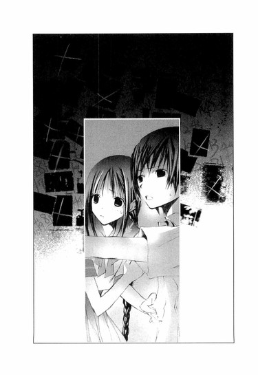
「わ、わたしが幽霊が苦手だってわかったら、心葉くん、わざと怖い話を書くでしょう？だから幽霊なんて平気ってフリをしてたんだもん」
「なんですかそれ。ぼくはそんなことしませんよ」
呆れつつも、いや、遠子先輩の言うとおり、ホラーだの怪談だの、どんどん書いていたかもなぁと思い直す。
文芸部に入ったばかりの頃は、わざとおかしな文章を書いては、遠子先輩に「まず～～～～い」とべそをかかせていた。そう考えると、警戒されても仕方ないかもしれない。
そういえばメモがはじめてポストに投函された日も、ぼくが書いた生首がぼっとんぼっとん落ちる話を食べて、辛いと悲鳴をあげて、ぽろぽろ泣いてたっけ。
苦手なら食べなきゃいいと思うんだけど、遠子先輩はぼくが書いたものを一度も残したことがない。マズイだの、酸っぱいだの、しょっぱいだの言いながら、最後の一欠片まで残さず噛みしめ、飲み込む。
きっと、ぼくが毎日、幽霊てんこ盛りのホラーな話を書いても、泣きながら食べきるんだろうな......。
遠子先輩は震えながら、しくしく泣いているようだった。
「お、男の子なんてみんな同じだもの......。流人だって子供の頃は、『遠子お姉たん、遠子お姉たん』ってわたしの後をついてきて、小ちゃくて可愛かったのよ。なのに、あんなに、にょきにょき大きくなって、あ、足に毛とか生えて、エラソーになっちゃって......、わたしが注意すると、仕返しにわざと怖い本を朗読するのよ。心葉くんも、きっとそうよ。日頃先輩にお世話になっている恩を忘れて、生首だの、人魂だの崇りだの呪いだの、『八つ墓村』だの『獄門島』だのを、悪魔のように書きまくるんだわ」
「......日頃の恩って......お世話をしているのは、ぼくのほうだと思うんですけど」
そこだけははっきり主張すると、遠子先輩はひっくとしゃくりあげ、鼻水をすすった。
「ほら、そういうこと言う」
だって、本当のことだし。
「......わ、わたしが、どうやって文芸部を、幽霊の魔の手から守ればいいのか頭を悩ませているときに、勝手に流人と仲良くなって、わたしに内緒で、こそこそ蛍ちゃんのこと調べてるし......わたしのこと、ひっく......のけ者にして......ぐす......」
「......のけ者にしたわけじゃありませんよ」
顔を伏せ、つむじを見せて泣いている遠子先輩が、年下の女の子のように思えて、甘酸っぱい気持ちが込み上げてくる。それは、手のひらに小さなひよこを抱いているような、少し不安な、けれど心がぬくもってゆくような、不思議な気持ちだった。
どうして、こんなにいつも、この人にはかなわないと思ってしまうのだろう......。
ぼくは腰を浮かせてしゃがみ込んだまま、横から遠子先輩の顔をのぞきこみ、静かに言った。
「遠子先輩を危ない目に遭わせたくなかったんです。だって、遠子先輩はすぐ暴走して、無茶なことするから......。心配だったんですよ。流人くんも、ぼくと同じ気持ちだったと思います。遠子先輩は、女の子だから」
言葉にしてはじめて、そうだったんだなぁと気づく。ぼくは、遠子先輩に危ないことをしてほしくなかったんだなぁ。
「わたし、暴走なんか......」
「したことないとは、言わせません」
冷静に突っ込むと、声をつまらせ、またしくしく泣く。ぼくは弱ってしまった。
「......ハンカチ、貸しましょうか」
「も、持ってるわ」
「そうですか......」
「でも、貸して」
顔を伏せたまま言うので、鞄からお母さんがアイロンをかけてくれた水色のハンカチを出し、遠子先輩に差し出した。
「はい、顔を拭いてください」
遠子先輩が白い手でハンカチを受け取り、顔に押し当てる。
「ひっく......泣かせたのは、心葉くんよ」
「すみません」
「本当に反省してる？」
「......はい」
「ぐす......」
「あ、鼻はかまないでくださいね」
「うぅ......どうして冷静なの」
そんな言葉を交わすうちに、遠子先輩もようやく泣きやみ、ハンカチの上からおずおずと顔を出した。
「泣いちゃってごめんなさい。ハンカチ、洗って返すわね」
丁寧に畳んでポケットに入れ、照れくさそうに立ち上がる。
「さて、じゃあ、ここから出る方法を考えなきゃ」
笑顔で言った直後、壁の写真を見て、またきゃーっと悲鳴を上げてしゃがみ込んでしまった。
「わ、忘れてたわ。いやぁ。幽霊がいっぱい」
「よく見てください。幽霊じゃなくて、ただの写真です」
「え......」
遠子先輩がこわごわと首を壁のほうへ向ける。ぼくは携帯で壁を照らした。
息をのみ目を見開いたあと、遠子先輩は立ち上がり、壁のほうへ歩いていった。
壁に書いてある数字を指でなぞり、顔に赤い×印がついた写真を、知的な眼差しで見つめる。
「この写真の女の子......蛍ちゃんにとてもよく似ているけど、蛍ちゃんじゃないわ」
「そうですね。表情とか髪の色合いとか、微妙に違いますね。それに、服装も古めかしいし......。このセーラー服、中庭で雨宮さんが着ていたデザインと同じですよ」
校門の前でセーラー服を着て、華やかな笑みを浮かべている少女。
白いワンピースを着て、手でホースを持ち、庭で水をまいている少女。
あでやかな振り袖を身につけ、革張りのソファーに腰かけている少女。
雨宮さんによく似た、雨宮さんとは別の女の子──。
「この子が、九條夏夜乃──なんだわ」
おそらくそうなのだろう。写真の中の夏夜乃は、ぼくが化学室で会った夏夜乃と、同じ表情をしている。これが本当の夏夜乃なのだと思うと、妙な気分だった。
けど何故、壁一面に夏夜乃の写真が貼りつけられているのか。しかも、顔に、真っ赤なペンで大きく×印が書かれている。
「この数字、メモに書いてあった字と同じですね」
赤いサインペンで書かれた字を見て、つぶやく。
「夏夜乃さんと蒼くんは、数字の暗号でやりとりをしていたそうだから、これは二人が書いた物なのかもしれないわ。ほら、筆跡が違う字がふたつあるもの。それに、夏夜乃さんのお父さんが亡くなったあと、蒼くんは、夏夜乃さんの後見人の叔父さんに地下室に追いやられて、そこで暮らしていたのよ。もしかしたらこの部屋は──」
遠子先輩が部屋の中を見渡す。
ぼくも一緒に視線を走らせた。
打ちっ放しの灰色の壁に囲まれた部屋に、窓はない。家具は学習机がひとつ、テーブルがひとつ、本棚がひとつ。ベッドがひとつ。クローゼットがひとつ。出入り口とは別にドアがひとつあって、開けてみるとトイレと洗面所だった。テーブルの上に燭台があり、使いかけの蝋燭が三本刺さっている。
「ここは、蒼くんの部屋だったのかしら？」
「けど、夏夜乃さんが亡くなったとき、お屋敷は人に貸すために全面的に改装したって聞いてますよ。としたら、当時の地下室が、壁の文字までそっくりそのまま残っているのはおかしいです」
「そうね......。なら、この部屋も、この壁の文字も、黒崎さんと蛍ちゃんがこのお屋敷に引っ越してきてから、今の状態になったんだわ。字を書いたのは、夏夜乃さんと蒼くんではなくて、蛍ちゃんと......」
言いかけて、遠子先輩が口ごもる。
この家に住んでいたのは、雨宮さんとその後見人の黒崎さんの二人だけだ。壁に書かれた筆跡は二つ。そこから導かれる答えはひとつだ。
「この字は、蛍ちゃんと、黒崎さんが......書いたんだわ」
「何故、黒崎さんはそんなことをしたんでしょう？」
遠子先輩の表情が曇る。
「......わからないわ。どうして黒崎さんが蛍ちゃんの彼氏のあとをつけ回して、怪我をさせたのかも......そこまでして蛍ちゃんを監視し、束縛しなければならないのかも......」
「もしかしたら、雨宮さんが結婚するのは黒崎さんなんじゃないですか？今は後見人として雨宮さんの財産を管理できる立場ですけど、雨宮さんが成人すれば役目は終わりです。だから雨宮さんと結婚して、財産を完全に自分のものにしようとしたのかもしれません。そのために、雨宮さんが結婚できる年齢になるまで、他の男を近づけないようにしていたんじゃ」
そう考えると、辻褄があうような気がした。
遠子先輩の顔つきが、ますます暗くなる。
「もしそうなら......流人は......とっても危ないわ」
つぶやく声に流人くんを案じている気持ちがにじむ。遠子先輩は嫌な想像を振り払うように首を横に振り、自分に言い聞かせるように言った。
「ううん。流人はそう簡単にやられちゃったりしないわ。あの子は昔から、人にさんざん心配をかけて、けろっとした顔で『ただいま』って帰ってくるような人騒がせな子なんだもの。呆れるくらい悪運が強いのよ」
それって遠子先輩に似ている......。
「わたしたちはまず、ここを抜け出すことを考えなきゃ。心葉くん、電話で助けを呼べないの？」
「ダメです。地下で電波が届きません」
「なら、脱出に使えそうなものを探しましょう。ハンマーとか、電動ノコギリとか、プラスチック爆弾とか──」
遠子先輩が、机の引き出しを開けてゆく。
「そんな物騒なモン、子供部屋にはないと思いますケド」
「ここが一般的な子供部屋に見える？ それに、〝ある〟と思って探せば、欲しいモノが見つかるものよ」
「そうでしょうか」
「ほら、心葉くんも突っ立ってないで探して」
すっかりいつものペースで命じる遠子先輩の、細い背中や、せわしなく揺れる長い三つ編みを見て、ああ、この人はこういう人だよなぁ......と溜め息をつき、ぼくも一緒に部屋の中を探りはじめる。
ライターがあったので、それで燭台に火を灯すと、少しだけ明るくなった。といっても、壁に貼りつけてある写真の表面に炎が反射して、薄闇の中にぼうっと浮かび上がって不気味だったんだけど......。
遠子先輩は本棚の前に立ち、感嘆の声をあげた。
「まぁ......マクドナルドの童話全集だわ。『北風のうしろの国』『王女とゴブリン』『王女とカーディー少年』『妖精のすきなお酒』『ふんわり王女』『金の鍵』──まぁまぁまぁ。この全集、絶版になっているのよ。あぁ、こんなところで出会えるなんて。保存状態もいいわ。美味しそ～～～～」
どんなときでも、食べ物への愛情は健在なのか、ずらりと並んだ古い本に頬ずりしそうな勢いで、語りはじめる。
「ジョージ＝マクドナルドは、十九世紀のスコットランドに生まれたファンタジー作家で、『ナルニア国物語』のＣ＝Ｓ＝ルイスや、『指輪物語』のトールキンに多大な影響を与え、ルイス＝キャロルの『不思議の国のアリス』を見出し、その出版を手伝った人でもあるのよ！特にＣ＝Ｓ＝ルイスは著作の中に、マクドナルド本人を登場させるほどの大ファンで、自叙伝の中でも、マクドナルドの『ファンタスティス』を、絶賛しているわ。マクドナルドの物語には、生と死、光と影が、同居しているの。ページをめくった瞬間、魔法のような言葉の連なりが、荘厳な音楽のように響いて、わたしたちの周りの風景を、夜明け前の薄桃色や夕暮れ時のセピア色に、染め変えてしまうのよ！
マクドナルドの本は、まるで妖精が焼いたパンのようよ。舌触りがすべらかで、いい香りがして、もっちりと噛み応えがあって、普段あたりまえに食べているもののはずなのに、なにかがまったく違っていて、舌に残る味わいはとても深いの！」
遠子先輩の蘊蓄を聞きながら、ぼくは図書室で雨宮さんが読んでいた本のことを思い返していた。
裏表紙に数字がびっしり書かれていたあの本も、マクドナルドの著作だった。
そのとき遠子先輩が、不思議そうにつぶやいた。
「あら？ 一冊足りないわ。『昼の少年と夜の少女』がないわ......それさえあれば、完璧な全集なのに。あ......でも、こっちに『かるいお姫さま』があるわ。これは、全集の『ふんわり王女』とは別の出版社から出された文庫版で、『昼の少年と夜の少女』も併収されていたはず......うーん、でも惜しいわ。あと一冊なのに」
「その本なら、雨宮さんが持ってますよ」
ぼくの言葉に、遠子先輩が振り返る。
「えっ？ 蛍ちゃんが？ 心葉くん、どうして知ってるの？」
ぼくは、図書室で雨宮さんに会ったときのことを話した。雨宮さんが哀しそうな表情で、自分も本の中の女の子のように昼の世界へ行けたらよかったのにと言っていたことも......。それから、化学室で夏夜乃に会って言葉を交わしたこと......。
「じゃあ、女の子をナンパしてたんじゃなかったのね」
「それは琴吹さんの誤解です」
「そうだったの......疑ってごめんなさい」遠子先輩がしゅんとする。「でも、蛍ちゃんが、そんなことを言っていたなんて......。それに、夏夜乃さんの言葉も気になるわ......」
つぶやいて、ますます眉を下げる。遠子先輩はマクドナルドの全集を一冊ずつ抜き出して、ページをめくり、文字が書いてないか調べはじめた。
「うーん......これにもないし、こっちも特に変わったところはないわ......あ、あ、やだ......目が文章に引き寄せられちゃう。あ......ここの訳、わたしが読んだのと違う......あぁ、ここ、美味しそう......」
「食わないでくださいよ」
「うぅ、耐えるわ」
本当に、大丈夫かなぁ......？ いまいち不安に思いながら、ぼくもクローゼットを探りはじめる。
「そういえば、九條家の家政婦さんのお店を教えてもらう代償って、なんだったんですか？」
気になっていたことを尋ねると、遠子先輩はあからさまにうろたえている声で言った。
「なななななんのこと？」
「麻貴先輩から情報をもらったんでしょう？もちろん、タダじゃないですよね？」
「そ、それは、今は関係ないと思うわ......」
「脱いだんですか？」
ちらりと後ろを見て問いかけると、凄い勢いで振り向いた。
「やだもぉ、脱ぐわけないでしょう！ ただ......ウエイトレスさんの格好をして、猫耳のカチューシャをつけて、トレイを持って、『ご注文はお決まりですか、ご主人様ニャン？』って、言わされただけだもんっ」
ぽかーんとするぼくを見て、遠子先輩の頬や耳が、みるみる赤く染まってゆく。
「......ニャン？ 言ったんですか？ 猫耳つけて？」
「お、思い出させないでっ」
遠子先輩がくるりと背中を向けて、本をばらばらめくりはじめる。
「うぅ、人生ベスト３に入る屈辱だわ。もう、二度と、二度と、麻貴に頼み事はしないんだから」
肩と三つ編みがふるふる震えているのを見て、よほど悔しかったのだろうと察した。同時に、麻貴先輩は愉快でたまらなかっただろうな......と。
クローゼットに下げてある古風なワンピースを、一枚ずつ横に払いながら、ぼくは溜め息をついた。
「まったく......そんな条件をのんだ遠子先輩にも呆れますけど、麻貴先輩も悪ノリしすぎです。ぼくが、遠子先輩はどこへ行ったのか訊いたときも、『エレン＝ディーンに会いに行ったのよ』なんて意味不明なことを、にやにやしながら言うし、雨宮さんとの三角関係の噂といい、あの人、わけがわかんないです......」
遠子先輩が振り返る気配がした。
「エレン＝ディーン？ 麻貴が、心葉くんにそう言ったの？」
首を後ろに向けると、なにかひっかかっているような複雑な顔をしている。
「はい」
答えると、遠子先輩は視線を下に向け、ぱらぱらと本をめくった。目は文字を追っておらず、別のことを考えているようだった。
ぼくはクローゼットから大きな平べったい鞄を出し、硬いチャックに手こずりながら訊いた。
「そもそもエレン＝ディーンって、なんですか？若林さんの本名じゃないですよね？」
チャックは、なかなか開かない。
「いいえ、違うわ。エレン＝ディーンは......」
「わっ！」
いきなりチャックが下がり、鞄が左右に大きく開き、中から絵の具や筆、それにスケッチブックがこぼれ落ちてきた。どうやら画材用の鞄だったらしい。
「きゃっ、大丈夫？」
遠子先輩も、ぼくの声につられて肩を跳ね上げる。ぼくはあたふたと、絵の具をかき集め、スケッチブックを拾い上げた。
「すみません、驚かせて。これ、雨宮さんのスケッチブックみたいですね。裏に１年Ｂ組雨宮蛍って書いてあります。うちの学校のクラス表示は、アルファベットじゃなくて数字だから、中学のとき使っていたやつでしょうか」
めくってみると、花の絵が何枚も描いてあった。木炭でデッサンした上に、水性絵の具で色をつけている。雨宮さんはなかなかの腕前のようで、まるで写真を見るように精密な絵だ。
「あ......」
「どうしたの？」
遠子先輩が近づいてきて、スケッチブックをのぞきこむ。そうして、ぼくと同じように目を見張った。
そこに描かれていたのは、ぼさぼさの栗色の髪と、ガラス玉みたいな目をした、十歳くらいの男の子だった。孤独な感じのする透き通った目は、薄い茶色の上にほんのりと青を足した、神秘的な色彩で塗られている。
もう一枚、ページをめくると、先ほどの絵より少し成長した十四、五歳の少年の絵があった。さらに一枚めくる。すると、また成長して、今度は十七、八歳に見えた。
「この子......ひょっとして、蒼くん......？」
「けど、このスケッチブックが雨宮さんのもので、絵も雨宮さんが描いたとすると、雨宮さんは中学のときから、蒼くんを知っていたことになりますよ」
「うーん......そうねぇ......」
遠子先輩が目を閉じ、考えに沈む。
ぼくは次のページをめくった。
すると、二つ折りにした紙が挟んであった。広げてみると、〝あいうえお......〟の五十音が書いてある。先頭に「夏夜乃の『か』から」と記されており、かきくけこの横に、１から５まで数字が振ってある。
夏夜乃の「か」から
あ い う え お
１ ２ ３ ４ ５
か き く け こ
さ し す せ そ
～～～～～～～～～～～～～
ヒントはわたしの名前よ、と言っていた夏夜乃の言葉が頭に浮かび、心臓の鼓動が早まった。
「遠子先輩、これ、夏夜乃さんたちが使っていた暗号の対応表じゃないですか？」
「見せて」
夏夜乃の「か」から......。その言葉が意味することに遠子先輩も気づいたのだろう。
引き出しから赤いサインペンを持ってきて、ひらがなの横に猛然と数字を書きはじめた。
１ ２ ３ ４ ５
か き く け こ
６ ７ ８ ９ 10
さ し す せ そ
11 12 13 14 15
た ち つ て と
～～～～～～～～～～～～～
〝か〟が１、〝き〟が２、〝く〟が３......。だから〝さ〟は６、〝し〟は７──最初に戻って、〝あ〟は42、〝い〟は43。
最後に、少し離れたところに書いてある〝゛（濁点）〟は47、〝゜（半濁点）〟は48──。
全部書き終えると、それを持って壁の前まで歩いてゆき、一文字一文字指で辿りながらつぶやいた。
「──〝42（あ） 46（お） 43（い）１（か）31（や）20（の）〟──〝１（か）45（え）13（っ）14（て）２（き）11（た）33（よ）１（か）31（や）20（の）〟──〝42（あ）46（お）43（い）40（を）45（え）43（い）45（え）41（ん）17（に）42（あ）43（い）７（し）14（て）43（い）36（る）〟──〝47８（ず）13（っ）15（と）43（い）13（っ）７（し）33（ょ）〟──」
〝帰ってきたよ、夏夜乃──〟
頭から冷水を浴びせられたかのように、全身が震えた。
この文字を書いたのが、黒崎さんと雨宮さんであること──。そして、壁一面に貼られた夏夜乃の写真と、スケッチブックの絵──。それらのことを頭の中で組み合わせたとき、突拍子もない考えが、胸に浮かんだ。
もし──もしも、亡くなったと思われていた国枝蒼が生きていたとしたら──復讐のため、名前を変えて戻ってきたのだとしたら──夏夜乃によく似た雨宮さんを、夏夜乃の身代わりにしたのだとしたら──。
遠子先輩は真っ青な顔で壁を見つめている。唇が動き、絞り出すような声がこぼれた。
「ねぇ、わたし......ずっと考えていたの。この物語は、どこかで読んだことがあるんじゃないかしらって......。わたしの知っているあの熱くて、苦しくて、凄まじい物語と、構図が似ているんじゃないかしらって......。けれど、そう断言するには、足りないものがあったわ。けど──けど、もし、彼が蒼くんなら──彼の目的が、高志さんと結婚した夏夜乃さんや、その周りの人たちへの復讐だとしたら、この物語はまるきりあの──」
灯油の匂いが鼻を突き、ぼくはハッとして入り口のほうを見た。
ぴったりと閉じられたドアの下から、とろりとした液体がにじみ出てくる。
「遠子先輩、あれ！」
「きゃっ、な、なに？ 水漏れ？ 洪水!?」
「違います。灯油ですよ」
「ええええっ」
ドアの向こうで人の気配がし、じゃばじゃばと水をまき散らすような音がする。
なにをしようとしているのか明白で、ぼくらは青ざめた。
「や、いや、やめてっ」
遠子先輩がドアをガンガン叩いて叫ぶが、まったく返事がない。代わりに向こうで火がはぜる音がし、きな臭くなった。
「あ、熱いっ！」遠子先輩がノブから手をはなす。
「危ない！ 下がってください、遠子先輩」
肩をつかんで引き離したとき、ドアの下から赤い火が、大量のミミズのように這い出てきた。
◇ ◇ ◇
彼女は灯油の入ったタンクを地下まで運び、中身を床に、壁に、まき散らした。
彼らがやってくるのを、二階の窓から見たときは、心臓が縮み、体が熱く震えた。
セーラー服を着た少女と、夏服のシャツにズボンをはいた少年。それは、古い写真で見た、彼と彼女の姿のように思えた。
あの二人が来た！
蒼と夏夜乃が──！
宇宙の深淵のような暗闇を抜け、遠い過去から、亡霊となってこの地に蘇った！
蒼と夏夜乃は、一階のドアを片端から開け、彼女を捜している。彼女を見つけ、彼女の魂をその体から引きずり出し、空っぽになった彼女の体に入り込もうとしている。
雷が鳴り響き、風が木々を折れるほど揺らし、大粒の雨が窓を激しく叩く。
どうしよう。どうすればいいだろう。隠れなければ。逃げなければ。
容赦のない力で、きりきりと引き絞られる胃、かたく組み合わされる骨張った指。
ああ、足音が遠ざかる。地下の部屋へ下りて行く。彼と彼女の秘密の部屋へ。
空が光り、雷が轟いた。その光に貫かれ天啓を受けたかのように部屋を飛び出すと、彼女は濁流のように降り注ぐ雨の中、傘も差さずに外の物置へ向かって走り、灯油のタンクを抱えた。
すべてを終わりにするのだ。彼女の運命を狂わせたあの二人を、今度こそ完全に葬り去るのだ。
雨の中、ぬかるむ泥を裸足で踏みしめながら、彼女は荒い息を吐き、タンクを抱え、地下へ向かう。
殺すのだ、殺すのだ、あの二人を殺すのだ。
灯油をまく彼女の耳に、「やめて、やめて」という声が聞こえる。許しを乞うてもダメだ。彼らは一度死んでいる。また地獄に追いかえしてなにが悪い。
灯油で濡れた床に、火のついたマッチを落とし、彼女はようやく満足げに笑った。
「さようなら、蒼。さようなら、夏夜乃」
◇ ◇ ◇
「やぁっ！」
遠子先輩がベッドから掛け布団をはがし、それで火を叩いて消そうとする。
けれど、ドアの隙間から黒い煙がどんどん入ってくる。ぼくは遠子先輩と一緒にクッションで火を叩きながら、ごほごほ咳き込んだ。遠子先輩も目に涙を浮かべて、げほげほしている。
「このままじゃヤバイですよ、遠子先輩」
「いやぁ、せっかくのマクドナルドの童話全集が燃えちゃうなんて！新訳で出ている文庫版もお手頃だけど、ハードカバーのシリーズ全12巻を、いつか食べてみたいと夢見ていたのに！目の前でご馳走が炭になっちゃうなんて、絶対いやぁぁぁ～～～っ！」
「本が炭になる心配より、自分が黒焦げになる心配をしてください！」
ああ、なんでこんなときまで、ぼくは遠子先輩に突っ込みを入れているんだ。
狭い部屋が煙でいっぱいになり、それが目に突き刺さり涙が出てくる。咳き込みすぎて喉が痛い。息ができない。
このままここで、遠子先輩と一緒に死ぬのかな。
遠子先輩はまだ火を消そうと頑張っている。必死の形相で布団を振り下ろしながら、
「ダメぇ！ 燃やしちゃダメぇ！ 焼きすぎてウェルダンになった本なんて、美味しくないんだからぁ！」
と叫んでいる。
その食い意地につくづく感心したとき、ばたばたと階段を下ってくるいくつかの足音がして、滝がなだれ落ちるような激しい水音やら、ジェット機が飛びたつような音やら、人のわめき声やら、いろんな音や声がごちゃまぜに聞こえてきた。
ドアが開き、消火器を抱えた麻貴先輩が制服姿で現れたのを見て、ぼくは動転した。
どうして麻貴先輩が!? 遠子先輩のストーカーでもしてんのか？この人？
遠子先輩も目を丸くしている。
燃える床に麻貴先輩が消火器を向ける。ブシュ────ッという音とともに液が飛び出し、白い泡が散る。
麻貴先輩の後ろで、大人の男の人が二人、てきぱきと消火活動にあたっている。一人は見覚えがある。おとといの夜、麻貴先輩が警察に迎えに来てくれたときに、リムジンを運転していたおじさんだ。
火を消し終え、もう一人の男の人に向かって「救急箱と、タオルを持ってきて」と命じると、麻貴先輩はぼくらを見て、肉感的な唇を吊り上げ、あでやかに笑ってみせた。
「間一髪、だったわね。さて、お礼はなにで支払ってもらおうかしら？」
七章 ◎ 飢え渇く魂の物語
夕暮れ前。音楽ホールの中にあるアトリエで、ぼくらはようやく人心地ついた。
ぼくらを助けてくれた高見沢さんが、薄い白磁のカップに注いだ紅茶を運んできてくれる。仕立てのよさそうなスーツを着て髪を整えた長身の彼は、麻貴先輩のお祖父さんの部下らしい。一階の部屋から救急箱を持ってきて、遠子先輩の火傷の手当をしてくれたのも彼だった。
高見沢さんが綺麗なお辞儀をして出てゆくと、部屋の中は、ぼくと遠子先輩と、麻貴先輩の三人きりになった。
遠子先輩は、雨宮さんの家から持ってきたスケッチブックを胸に抱え、パイプ椅子に座り、唇を引き結んだ固い表情でうつむいている。右手には包帯が巻いてある。
移動中の車の中で、遠子先輩はずっとこんな風に顔を強ばらせており、鞄から生徒手帳を出し、それをめくって眺め、ますます眉根を寄せ、黙り込んでいた。
逆に麻貴先輩は、機嫌がよかった。
「彼の淹れた紅茶は極上よ。ぜひ味わってちょうだい。どうしたの？元気がないのね。まぁ、クリスマスの七面鳥みたいに蒸し焼きにされそうになったんだから、ショックでしょうけど」
遠子先輩がうつむいたままつぶやく。
「ねぇ......どうして、麻貴は、蛍ちゃんの家にいたの？」
麻貴先輩は紅茶のカップを手に持ったまま、窓辺にもたれるようにして立ち、薄く微笑んだ。
「車の中で説明したでしょう？ おたくらが、雨宮蛍の件でばたばたしているみたいだったんで、ちょっと気になってね。あたしのほうでも調べてみることにしたのよ。雨宮さんの家へ行ってみたら、窓ガラスは割れてるし、部屋の中はめちゃくちゃだし、地下室から煙がもくもくあがっているし、驚いたわ。でもまぁ、間に合ってよかったわ」
「......本当にそれだけ？」
遠子先輩がスケッチブックをテーブルの上に置き、すっと立ち上がる。
「蛍ちゃんのクラスの子が、あなたの彼氏を、蛍ちゃんがとったって言ってたわ。あなたと蛍ちゃんが三角関係だったなんて、わたし、ちっとも知らなかったわ」
「そりゃそうよ。あたしだって、初耳だもの」麻貴先輩が、おかしそうな顔で言い捨てる。「どうして、そんなデマが流れたのかしらね」
「麻貴、あなたは、蛍ちゃんとは中学の時、部活が同じだっただけで、特に親しくはないって言っていたわね。けど、本当は、蛍ちゃんのことも、夏夜乃さんのことも、黒崎さんが誰かということも──あなたは全部知っていたんじゃない？」
遠子先輩と麻貴先輩の視線が、からみあう。
知的に澄んだ遠子先輩の黒い瞳が、尊大にきらめく麻貴先輩の茶色の瞳をまっすぐに射る。
ぼくは息をのんで、二人の対決を見つめた。
「意味がわからないわ、遠子」
麻貴先輩が、口元に笑みを刻んだまま答える。したたかで尊大な表情は、昨日の放課後、ぼくをあしらってみせたときと同じだ。この人から真実を引き出すのは容易なことではない。遠子先輩に勝算はあるのか？
しばらくの間、麻貴先輩をじっと見つめたあと、ふいに遠子先輩は歩き出した。
こつこつと靴音を響かせて、長い三つ編みを揺らして、本棚の前まで進む。そこで立ち止まり、細く長い指で一冊の本を抜き出すと、凜とした声でタイトルを告げた。
「『嵐が丘』──イギリスの女流作家エミリー＝ブロンテが、ヴィクトリア王朝まっただ中の十九世紀に出版した問題作よ。原題は『Wuthering Heights（ワザリングハイツ）』──Wuthering とは、雨風を遮るものもない高台に吹きすさぶ嵐の激しさや、その荒れ狂う様子を表した言葉よ」
ぼくの胸に戸惑いが浮かぶ。その本と、麻貴先輩と、どういう関連があるんだ？
遠子先輩は本を手にしたまま、川の水が堰を切って流れ出すように、語りはじめた。
「一八〇一年──都会の暮らしに疲れた人間嫌いの紳士ロックウッドが、風が吹きすさぶ丘に立つ堅牢な屋敷を訪れるところから、物語ははじまるわ。ロックウッドを聞き手とし、召使いのネリーが、嵐が丘にまつわる二人の男女と、その周囲の人々の、息づまるような愛憎の歴史を語ってゆくの。
一七七一年夏──収穫期のはじめの頃、屋敷の主人であるアーンショー氏が、仕事でリバプールへ行った帰りに、一人の男の子を拾ってくるわ。ぼろぼろの服を着た汚らしい男の子は、アーンショー氏の亡くなった長男の名前をとってヒースクリフと名付けられて、嵐が丘の屋敷で暮らすことになるの。
そこには、アーンショー氏の跡取り息子のヒンドリーと、その妹のキャサリンがいたわ。ヒンドリーは、父親の溺愛の対象となったヒースクリフに嫉妬し、彼に対して暗く屈折した感情を抱くようになるけれど、キャサリンのほうはヒースクリフとすぐに仲良くなったわ。二人は毎日のように屋敷を取り巻く荒野へ出かけてゆき、楽しく遊んだわ。まるで、ひとつの魂を二人で共有しているかのように、ほんの少しも離れていることができず、激しくお互いを求め合っていたのよ。
けれど、六年後にアーンショー氏が亡くなると、ヒンドリーはヒースクリフからすべてを取り上げ、彼を徹底的に貶め、卑しめ、虐待し、奴隷のように扱うようになった。
キャサリンとヒースクリフの間には、お嬢様と使用人という大きな身分の隔たりができてしまったのよ。
そんな中、キャサリンは、嵐が丘のふもとにあるスラッシュクロス屋敷に住む、リントン家の嫡男エドガーと知り合うの。良家のお坊ちゃまで、優しく教養のあるエドガーは、キャサリンの美しさに夢中になり、キャサリンもエドガーの求愛を受け入れ、結婚する決意をするわ。それを知ったヒースクリフは、絶望のあまり嵐が丘から失踪してしまうのよ」
まるで荒野を吹き抜けてゆく嵐の唸りのような遠子先輩の言葉を聞きながら、ぼくは頭の中に、夏夜乃と蒼のことを思い浮かべていた。
旅先で拾われてきた少年、風が吹きすさぶ高台の屋敷、そこに住む勝ち気な少女──少年と少女は魂と魂を結びあい、寄り添って過ごすようになるけれど、庇護者であった少女の父親が亡くなり、状況は一転する。
少年は使用人となり、お嬢様である少女とは気楽に話すこともできない身に落とされてしまう。そうして美しく成長した少女は少年を裏切り、金持ちの青年の妻になるのだ。
遠子先輩が語るヒースクリフとキャサリンの物語は、まるで蒼と夏夜乃の物語のようだ──！
「三年後──一七八三年の秋、ヒースクリフは財を蓄え、身なりを整え、嵐が丘に戻ってくるわ。表面は穏やかな紳士として振る舞っていたけれど、彼は復讐を開始し、まずキャサリンの兄ヒンドリーを罠にはめ、嵐が丘の屋敷も財産も、すべて奪ってしまうのよ。そうして、エドガーの妹で、キャサリンの義理の妹にあたるイザベラを誘惑し、彼女と駆け落ちしてしまうの。
キャサリンはしだいに精神を狂わせてゆき、絶食をしたあげく病に倒れ、女の子を産んで死んでゆくわ。魂の片割れであったキャサリンを失ったヒースクリフは、さらに激しい孤独と絶望の淵に投げ込まれ、復讐の鬼と化すのよ。
ヒンドリーの死後、嵐が丘の屋敷を乗っ取ったヒースクリフは、その息子のヘアトンに教育を一切受けさせず、召使いとして扱うの。そうして、イザベラが生んだ自分の息子リントンと、キャサリンが生んだ娘──母親と同じ名前をつけられた二代目キャサリンを結婚させようと企むのよ。
ヒースクリフの奸計にはまり、嵐が丘におびき寄せられた娘のキャサリンは、屋敷に監禁され、リントンと無理矢理結婚させられるわ。その間に、父親のエドガーは病で息を引き取り、財産はキャサリンの夫であるリントンが相続するけれど、病弱なリントンはすぐに亡くなり、父親のヒースクリフが、リントン家とアーンショー家、ふたつの屋敷と財産をすべて手に入れ、娘のキャサリンは未亡人として、嵐が丘の屋敷でヒースクリフと暮らすことになるのよ」
複雑に絡みあい、縺れあい、傷つけあい、奪いあう、人々の物語──そんな凄まじい物語が、遠子先輩の口を通し、現実にあった出来事のような生々しさと、胸に突き刺さるような痛みを持って語られる。そこに、ぼくの知っている人たちの姿が、パズルのピースをはめこむように、次々と重なってゆく。
雨宮さんの叔母さんと結婚した黒崎さん。
彼は、雨宮さんのお父さんと叔母さんが亡くなったあと、雨宮さんの後見人になり、会社の社長に就任した。そうして、雨宮さんの生まれ育った家を処分し、夏夜乃の実家である高台の屋敷に引っ越し、そこで雨宮さんと暮らしはじめ、雨宮さんに近づく人たちを、あらゆる手段を使って排除していった──。
何故、黒崎さんは、そんなことをしたのか？
彼の目的はなんだったのか？
「ねぇ、この物語は、蛍ちゃんを取り巻く状況にとてもよく似ているわ。はじめは、わたしも気づかなかった。蛍ちゃんの物語を『嵐が丘』と断定するには、ヒースクリフの存在が欠けている。あの途方もないエネルギーを持った、太古の悪霊のような──嵐が丘に吹きすさぶ暴風そのもののような、強烈な存在感を放つ復讐者が──。
蛍ちゃんはただ、後見人の叔父さんと二人で暮らしている、拒食症で、心になにか悩みを抱えている女の子にすぎなかった。家政婦の若林さんと会って、蒼くんの存在を知ったときも、まだ確信が持てなかったわ。蒼くんは早い時期に退場し、亡くなってしまったと思っていたから。
けれど、もし、蒼くんが生きていたとしたら──名前を変え、立場を変え、復讐者として戻ってきたのなら──」
遠子先輩が一旦、息を吐き、またしゃべり出す。
「心葉くんが、黒崎さんの会社の人に聞いた話によると、黒崎さんは目が弱くて、いつも薄い色のサングラスをかけていて、髪を茶色に染めているんですって。社長になる前は黒髪だったそうだけど、社長の就任と同時に髪を染めて登場して、役員の人たちにしかめっ面をさせたって。けど、黒崎さんの髪はもともと黒髪だったのかしら？もしかしたら茶色が本来の髪で、黒く染めていたものを元に戻したのかもしれない。目も、サングラスをかけているのは、色を見られたくなかったのかも」
遠子先輩は探偵ではない。本を読み、空想するだけの、文学少女だ。
だからこれは〝推理〟ではなく、〝想像〟なのだ。
けれど、ぼくは遠子先輩の言葉や声に、胸をわしづかみされ、心ごと引き寄せられていった。
「蒼くんはハーフで、目の色も髪の色も薄かったと聞いているわ。彼の名前も、見る角度によって茶色の瞳が、うっすら青を帯びて見えたから、夏夜乃さんが『あおい』とつけたそうよ。
もし黒崎さんが蒼くんだとしたら、蒼くんを知っている人たちに警戒されないように髪を染め、サングラスをかけて顔の印象を変えようとしたのかもしれないわ。
そして、もし、わたしの想像が当たっていて、黒崎さんが蒼くんなのだとしたら、蛍ちゃんはキャサリン＝アーンショーの娘、キャサリン＝リントンになり、黒崎さんはヒースクリフになり、『嵐が丘』の構図が完成するのよ！」
澄んだ黒い瞳が、麻貴先輩を正面から見据える。
静まり返ったアトリエに響く声で、遠子先輩が問いかける。
「わたしが気づかなかったこの構図を、麻貴、あなたは早いうちから知っていたわ。わたしが、家政婦の若林さんに会いに行ったとき、あなたは心葉くんにこう言ったそうね？『遠子は、エレン＝ディーンに会いに行ったのよ』って──。エレン＝ディーンは『嵐が丘』の中で、ネリーと呼ばれている、アーンショー家とリントン家──二つの家に仕えた家政婦よ。
そして、この物語のすべてを見通し、都会から来たロックウッドに、ヒースクリフとキャサリンの複雑な愛憎劇を紐解いてみせる〝語り手〟だわ！
心葉くんから、あなたが若林さんをエレン＝ディーンと呼んでいたと聞いたとき、いろんなことがわかったような気がしたの。中庭のポストに、焦げたメモだの、血糊つきのメモだのを放り込んだのは、あなたね？麻貴？」
遠子先輩は手にしたハードカバーの本を開き、速読するようなスピードで、ページをばらばらとめくりはじめた。
「メモに書かれていた言葉は、全部『嵐が丘』に出てくる言葉だわ。〝悪魔にとりつかれた豚の群れ〟──これは、『嵐が丘』を訪問したロックウッドが、そこで飼われている犬に飛びかかられて、ヒースクリフに向かって叫ぶ台詞よ。『悪魔にとりつかれた豚の群れだって、おたくの犬どもほど質が悪くないでしょうよ』って。これは聖書に書かれた伝承をふまえた言葉で、『嵐が丘』には、他にも聖書をなぞった言葉や文章がよく出てくるわ。
〝肉切り包丁を飲ませてやる〟──これは、酔っぱらって帰ってきたヒンドリーが、ネリーに向かって吐いた台詞ね。〝あれは不吉な鳥〟は、ヒースクリフに恋してしまったイザベラにネリーが忠告するときに言う台詞。〝壁を血で塗りかえる〟は、ヒンドリーに虐待を受けているヒースクリフがネリーに語る言葉を、──〝巣の中の小さな骸骨〟は、狂気に陥ったキャサリンが、枕から羽毛を引っ張り出して、ベッドに並べながら話す言葉をもとに書かれた言葉よ。
そして、〝帰ってきたのよ〟──これは、嵐の夜に小さな手で部屋の壁を叩き、中に入れてと頼む、亡くなったキャサリンの言葉だわ──！そのあとヒースクリフは窓を開け、『はいっておいで！はいっておいで！』と、雪と風が渦巻く真っ暗な闇に向かって絶叫するのよ！」
遠子先輩が、本をぱたんと閉じる。
麻貴先輩は口元に微笑みを浮かべている。それはまるで遠子先輩に糾弾されるこの時を待っていたかのような暗い愉悦を湛えた笑みで、あきらめとともに、目の奥にどこか悪魔的な悦びの光があるように見えた。
「──文芸部で起こった幽霊騒動も、あなたなら楽に仕込みができたはずだわ。最初に蛍ちゃんが呪われていると、わたしたちに吹き込んだのも麻貴──あなただったわね？若林さんのお店をわたしに教えたのも、わたしに夏夜乃さんのことを調べさせておけば、蛍ちゃんのほうまで気が回らないと考えたからではないの？
それに、わたしたちを地下室から助けてくれたとき、あなたは高見沢さんに『救急箱とタオルを持ってきて』と言ったわね？『探してきて』じゃなくて、『持ってきて』って──。はじめて来た家で、そんな頼み方をするのはおかしいと思わない？てっきり、車にでも用意しているのかしらと思ったら、高見沢さんは、すぐに一階のお部屋から救急箱とタオルを持ってきて、わたしの手当をしてくれたわ。まるで、お屋敷のどこになにがあるのか、よく知っているみたいだった。
蛍ちゃんのクラスの子が、スーツを着た背の高い男の人が、蛍ちゃんを車で迎えに来るって言ってたわ。その人の車に、麻貴──あなたが乗っているのを見た人がいるって。
もしかしたら、それは、高見沢さんじゃないの？あなたと蛍ちゃんが恋敵だなんて、とんでもない噂が飛び出したのは、彼を通して、あなたが蛍ちゃんと交流を持っていたからじゃないの？あの高台のお屋敷にも、あなたは行ったことがあるんじゃないの？」
遠子先輩が、畳みかけるように言葉を続ける。
「ねぇ、『嵐が丘』の中で、ヒースクリフやキャサリンを巧みに操り、悲劇の物語を織り上げたのは、ネリーだという説もあるのよ。すべてはネリーの企みだったって。そんな視点で『嵐が丘』を読むと、あらゆる物事が、がらりと形を変えてしまう。イザベラに、『ヒースクリフは人間なのかしら？』『人間でないとすれば、悪魔かしら？』と言わしめたヒースクリフでさえ、ネリーに操られる人形にすぎなくなる。ネリーはすべてを見つめ、すべてを知り、ときには誰にも気づかれずに物語の流れを変えることさえした。蛍ちゃんのエレン＝ディーンは、あなただったんじゃないの？麻貴？」
「知らない──って言ったら？」
麻貴先輩が、微笑みを浮かべたまま遠子先輩を見つめる。
雨も風もすっかりやみ、夕暮れの光に照らされたアトリエの中は、宗教的な静けさに満ちていた。窓際に立つ麻貴先輩の髪が、外から差し込む清浄な光を受けて、金色にきらめいている。
遠子先輩は、少しだけ眉を下げた。
「ダメよ。信じないわ。──麻貴、あなたは〝文学少女〟のわたしに、ヒントを出しすぎたわ」
そうしてまた凜とした表情になり、本を棚に戻すと、シーツをかけたキャンバスのほうへ近づいてゆき、片手でシーツをはらった。
長方形のキャンバスに描かれていたのは、ぼくが先日、目にした絵だった。
黒や青で塗りたくられた、外国のような、異世界のような、夜の丘陵──。空には厚い雲がたれ込め、激しく吹きすさぶ風が木や草をうねらせている。荒れ狂う風や叩きつけるように降る雨音が聞こえ、心が激しくかきたてられ、叫び出しそうな、重く暗く、狂おしい風景──。
絵の横に立ち、遠子先輩はきっぱり言った。
「この絵は、『嵐が丘』よ──」
麻貴先輩が観念したように、目を閉じる。
「そうよ。......てっきり遠子は『嵐が丘』は読んでないと思っていたんだけどね......。なにせ、あの話はしょっぱなから、おたくの大嫌いな幽霊が出てくるし」
険しい表情で麻貴先輩を見据えていた遠子先輩が、びくっと肩を跳ね上げ、うろたえる。
「どうして、わたしの弱点を知ってるの？」
麻貴先輩は遠子先輩のほうを見て、ウインクした。
「愛しているから」
遠子先輩が目をむき、赤くなる。それから頬をふくらませ、ちょっとすねている目をしたあと、頬を引き締め、真面目な顔で言った。
「わたしは、この世のありとあらゆる物語を愛している〝文学少女〟よ。どんな本でも、わたしは味わい、飲み込むわ」
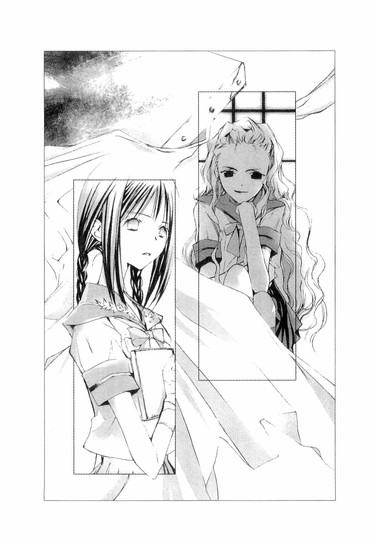
それが比喩ではなく、そのままの意味だとは、さすがに麻貴先輩も思わなかっただろう。遠子先輩の言葉を聞いて、麻貴先輩は小さく微笑んだ。いつもの尊大な笑みではなく、もっと優しい、寂しそうな笑みだった。
「仕方ないわね。油断したわ、〝文学少女〟さん」
遠子先輩が哀しそうな顔になる。眉の端を下げ、瞳を曇らせ、痛みをこらえているような表情で麻貴先輩のほうへ歩み寄り、問いかけた。
「蛍ちゃんは、なにをしようとしているの？ あなたは知っているんでしょう？麻貴。それと、流人はどこにいるの？」
麻貴先輩が答える。
「あの元気のよすぎるボーヤは、うちの祖父さんの知人の病院で、療養中よ。おなかを九箇所ばかり刺されたけど、とりあえず生きてるわ」
◇ ◇ ◇
子供の頃、母はよく彼女の手を引いて、高台に建つ屋敷へ出かけた。
風がたえず吹きすさぶその家の木々は、おかしな方向に傾き、窓を開けると、突風がカーテンを高く跳ね上げ、野生の悍馬のように部屋の中を荒々しく駆けめぐり、テーブルに置いた本のページを勢いよくめくるのだった。
「ここは風が強いから、下のお部屋へ行きましょう」
母はそう言って、彼女を地下の灰色の部屋へ連れてゆく。
「ここは、秘密のお部屋なのよ。けど、──にだけは教えてあげる」
母と二人だけの秘密。その甘くどこか背徳的な響きと、母の無邪気な微笑みは、彼女の心をざわめかせ、逃げ場のない断崖に立っているような不安な気持ちにさせた。
「お父さんにも、言っちゃダメなの？」
「ええ、ダメよ」
母が白く細い指を、彼女の唇にそっと押しあてる。
「昔、お母さんは、このお部屋で仲良しの男の子と、本を読んだり、お話をしたり、手紙を書いたりして遊んだのよ」
「同じお部屋にいるのに、お手紙をするの？」
「そうよ。その子と二人で決めた秘密の暗号でね。ほら、壁にまだ残っているわ」
母が指さす壁に、いくつもの数字が並んでいる。
魔法のようなその文字を、彼女はじっと目で追い、声に出してつぶやく。
「〝42 46 43 21 １ 31 20203020１312021424643203020〟──〝47８13154313７33〟──......どういう意味なの？」
母はくすくす笑ってみせた。
「それは、──にも教えられないわ。わたしと彼の秘密だから。お母さんは、学校にも、たくさん暗号を残してきたのよ。もしかしたら、いつかその男の子が帰ってきて、お母さんの暗号を見てくれるかもしれないから」
「その子は、どこかへ行っちゃったの？」
「ええ......お母さんが彼を怒らせてしまって、彼は遠くに行ってしまって、いつ帰ってくるかもわからないの......」
母は哀しそうにつぶやき、彼女をぎゅっと抱きしめた。肩を震わせ、泣いているようだったので、それ以上、その子のことは訊けなかった。
しばらくして顔を上げた母は、彼女の頭をなで、赤い目で笑って見せた。
「さぁ、ご本を読んであげるわ。『昼の少年と夜の少女』というお話よ。このお話は、わたしも彼も大好きだったのよ」
母を哀しませている彼は、一体誰なのか？
そんなに仲良しだったのに、彼はどこへ行ってしまったのか？
ある日、母は、絶対に内緒よとささやいて、彼女に写真を見せてくれた。
彼女より少し年上の、薄い茶色の髪と、ほんのり青みがかった茶水晶の瞳の少年──。それから、また少し成長して、中学校の制服に身を包んだ少年──。
「ねぇ、綺麗な目をしているでしょう？」
彼女は少年の目を、とても寂しそうな目だと思った。
仲間を持たない野良猫みたいな、哀しい目──。
この子はきっと、お母さんのことが好きだったのだ......。
心の中で、なにかが、揺れ動いた。
それは、水鳥の羽ばたきのようにひそかで切ない、不思議な感情だった。
彼女の父は、おだやかで優しい人だった。叔母は上品で美しい人だった。
二人とも、彼女を心から慈しみ、澄み切った水のような愛情を、たっぷり注いでくれた。
「──は、本当にお母さんによく似ている。この目なんて、そっくりじゃないか」
「そうね、口元も、鼻筋も、お母さん譲りね。きっと大人になったら、お母さんのようにすごい美人になるわよ」
「中学入学おめでとう。制服がよく似合っているね。お母さんと会ったときのことを思い出すよ」
「兄さんは、中学生の夏夜乃さんに一目惚れだったのよね」
「大丈夫だよ。いつもの発作だ。すぐに退院できる。──の花嫁姿を見るまで、お父さんは死んだりしないよ。ウエディングドレスを着たお母さんは、それは綺麗だった。お父さんは、お母さんと結婚できて空に舞い上がりそうなほど幸せだったよ。きっと──も、白いドレスとベールがよく似合うだろう」
「そのときは、叔母さんにお母さんの代役をさせてちょうだい。ね？約束よ」
「さぁ、──さん、ごはんができましたよ、たくさん召し上がってください」
「いただきまぁす」
「どうですか？ ──さん」
「はい、とっても美味しいです！」
「よかった。まだまだお代わりがありますからね」
愛情のこもった眼差しで、彼女を見つめる父と叔母。
料理上手な優しい家政婦さん。
彼女の生まれ育った屋敷は、まるで天上の楽園にいるようにあたたかで清らかで、庭には彼女が好きな、可憐な花がたくさん咲いていた。風もおだやかで、木々を彩る緑の葉も、吹き散らされることはなかった。
〝彼〟はきっと、この楽園に嵐を起こし、木々を揺らし、花を引きちぎる者となるだろう。
だから、彼女は、彼のことを、父にも、叔母にも、優しい家政婦さんにも内緒にしていた。
家では決してスケッチブックを開かなかった。
◇ ◇ ◇
まだ傷が痛むのだろう。おなかにぐるぐると包帯を巻きつけ、その上からシャツをはおり、ズボンをはいた格好でバックシートにもたれ、流人くんが荒い息を吐く。
「......っく」
ぼくと遠子先輩、流人くんと麻貴先輩の四人は、麻貴先輩の家の車で、雨宮さんのもとへ向かっていた。
外はすっかり暗くなり、窓に外灯の明かりが映っては消える。
学園のアトリエで、麻貴先輩が雨宮さんの助言者であることを認めたあと、みんなで流人くんが治療を受けている病院へ行った。
病室のベッドで、ここから出せとわめいている流人くんを見て、遠子先輩は張りつめていた気がゆるんだようだった。表情を崩し、眉を下げ、泣きそうな顔をした。
それから、目を丸くする流人くんのほうへ歩み寄り、げんこつで頭をぽかっと殴ったのだった。
「もうっ、きみって子は、どうして心配ばっかりかけるの？きみの悪運だって、そうそう毎回続くものじゃないのよっ」
「......っ、痛ぇよ、遠子姉！ てゆーか、オレ、蛍のところへ行かなきゃならねーんだ。あいつは黒崎に復讐しようとしている。あいつのこと、止めなきゃ！」
──車の中で流人くんは、これまでのことを、顔をゆがめ、時折苦しげな呻き声を漏らしながら話してくれた。
あの日、泣きじゃくる雨宮さんを抱きしめる流人くんを見届けて、ぼくが屋敷を去ったあと、流人くんは雨宮さんに自分の家へ来るよう説得したという。
──もうこの家にはいないほうがいい。蛍が安心して暮らせる場所を、オレが探してやるよ。それまでオレの家で暮らすといい。オレんち、親父はいねーし、お袋と姉貴だけで、お袋はオレに干渉しねーから。
「けど、あいつは急に怯えて、オレを突き飛ばして、それは嫌だって泣き出したんだ。それはダメなんだ、自分は勝手にこの家を出ちゃいけないんだって、がたがた震えながら言うんだ。えらく興奮して、混乱しているみたいで、幽霊が来るとか、食べちゃいけないとか、自分が幽霊なんだとか、お母さんとの約束だから秘密にしておかなきゃいけないのとか、わたしはお母さんじゃないとか──......他にも、いろんなこと、口走ってた」
流人くんが辛そうに眉根を寄せ、呻く。呼吸が苦しそうで、喘ぐように息を吸っては吐くことを繰り返す。
そんな流人くんを、遠子先輩が切なそうに見つめている。
「くっ......そのうちあいつ、黒崎に復讐をするって言い出して、自分は十六歳になったんだから、そうすることができるんだって。麻貴センパイが力を貸してくれるって──なぁ、あんたが、十六歳になれば結婚できるし、旦那を持てば黒崎は後見人ではなくなるって、蛍に吹き込んだ麻貴センパイ？」
汗にかすんだ目で、流人くんが麻貴先輩を、憎々しげに睨みつける。麻貴先輩は物憂げな表情でフロントガラスに映る自分の顔を見ている。そのまま、振り向きもせず答えた。
「そうよ。あたしが雨宮さんに言ったの。おたくがその気なら、姫倉の一族から適当な相手を見つくろってあげるわよって。あれだけ財産があれば、彼女の夫になりたいと思う男はいくらでもいるわ。もちろん黒崎には一切口も手も出させない。雨宮さんも雨宮さんの相手も、姫倉の威信にかけて守ってみせるって」
何故、麻貴先輩は雨宮さんに、そんなことを言ったのか？
そもそも麻貴先輩は何故、雨宮さんの味方になったのか？一体いつから今回の事件に関わっていたのか？
疑問に思うことが山のようにあるのに、雨宮さんの結婚話まで飛び出してきて、ぼくは、流人くんたちの言葉を聞き漏らすまいとするのに必死だった。
「ああ、蛍もそう言ってたよ。いくら黒崎でも、麻貴先輩には手出しできないって。自分が黒崎から自由になるにはそれ以外ないし、それが黒崎への復讐なんだって。
オレは、蛍の肩を揺さぶって、そんな結婚はよせって言ったんだ。おまえのことはオレが守ってやるって。けど蛍は全然きいてくれなくて、出て行こうとする蛍を強引に止めようとしたら、蛍は──床に落ちていた陶器の破片で、オレの腹を刺したんだ。
『ごめんなさい』って──謝りながら──一回だけじゃなくて──『ごめんなさい』『ごめんなさい』ってぼろぼろ泣きながら、何度も何度も刺して──オレが膝をついても、床に倒れても、なにかに取り憑かれているみたいに刺し続けた」
その様子があざやかに脳裏に浮かび、喉がしめつけられ、全身の毛が逆立った。
あの儚げで大人しそうな雨宮さんが、うるんだ目から涙をこぼしながら、握りしめた陶器の破片を振り上げ、赤く染まった流人くんの腹に、繰り返し振り下ろす様に、戦慄せずにいられなかった。
「......オレの見込み通り、あいつはアブナイ女だったわけだ。悔しいのは、あいつはオレのことを想って、オレをぐさぐさ刺しまくったわけじゃねーってことだな。くっ......あいつが本気でオレに惚れてて、それでオレのこと刺したんなら、殺されてもよかったのに」
流人くんが苦い笑みを浮かべる。とたんに遠子先輩に、耳を引っ張られた。
「バカなこと言わないの。そ、そんなにぶすぶす刺されて、命があっただけ儲けものなんだから」
「あたた、遠子姉、オレは怪我人なんだから、ちょっとは手加減してくれよ」
「もぉ、ばかばか」
遠子先輩は頬をふくらませ、涙ぐんでいる。
幸い、雨宮さんの握りしめていた破片は小さかったので、どれも致命傷にはならず、流人くんは駆けつけた麻貴先輩たちに、病院へ運ばれたのだった。
「雨宮さんが、電話をよこしたのよ。ぼんやりした声で、『流くんを殺しちゃった......どうしよう、麻貴先輩』って......。彼女は今、精神のバランスを欠いていて、とても危険な状態だわ。自分がどこにいるのか、なんという名前の誰なのかもわからなくなってしまうと言ってた。さすがに人を刺したのははじめてで、あたしも驚いたけど......。
それで、もうこんなことのないように、見張らせていたのよ。本当はあたしの目の届くマンションにでも置いておきたかったんだけど、彼女が、あの家から出たくないっていうから......。心配していたとおり、今度は、遠子と心葉くんを地下に閉じこめて、焼き殺そうとしたわ」
すでに、その可能性を想像していたのか、遠子先輩は驚かなかった。ぼくも今では、雨宮さんなら、そういうこともしてのけたかもしれないと納得していた。
ぼくが化学室で出逢った強気で奔放な九條夏夜乃は、雨宮蛍でもあったのだから──。
麻貴先輩が淡々とした口調で、事実を語る。
「お察しのとおり、黒崎保は、夏夜乃の家に住んでいた国枝蒼よ。彼は外国で死んだことになっているけれど、悪事に手を染めて得た金で、別の名前と戸籍を手に入れて日本に戻ってきたのよ」
黒崎さんの目的は、自分を捨てた夏夜乃への復讐だった。だけど夏夜乃はすでにこの世になく、娘の雨宮さんに目をつけたのだ。
憎むほどに愛した、魂の片割れともいうべき女性を失った絶望が、彼を嵐のような狂気へと突き進ませたのだろう。
そのときの彼の心情を想像し、頭の芯が熱くなった。
彼は悪魔に魂を売り、時間を巻き戻したのだ──。
かつて自分たちが過ごした屋敷を手に入れ、地下室を用意し、内装も昔のままに整え、二人の秘密の部屋を復活させ、死んだ夏夜乃さえも蘇らせた。
夏夜乃によく似た娘を身代わりにし、母親の口調や表情や仕草を教え込み、夏夜乃そのものに仕立て上げた。
あの地下の部屋で、雨宮さんは自分の意志とは無関係に、夏夜乃を演じさせられたのだ。そうしなければ食事をもらえなかった。雨宮さんは、あの場所で、九條夏夜乃として生きるしかなかったのだ。
夏夜乃の写真に赤いサインペンで×印を書いたのも、きっと雨宮さんだったのだろう。
一体、どんな気持ちで、母親の顔に、ひとつひとつ×を書き込んでいったのだろう。
どんな気持ちで、メモを書き、ポストに投函したのだろう。
〝助けて〟
〝憎い〟
〝来ないで〟
〝幽霊が〟
絶望的な状況の中で徐々に心を狂わせていった雨宮さんは、外にいるときも、九條夏夜乃に成り変わるようになった。雨宮さんにとっては、それがまるで、夏夜乃に体を乗っ取られてしまったように感じられたのだ。
いつか自分はすっかり夏夜乃になり、蛍は消えてしまうのではないか？
そんな風に恐れるようになったとしても、仕方がない。極度の空腹と苦悩のため、現実と空想の境目を見失った彼女の目には、ぼくと遠子先輩は、過去からやってきた蒼と夏夜乃の亡霊に見えたのだ。だからぼくらを地下室に閉じこめ、焼き殺そうとした。
麻貴先輩の話を聞いて、遠子先輩は自分の体を両手で抱えてぶるっと震えた。
ぼくも唇を噛み、ぎゅっと目を閉じた。
目眩がし、倒れそうだった。
なんということを、黒崎保はしたのだろう。
過去に戻って、すべてをやり直したい──かつてぼくも、そう願った。美羽を取り戻せるならなんでもする、悪魔に魂を売ってもいいと──。
けれど、そのために彼は一人の少女の未来を奪い、その人格を抹殺したのだ。
そんなことをしたって、本物の〝夏夜乃〟が戻ってくるわけじゃないのに。誰も救われないのに！
遠子先輩が、苦しそうにつぶやく。
「もうひとつ教えて、麻貴。あの地下の本棚に並んでいた本は、黒崎さんが集めたの？」
「......さぁ。けれど、九條夏夜乃の遺品だと聞いているわ」
「そう......」
そのまま睫毛をそっと伏せ、右手の人差し指を唇にあて黙り込んでしまった。それは遠子先輩が本を読むときの癖──内側の世界にすっぽり入り込んでいるときの癖だ。
流人くんが、悪の一味を見るような敵意のみなぎる眼差しで、麻貴先輩を睨む。
「オレを監禁して、蛍に会わせないようにして、一体なにを企んでるんだ？麻貴センパイ？あんたは蛍に、なにをさせようとしてるんだ？」
遠子先輩も顔を上げて、不安そうに麻貴先輩を見る。
麻貴先輩は、流人くんを傲然と見つめ返し、硬い声で言った。
「おたくを病室から出さなかったのは、彼女の邪魔をしてほしくなかったからよ。あたしは、ただ彼女に助言をしているだけ。彼女が望むまま力を貸しているだけ。彼女の意志を操ったことは、一度もないわ」
そうして、憂いに満ちた目になり、つぶやいた。
「彼女と黒崎の間には、時間があまり残されていない。黒崎はすでに決断してしまった。だから、彼女も行動しなければならなかったのよ。たとえそれが彼女にどんな結果をもたらすにしても......彼女は黒崎と決着をつけなければならないわ」
不安が胸に突き上げる。
化学室で最後に会ったとき、夏夜乃が言っていた。
──魂の半分が罪を犯して地獄に落ちるなら、残る片方も、そうあるべきじゃない？片方だけが救われて天国へ昇ってゆくなんて、間違っている。
雨宮さんは、一体なにをする気なんだ!?
二人の間に時間が残されていないというのは、どういうことなんだ。ＯＬのサエコさんは、黒崎さんが食事を吐いていると言っていた。もしかしたら、黒崎さんは、重い病気なのか？雨宮さんが病院にいたのは、そのせいなのか？まさか雨宮さんは黒崎さんと、刺し違える気なんじゃ──。
流人くんが唸る。
「......っっ！ 蛍はどこにいるんだ！ この車は、どこへ向かっているんだ！」
麻貴先輩は、厳しい眼差しで答えた。
「教会よ。彼女は、そこで来週、式をあげるの」
◇ ◇ ◇
「とってもいい知らせよ。あなたは、わたしに心からおめでとうと言わなきゃいけないわ。わたし、高志さんと結婚するのよ」
あの日彼女は、晴れやかに微笑みながら、彼の心を引き裂いた。
「ねぇ、どうして怒っているの？ 喜んでくれないの？あなたと結婚しても、わたしはプールのある白いお屋敷にも住めないし、リムジンにも乗れないし、ヨークシャーテリアを飼うこともできないでしょう？」
何故だ？ 何故、他の男の妻になる？ それを、俺に喜べと言う？何故、彼女は笑っているのだ？何故だ？何故だ？俺を捨てるのか？二人の魂は一つのもので、決して離れられないというのに、彼女は自らの手でそれを切断しようとしている。何故そんな残酷なことができるのだ？金のためか？快楽のためか？虚栄のためか？
彼女が、他の男のものになるなんて、とても耐えられない──！
嵐の夜、彼は屋敷から失踪した。あのときから、ずっと彼女を憎み続けてきた。彼女への復讐だけを願い、暗い炎が燃えさかる地獄の底から這い上がり、この地に戻ってきたのだ。
なのに、彼女は彼を置いて、逝ってしまった。彼を襲ったのは、前以上の絶望だった。
そんなとき、彼女の娘の存在を知り、その姿を見たとき──彼は、失われた時間を取り戻す方法を、知ったのだ。
彼女に生き写しの少女──。あの娘を手に入れることができれば──。
彼は、周到な計画を立て、少女の父親の会社に入り込み、蛇の狡猾さと狼の激しさで追いつめ、死に追いやった。心臓に欠陥を抱えていた父親は、サングラスをはずして口元を吊り上げ笑った彼を見て、驚愕し、目をむき胸をかきむしり、病院のベッドの上で、苦悶の表情で逝った。
その妹で彼の妻となった女も、彼が兄にしたことを知り、錯乱し、「来ないで！悪魔！来ないで！来ないで！」と叫びながら必死に後ずさり、足をすべらせ夜の海に転落した。
すべては彼の目論み通りだった。
彼は時間を巻き戻し、決して裏切ることのない〝夏夜乃〟を手に入れた。
食事を管理することによって、彼に抵抗する意志すら奪い、その魂を縛りつけ、支配下に置いたあと、〝彼女〟が彼に口答えをしたり、背いたりすることはなかった。
この日々が、今度こそ永遠に続くのだと信じていた。
なのに、何故こんなことになってしまったのか。
時間がない──。
彼のもとに届いた一通の手紙。それは彼女が彼に宛てたもので、来週結婚するので、その前に一度会いたいと書いてあった。
怒りと絶望が、高台に吹きつける嵐のように彼を揺さぶり、喉を熱くしめつける。また、オレを裏切るのか！別の男の腕に抱かれるのか！
時間がない──。
手紙を、ぐしゃりと握りしめる。
時間がない──。
胃は荒野のように渇いているのに、胸の奥から地獄のような吐き気が込み上げてくる。
時間がない──。
喉がひりつき、胃がねじきれそうだ。吐き出された血の塊が、床に赤い染みを作る。
彼は口元を手の甲で乱暴にぬぐい、よろめきながら部屋をあとにした。
彼女に会うために──。最後にもう一度、時を巻き戻すために──。
◇ ◇ ◇
二人の間に、時間があまり残されていないことを、彼女は知っていた。
時間がない──。
今を逃したら、彼に痛みを与えられない。
悪意に満ちた指が、彼女の荒れ果てた胃壁に、がりがりと爪を立てる。
全身に毒を塗りたくられたように寒気がし、頭だけが熱い。
時間がない──。
復讐するのだ、彼に。彼女の楽園を崩壊させ、彼女の父を、叔母を、殺したであろう彼に、決して抜けない楔を打ち込むのだ。
十二歳の彼女にできなかったことが、十六歳の彼女にならできる。
時間がない──。
冷たく静まり返った教会の礼拝堂で、彼女は白いウエディングドレスを身にまとい、透き通ったベールをかぶり、彼の訪れを待つ。
彼を突き刺す刃を心に隠し、細い指をからみあわせ、手の甲に爪を立てる。
十六歳になった彼女に渡された一冊の本は、ここへ来る前、灯油をかけ燃やしてしまった。化学室に書かれた数字も、消し去った。
時間がない──。
喉がひりつき、胃がねじきれそうだ。
〝42 43 ７ 14 43 36〟
違う。
〝47８ 13 15 ８ ２ 47111311〟
やめて。
〝46 １ 42 ６ 41 47142116３3911７402714〟
違う！ 違う！
〝14 41 47５ ３ 24 21 43２11３1643〟
〝39 11 ７ 21 42 46 43 2010472117431143〟
お願い、消えて！ もう消えて！
〝13 27 471430１26391643〟
〝4721134044４14304343〟
違う！ わたしは！
〝25 ７ 43 20 21 42 46 434711４〟
〝１ 45 13 14 ２ 14 42 4643〟
〝42 46 43 21 39 11 ７ 3911７21424643〟
ああ、お父さん、お父さん......。
〝42 46 43 40 45 43 4541174243８36〟
憎い、彼が憎い。
〝14 41 47５ ３ 24 21 43２11３1643〟
〝14 41 47５ ３ 24 21 43２11３1643〟
〝14 41 47５ ３ 24 21 43２11３1643〟
〝14 41 47５ ３ 24 21 43２11３1643〟
〝14 41 47５ ３ 24 21 43２11３1643〟
〝14 41 47５ ３ 24 21 43２11３1643〟
〝14 41 47５ ３ 24 21 43２11３1643〟
〝14 41 47５ ３ 24 21 43２11３1643〟
〝14 41 47５ ３ 24 21 43２11３1643〟
彼女の中で亡霊が暴れている。焼けつくように痛み出す胃を押さえ、呻き声を漏らして床にしゃがみ込み、うずくまる彼女の耳に、冷たい足音が聞こえる。
体に残るすべての力をかき集め、彼女はよろめく足で立ち上がった。
これが、これが、本当に最後だ。
もうじき、二人の世界は、完全に分断されてしまう。必死にせき止めていた時間が、破滅に向かって激流のように流れ出すのを、もう止められない。〝そのとき〟が来たら、もう、会えない、触れられない。憎むことさえ、できなくなる。だから、だから今──！
燭台の明かりに照らされたベンチシートの間の通路を、彼女の視線が嵐のように駆け抜ける。正面の扉が開き、薄いサングラスをかけ、スーツを着た男が現れる。
彼女を夜の世界に閉じこめ、光を奪った男！父と叔母のカタキ！
目の裏が熱く燃えあがり、焼けつくような痛みが全身を苛む。
あと少し、もう少しだけ、時間が欲しい。彼に復讐を果たすまで。あと少しだけ──。
「サングラスをはずして、蒼。わたし、来週この場所で、このドレスを着て結婚するのよ。あなたは、わたしに心からおめでとうと言わなきゃいけないわ」
八章 ◎ 嵐の少女
礼拝堂の扉を開けると、真っ白なウエディングドレスに身を包んだ雨宮さんが、祭壇の前に立っていた。雨宮さんの両手には包帯が巻かれ、ステンドグラスから射し込む月明かりが、細い体をスポットライトのように照らしている。
その近くに、スーツを着た背の高い男性がいるのを見て、心臓が跳ね上がった。
彼が黒崎保なのだろうか？ぼくらの位置からは、背中しか見えない。
「いい気味だわ。わたしが夫を持てば、あなたはわたしの後見人ではなくなって、すべてを失うのよ。あなたは、わたしの人生を滅茶苦茶にした。わたしから家族を奪った人殺しよ！うんと絶望して、苦しめばいいんだ！あなたなんか地獄に堕ちればいい！」
儚さのただよう小さな白い顔──その薄い唇から吐き出される嵐のような言葉に、ぼくは、強い突風をまともに正面からあびたような衝撃を受け、立ち尽くした。
流人くんとはじめて会った夜、雨宮さんは荒れ狂う嵐の中、一人ブランコの上に立ち、凄い勢いでそれを漕いでいたという。
そのときの雨宮さんも、陶器を握りしめ、流人くんを滅多刺しにした雨宮さんも、こんな顔をしていたのじゃないかと思った。
それは飢え渇き、狂気に陥った人の顔だった。肌は幽鬼のように青ざめ、目に怒りと、苦悩と、憎しみが、空を切り裂く稲妻のように光っている。
長い間押さえつけられ、封じ込められ、人知れず心の奥に荒れ狂っていた嵐を、彼女は今このとき、この世で一番憎むべき相手に、捨て身の激しさでぶつけていた。
そうして、嵐のまっただ中にいるとき、人が自然の猛威を畏れ、翻弄されるしかないように、ぼくらは雨宮蛍という一人の少女が見せた破壊的な感情に圧倒され、声を発することも、足を踏み出すこともできずにいたのだった。
それは雨宮さんを支配し続けてきた黒崎保も、例外ではない。今や主従は完全に入れ替わり、彼はぼくらに背を向けたまま身じろぎもせずに、立ち尽くしている。
「──お母さんは、あなたのことなんてこれっぽっちも好きじゃなかったのよ。あなたなんか使用人としか思ってなかったし、あなたのことをバカにしてたのよ。『愛している、蒼』『夏夜乃は永遠に蒼から離れない』──あなたが、わたしに言わせた言葉は、全部嘘！あなたの自分勝手な妄想よ！愛しているって言いながら、心の中で『死ねばいい』って呪ってたわっっっ！」
この途方もない嵐がどこまで激しくなるのか、どこまで破壊しつくそうとしているのか、ぼくには見当もつかなかった。
喉がからからに渇き、目に針を入れているように瞬きができない。
ぼくの肩にもたれている流人くんが、唇を震わせ吐息のような声で呻く。
「......よせ......もうよせ......蛍」
そうだ。雨宮さん。これ以上はダメだ。これ以上、憎しみをぶつけるのは危険だ。
頭の中でシグナルが点滅し、喉がしめつけられ、息が苦しくなる。
これ以上、彼を傷つけてはダメだ！ きみの口から出た言葉は、彼を追いつめる！時間を巻き戻し、失われた過去を取り戻そうとした彼は、それを全否定され、今度こそ、すべてを壊そうとするだろう。雨宮さん、きみは、とても危険なことをしているんだ！
きみは、本当に彼とこの場で刺し違える気か！
黒崎さんの背中が、動いた。
腕をスーツの合わせ目に差し入れ、黒く光るものを取り出すのを見て、一瞬にして全身が冷たくなった。
流人くんが雨宮さんのほうへ駆け出そうとする。その腕を麻貴先輩がつかみ、無理矢理引き戻す。
麻貴先輩、どうして!?
銃口が、真っすぐに雨宮さんに向けられる。雨宮さんはたじろがない。黒崎さんに向かって最後の、決定的な言葉を放つ。
「あなたみたいな男を誰が愛するの！お母さんは、あなたと結婚しても惨めになるだけだとわかっていたから、あなたを捨ててお父さんと結婚したのよ！わたしもお母さんと同じよ！」
違う！ それは違う！
頭の中で響きわたる否定の言葉は、一体、誰に向かって叫んだ言葉だったのか。
ぼくは麻貴先輩に腕をつかまれている流人くんの横をすり抜け、驚く二人に背を向け、雨宮さんのほうへ走り出していた。
何故、そんな大胆なことができたのか、自分でもわからない。
ぼくは物語の傍観者にすぎないし、事なかれ主義な人間だ。なのに、何故、今このとき、この物語に関わろうとしたのか──。
目の前で人が死ぬことに耐えられなかったからなのか、美羽を思い出させる夏夜乃に惹かれていたからか、図書室で言葉を交わしたとき見た雨宮さんの寂しそうな眼差しを思い出したからなのか、悪魔に魂を売ってでも時間を巻き戻そうとした彼の罪を、自分の罪のように感じたからなのか──。
ぼくを突き動かした、嵐のような衝動がなんであったのか、到底説明することはできない。
けれどきっと、そういうことがあるのだ。心より先に体が動いてしまうということが。頭の中から、恐怖とか、ためらいとか、卑屈さとか、計算とか、そんなものが一瞬にして吹き飛んでしまうことが。
そんな風にして、伝えなければならないことが──。
ぼくは体当たりするように、黒崎さんの腕にしがみついた。
「井上くん......！」
雨宮さんが驚いて叫ぶ。
ぼくは、はじめて、まともに黒崎さんの顔を見た。
彼は、雨宮さんのスケッチブックに描かれた少年の面差しを持つ背の高い痩せた男性だった。他の人たちの話から、悪魔のように禍々しい精力的な面構えを想像していたので、死人のように覇気のない虚ろな顔を見て、驚いた。
髪は薄い茶色で、目は青みを帯びたガラス玉のようだ。女性を惹きつけそうな整った顔つきをしているが、頬の肉が落ち、ひどく憔悴し、中身は百歳を過ぎた老人のようだった。すべてに疲れきり、この物語を一刻も早く終わらせようとしているように見えた。
この人が黒崎さん......？
ぼくが思っていたのと違う。随分繊細そうな......そして哀しそうな......。
本当に、この彼が、雨宮さんを夜の世界に閉じこめた悪魔なのだろうか？
彼が雨宮さんにしたことは、許されることじゃない。けれど、ぼくを見おろす絶望と苦悩に満ちた目は、怒りよりも、胸に突き刺さる哀しみを呼び起こした。
そう、ぼくだって願っていたんだ！ なにと引き替えにしてもいい、時間を戻したいって！
「......っ、雨宮さん、きみが今話したことは間違いだ。夏夜乃は、彼のことをそんな風には言っていなかった。こんなの誰も救われない。きみも、彼も、苦しむだけだ」
喘ぎながら、つぶやいたときだ。
「──そうね、蛍ちゃんは嘘をついたわ。夏夜乃さんが高志さんと、どうしても結婚しなければならなかったのは、別の理由からよ」
張りつめ、静まり返った聖堂に、オルガンの調べのように澄みきった声が響いた。
驚く麻貴先輩と流人くんを置いて、遠子先輩が細く長い三つ編みを揺らし、ぼくらのほうへ近づいてくる。
黒崎さんが振り返り、目を見張る。雨宮さんが遠子先輩が抱えているスケッチブックを見て、青ざめる。
「わたしは、この世のありとあらゆる物語の読み手にすぎない。あなたたちの物語には関わり合いのない人間よ。けれど、読み手だからこそ気づくこともあるわ。物語の主人公たちは、いつも不幸な思い込みや擦れ違いから離ればなれになり、破局への道を突き進んでゆく。本来ハッピーエンドのはずの物語が、ほんのちょっとの誤解や策謀で、悲劇に早変わりしてしまう。
『嵐が丘』のヒースクリフとキャサリンも、そうだったわ。
十九世紀のイギリスの寒村に暮らす、孤独で人嫌いな牧師の娘が、資料もほとんどなく、経験もなく、その卓越した想像力だけで、生涯にただ一冊だけ、世界に向けて送り出した小説を──この奇蹟のような飢えと、復讐と、愛憎の物語を、蛍ちゃんは読んだことがある？
この本が出版されたとき、批評家はこぞって、不道徳だとか、荒っぽいとか、文章がなっていないとか、構成が破綻していてわけがわからないとか、俗悪だとか、『嵐が丘』ではなく『壊滅の丘』と名づけるべきだとか、さんざんこきおろしたわ。読者も、登場人物の暴力的なまでの情熱に眉をひそめ、本はまったく売れなかった」
背筋を凜とのばし、何者かに挑むように、〝文学少女〟は主張を続けた。澄んだ黒い瞳に、知性の輝きがともる。
「わたしは、この本を読めば読むほど、おなかがすくの。心がからからに飢え渇いて、喉がどうしようもなく締めつけられて、狂おしいほどの飢餓感に頭が熱くなって、息が苦しくなるの。なのにどうしてだか、いつも最後まで読んでしまうのよ。
この物語に出てくる人たちは、誰も彼も自己主張が激しくて自分勝手で、憎むのでも哀しむのでも愛するのでも、獣のように感情をむき出しにして罵りあい、傷つけあって、とても親友にはなれそうにない人ばかりよ。
キャサリンはしょっちゅう癇癪を起こしてハンストするし、ヒースクリフは逆恨みのストーカーだし、ネリーも余計なことばかりして話をややこしくするし、二代目キャサリンの、ヘアトンに対するツンケンした態度も、後半デレるとはいえ、あんまりよ！あなたたち、少しは他人を思いやりなさい、一呼吸置いて冷静になりなさい、世間に出て視野を広げなさいって、本に顔を突っ込んで叫びたくなるわ。
なのに、いつかそんな荒々しい物語が──閉ざされた世界で生きる欠点だらけの人たちが──嘘のないまっすぐな魂が──胸が張り裂けそうなほど愛おしくなってゆくの。
こんな風に、むき出しの心をぶつけあって、極限まで求め合い、奪い合うような愛があってもいいんじゃないかって、ここまで愛し愛される相手がいるなら、他の人間なんて必要ないんじゃないか、そんな相手と出会えたら、もうそれ以上の幸福なんてないんじゃないかって思えてしまうのよ。
この本は、そういう物語なの。
吹きすさぶ嵐のような世界に巻き込まれ、胸を押しつぶされそうな不安を恐怖を覚えながらも、読み進めずにはいられない──畏れながら、憎みながら、否定しながら、惹きつけられずにはいられない──欠点すら魅力に変わってゆく──そういう力を持った物語なのよ。
技術だけでは決して書けない。作者のエミリーの魂で書かれた物語だわ。だからこそ百年以上もの間、読み継がれてきたの」
黒崎さんは拳銃を持つ手をおろし、不思議な生き物を見る目で遠子先輩を見ていた。
一体、この子は何者なのだろう？
何故、自分はこの子の言葉に、黙って耳を傾けているのだろう？
そんな茫然とした顔で。
逆に雨宮さんは、苦しげにうなだれ震えている。
遠子先輩が睫毛を伏せ、哀しそうな顔になり、言った。
「......黒崎さんと夏夜乃さんは、『嵐が丘』に出てくるヒースクリフとキャサリンによく似ているわ。二人は幼なじみで、片時も離れることなく、相手の魂を自分の魂のように感じながら育ったけれど、年頃になったキャサリンは、良家の子息であるエドガーと結婚してしまうの。キャサリンがネリーに、ヒースクリフと結婚しても落ちぶれるだけだと話しているのを聞いてしまったヒースクリフは、屋敷から失踪してしまうわ。
けれど、キャサリンが本当に愛していたのはエドガーではなく、ヒースクリフだけだったのよ。ヒースクリフにとって、キャサリンが、ただ一人の愛しい女性であったように──」
黒崎さんの瞳が衝撃に揺れ、雨宮さんが聞きたくない言葉を待つように、固く目を閉じる。
「キャサリンは、ネリーにこう言うわ。自分が結婚すれば、兄のヒンドリーからヒースクリフを助け出して、出世させてあげることもできると──。それは、エドガーと結婚する一番いい理由だと──もちろんそんなことは一般的には理解されない。不道徳と非難されても仕方がないわ。けれど、キャサリンにとっては、それはヒースクリフへの愛情から出た、濁りのない純真な気持ちだったのよ。
キャサリンは、自分の魂はヒースクリフと同じもので作られていて、それはエドガーの魂とは月光と稲妻、霜と火くらい違うと断言するわ。エドガーへの愛は時がたてば変わるけれど、ヒースクリフへの愛は永久不動の岩盤のようで、見ていて楽しいものではないけれど、なくてはならないものなんだって。あたしはヒースクリフなのよって──」
ずっと黙っていた黒崎さんが、はじめて激情をあらわにし、言葉を発した。
「きみは、なにを言おうとしてるんだ？ 夏夜乃の気持ちが、キャサリンと同じだったとでも講釈するつもりか？惨めな俺を救うために、雨宮の妻になったとでも？馬鹿馬鹿しい。それは、きみの妄想だ。夏夜乃は俺に、笑って結婚すると言ったんだ。俺と結婚してもプールのある家に住めないし、ヨークシャーテリアも飼えないってな」
遠子先輩が瞳をうるませ、ますます哀しそうな顔になる。
「そうですね。わたしがいくら言葉を重ねても、あなたは信じられないでしょう。だから、あなたに、夏夜乃さんの愛の証を教えてあげます。
あなたは夏夜乃さんと、数字を使った暗号で、手紙のやりとりをしていましたね？夏夜乃さんは学校を辞める前に、教室の机や壁に、あなたへのメッセージをいくつも残しました。それは全部拭き取られてしまったけれど、当時の学校新聞や文集に、謎の数字を残す幽霊のことが書かれていて、メッセージの一部を知ることができました」
遠子先輩が生徒手帳を出し、開く。
文芸部の机に、文集が積み重ねてあったことを思い出し、ぼくはハッとした。遠子先輩は遠子先輩のやり方で、地道に調査を進めていたのだ！
手帳に写し取った数字を、遠子先輩がゆっくりと読み上げてゆく。
「〝42 46 43 21 39 11 ７3911７21424643〟〝4246434045434541174243７144336〟」
〝かやの〟の〝か〟からはじまる二人の暗号──。
彼が愛した少女が、夜な夜な校内を彷徨って、残したメッセージが、今、明かされようとしている。
「──〝蒼はわたし、わたしは蒼〟〝蒼を永遠に愛している〟──」
黒崎さんの目が張り裂けそうに見開かれ、拳銃を持つ手が震え出す。そんな様子は、ひどく傷つきやすい青年のように見えた。
「嘘だっ！ 愛しているなら、何故裏切った!?俺の未来を開くため？そんな理由、納得できるか！」
憎しみに凝り固まった心には、どんな言葉も伝わらないのだろうか。けれど遠子先輩は、たじろぐことなく彼を見つめ返した。
「ならば、夏夜乃さんの一番確かな愛の証を。夏夜乃さんは、あなたの未来と、あなたとの愛の証を守るために、高志さんと結婚しなければならなかったんです。それは──」
そのとき、雨宮さんが白いベールを振り乱して絶叫した。
「やめてっ！ 言わないで！」
雨宮さんの唇は、長い時間海につかっていた人のように青ざめていた。細い肩で激しく息をし、哀願するように、遠子先輩を見つめている。
「お願い......っ、やめてっ。それだけは、言わないで。やめて。お願い、お願いします」
「でも、雨宮さん、黒崎さんはあなたの──」
「嫌っ、言っちゃダメっ！」
遠子先輩が迷うように口を閉じたとき、後ろで流人くんの声が響いた。
「──そいつは──蛍は、あんたの娘だ、黒崎！」
雨宮さんがはじかれたように、流人くんのほうへ顔を向けた。
「なにをバカなことをっ」
唸る黒崎さんを、流人くんが底光りのする目で睨み据える。おなかを押さえ、体を前にかがめ、足をずるずると引きずって歩き出す。
「──っく、オレは、蛍から聞いたんだっ！ あんたが、蛍に食事をさせて、もう二度と会わないと言って屋敷から出て行ったあの日──蛍は、ゴルフのクラブを振り回して部屋中のものを叩き壊すほど錯乱していた。......くっ......それくらい、あんたに去られたのがショックだったんだっ。蛍はオレにしがみついて、いろんなことを口走ってたよ」
「やめて──流くん！」雨宮さんが訴える。
流人くんは時折ベンチシートにもたれ、ぜいぜいと荒い息を吐きながら、通路の間をじりじりと進んでくる。そうしながら、容赦のない苛烈さで、雨宮さんに問いかける。
「なぁ、蛍？ おまえが、オレに、言ったんだよな？あの人はわたしの本当のお父さんなのって。お母さんは、わたしを産むために、お父さんと結婚したんだよって」
「やめて......っ」
「......っ、お母さんが愛していたのは、黒崎なんだって、お父さんが可哀想だって」
「やめて！ 流くん！ もうやめてっっっ！」
雨宮さんが泣き出す。流人くんは叫んだ。
「おまえが言ったんだよ、蛍！ 黒崎が本当の父親だって──！おまえが──おまえが、オレに言ったんだ！」
「いやあああああああああああ！」
とうとう雨宮さんは、両手で耳をふさぎ、首を横に振り、しゃがみ込んでしまった。
目を見開き茫然とする黒崎さんに、遠子先輩が哀しそうな声で告げる。
「......流人が言ったことは本当です。夏夜乃さんが教室に残した暗号にも、それを示す言葉がありました。〝42464320５47153040263036〟──〝蒼の子供を守る〟って......」
黒崎さんが、喉の奥から獣のような唸り声をあげる。まだ信じられない──いや、信じたくないと、激しい葛藤を繰り返す彼に、最終宣告を下したのは麻貴先輩だった。
一人壁際に立ち、静かな眼差しですべてを見つめていた麻貴先輩は、淡々とした口調でしゃべり出した。
「当時、九條夏夜乃は、後見人である後藤弘庸の管理下にあったわ。九條氏が外国から拾ってきた、どこの馬の骨ともわからない男の子供ができたなんて知れたら、強制的に堕胎させられるに決まっている。それがわかっていたから、夏夜乃は、おなかの中の子供を守れるだけの地位と財力を持った夫を、早急に探さなければならなかったのよ。それが、雨宮高志だった──。
夏夜乃の考えは、おそろしく身勝手で浅はかだわ。あたしは夏夜乃を弁護しようとは一欠片も思わない。他の男の子供を、自分の子と思い込んで育てた雨宮氏はとんだ災難よ。あげくに本当の父親に逆恨みされて、会社を乗っ取られて、持病の心臓を悪化させて死んでしまうなんて、お気の毒としか言いようがないわ」
棘を含んで語られる言葉の数々は、揺らぐことのない冷徹な眼差しと相まって、突き刺さるような説得力を感じさせた。
黒崎さんは、真っ青な顔で目を見開いている。彼が感じている衝撃が、ぼくにも伝わってきて、背筋を冷たい汗がこぼれた。
憎い男の娘と思い虐げてきた少女が、自分の娘だったなんて──。それはなんという絶望だろう。彼が悪魔に魂を売り、時間を巻き戻してまで手にいれたものは、実の娘を穢したという罪だけだったのだ！
雨宮さんはドレスの裾を広げて床にうずくまり、自分で自分の体を抱きしめてすすり泣いている。
遠子先輩が、雨宮さんにそっと語りかけた。
「蛍ちゃんは......黒崎さんが本当のお父さんだって、知っていたのね？お母さんからの伝言を蛍ちゃんに渡したのは、家政婦の和田さんね？お母さんが子供の頃読んでいたジョージ＝マクドナルドの『昼の少年と夜の少女』の中に、そのことが書いてあったのでしょう......？
地下のお部屋の本棚で、マクドナルドの全集を見たわ。『昼の少年と夜の少女』だけがなくて、別の出版社から文庫で出ている『かるいお姫様』が置いてあったわ。マクドナルドの童話全集は絶版になっているから、同じ本をそろえることができなかったのね。
どうして『昼の少年と夜の少女』だけがなかったのか？図書室で、雨宮さんがその本を読んでいたって、心葉くんから聞いたわ。本の裏表紙に数字が書いてあったって......。それと、家政婦の和田さんが、雨宮さんのお誕生日に、お母さんの夏夜乃さんから預かっていた箱を渡したことも......」
雨宮さんが細い肩を震わせ、嗚咽する。
「......っ、お母さんは、ひどい人だわ......っ。あんなに優しいお父さんを、ずっと裏切っていたなんて──わたしが、お父さんの娘じゃないなんて──そいつの娘だなんて──あの本には、お母さんのそいつへの気持ちが、いっぱい書いてあった......。愛している......愛している......たとえ体が滅びても、魂はいつもあなたの側にいる......あなたはわたしで、わたしはあなたなのよって......わたしは自分自身よりも、あなたが大事だった......だから、あなたと一緒にいられるという喜びと引き替えにしてでも、あなたに輝かしい未来をあげたかったって......あなたは本当は頭もいいし、身なりに気をつければ、誰にも負けないくらい素敵で、勇気も忍耐力もあるんだからって......」
声を震わせてすすり泣く雨宮さんの姿は、絶望に満ちていた。
「......ひっく......お母さんは、どうして、あの本を、わたしに残したんだろう。『夏夜乃の〝か〟から』って書いたヒントの紙まで入れて......なんで、わたしに、あんなことを教えようとしたの？
わたしがお母さんの身代わりになって、暗号を教わっているなんて、きっとお母さんは、考えてもみなかっただろうね......あんなヒントをもらわなくても、わたしは、すらすら読めちゃったよ。お母さんが、お父さんではない男の人に書いたラブレターを、わたしは、読んじゃったよ。お父さんは、お母さんのことを心から愛していたのに。わたしの頭をなでながら、お母さんに似てきたねって、いつも嬉しそうに言っていたお父さんを──お母さんと結婚できて幸せだったって笑いながら言っていたお父さんを──お母さんは裏切っていたんだ。......っく、お母さんは最低よ......お父さんが、可哀想だわ」
──わたしも、どこか別の世界へ行けたらいいのにな......。この本の女の子みたいに......わたしも、昼の世界へ行けたらよかったのに......。
──......それは、内緒よ。誰にも、言ってはいけないの。
図書室で、古い本を胸に抱き、寂しそうにつぶやいた雨宮さん。
化学室で、消え入りそうに儚げな瞳で、ぼくを見つめ返した夏夜乃。
十七年の時を経て明らかにされた真実は、一人の女の子が背負うには、あまりにも残酷だった。
雨宮さんは秘密を胸に抱いたまま、闇の底で、たった一人で耐えていたのだ。
一体、どうなってしまうのだろう。どうすれば、雨宮さんは、黒崎さんは、救われるのだろう。
泣きじゃくる彼女を、ぼくらはもはや、息を止めて見つめていることしかできない。
黒崎さんの手からすべり落ちた拳銃が、床に当たって鈍い音をたてた。彼は懺悔でもするように床に膝をつき、頭を抱え、途切れ途切れにつぶやいた。
「......娘だったなんて......はじめからわかっていたら......娘として会っていたら......」
彼はもはや悪魔ではない。ぼくらと同じ、ただの弱い人間だった。
雨宮さんが、涙でびしょ濡れの顔を激しく振り上げ、立ち上がった。
「やめて！ 改心なんかしないで......っ！ もう遅いのよっ。あなたに滅茶苦茶にされたわたしの時間は戻らないんだよっ！なのに、自分だけ悔い改めて楽になろうなんて許さない！一生憎んでやる......っ！」
赤く染まった瞳をぎらぎらと輝かせ、張り裂けんばかりの声で絶叫する。
「憎んでやる！ 絶対、絶対っ、許さないっっ！この世であなたが一番嫌い！吐き気がする！」
うなだれる黒崎さんの姿は、小さく惨めで、苦悩に満ち、床に落ちた拳銃を拾い上げ、今にも自殺しかねないように見えた。それだけの罪を、彼は犯した。
けど──。
きりきりと引き絞られるような痛みとともに、ぼくは、さっき流人くんが叫んだ言葉を思い出していた。
黒崎さんが実の父親であることを、雨宮さんは知っていた。だけど、黒崎さんは、今このときまで、そのことを知らなかった。
ならば何故、彼は「二度と会わない」と言って、屋敷を出ていったのか？雨宮さんを解放したのか？
そもそも、黒崎さんは、本当にあの屋敷に住んでいたのか？ＯＬのサエコさんは、社長は最近はマンションに泊まることが多いと言っていた。流人くんも、何度か訪問したとき、屋敷の中に人の気配がまったくしなかったと言っていた。
あの家には、雨宮さんしかいなかったんじゃないか？黒崎さんが、雨宮さんのもとを去ったのは、もっと早い時期なんじゃないか？
けど、黒崎さんが雨宮さんのもとを去ったのなら、雨宮さんは、彼から自由になるために結婚する必要なんてないのだ。
なのに、教会にわざわざ彼を呼び出して、挑発するような言葉を投げかけたのは何故なのか？復讐のため？ただ彼を傷つけたくて？
いいや。それだけじゃないはずだ。
ぼくは物語の読み手にすぎないけど、遠子先輩が語ったように、読み手だからこそ、気づくこともある。夏夜乃も雨宮さんも、その言葉や眼差しで、ぼくにヒントをたくさんくれたじゃないか！
そう、まだ、この物語は終わっていない。
まだ明かされていない真実がある。
暗い地下室の中で、雨宮さんが黒崎さんに感じていた気持ちは、憎しみだけだったのか？他の気持ちは、まったくなかったのか？
そして、何故、雨宮さんは病院にいたのか？
雨宮さんの本当の目的は──。
ああ、けど、そんなことって──。
頭の裏と耳たぶが燃えるように熱くなり、ぼくは雨宮さんに向かって、問いかけた。
「雨宮さん、きみはどうして流人くんを刺したの？きみが、いろんな男の子たちとつきあうようになったのは、今年に入ってからだって聞いてる。その頃、きみたちになにがあったの？」
雨宮さんが肩をびくっと跳ね上げ、ぼくを見る。声がかすれ喉が震え、ぼくは泣きそうな気持ちで、続けた。
「ねぇ、何故、黒崎さんに娘だとバレるのを、きみはあんなに恐れたの？お母さんの伝言を、黒崎さんに教えなかったの？お母さんの気持ちが書いてある本を、ずっと隠していたの？お父さんに対する罪悪感から？だとしたら、どうしてきみは、お父さんに罪の意識を感じなければならなかったの？」
雨宮さんが首を横に振る。まるで心の中に響く声を否定するように、幾度も幾度も。そうしながら、真っ赤な目からぽろぽろ涙を流す。
雨宮さんはとても苦しそうで、顔色がどんどん悪くなってゆき、額から汗までこぼれてきて具合が悪そうだった。
黒崎さんも同じくらい青ざめていて、片手で胃のあたりをわしづかみし、歯を食いしばっている。
どうか、ぼくの考えがはずれていてほしい。それでは、あんまり雨宮さんが可哀想だ。
こめかみがずきずきし、頭が割れそうなほど強く念じるぼくの横で、遠子先輩が雨宮さんに向かって、手にしていたスケッチブックを開いて見せた。そこには蒼い目の少年が描かれている──。
「蛍ちゃん、この絵は、あなたが描いたのでしょう？この子は蒼くんね......？」
雨宮さんは、泣きながら首を横に振った。
「......がう」
息がますます苦しくなる。遠子先輩が目をうるませ、つぶやく。
「きっとお母さんが、蛍ちゃんに、仲良しだった幼なじみの男の子の話をきかせてくれたのね......。写真も、お母さんから見せてもらったのね......」
「違う......違うわ......」
白く透き通る雨宮さんの肌、それがさらに透明になり、呼吸が乱れてゆく。
「この絵は、とても優しい線で、丁寧に描かれているわ。少なくとも蛍ちゃんは、〝蒼くん〟のことを憎んではいなかったはずよ」
語りかける遠子先輩の声は、目と同じようにうるんで、深い哀しみにきらきらと光っている。
けれど、遠子先輩──。
「本当の気持ちを話して、蛍ちゃん。あなたたちは、この場所からもう一度やり直せるわ」
けど、遠子先輩──。ぼくは心の中で、張り裂けそうな気持ちでつぶやく。それは、きっと正しい問いかけではないんだ。
雨宮さんの声が、聞き苦しく震える。
「いいえ、いいえ。もう時間がない。時間がないのよ」
華奢な足がよろめき、花の茎がしおれるように、細い体が傾いてゆく。
「蛍！」
「蛍ちゃん！」
流人くんと遠子先輩が叫び、黒崎さんが立ち上がって雨宮さんに駆け寄った。
突き出した目玉を血走らせ、口を開け、彼自身の心臓が破れたかのような形相で──。
床に膝をついてうずくまる雨宮さんを、黒崎さんが抱き起こそうとした瞬間、雨宮さんがその手を振り払い、叫んだ。
「さわらないでっ！」
黒崎さんの顔が強ばる。
雨宮さんは玉のような汗を流し、肩で苦しげに息をしながら震えている。もう誰の目から見ても、雨宮さんの体が異変をきたしていることは明らかだった。
胸に、苦い後悔が、込み上げる。どうしてもっと早く気づかなかったのだろう。化学室で夏夜乃に抱きしめられたときに嗅いだ、不安をかきたてる清潔な匂い。あれは薬品の匂い──病院の匂いだった。
どうして、どうして、気づいてあげられなかったのだろう。
病気なのは、黒崎さんではなかった。
『この世界とはもうお別れなの』と、つぶやいた夏夜乃。病室の窓から見かけた雨宮さん。ヒントは、いつも、ぼくの目の前に提示されていたのに──。
時間がないのは、雨宮さんなのだ──。
おそらく、麻貴先輩だけは知っていたのだろう。険しい表情で、雨宮さんと黒崎さんを見つめている。まるで、最後の瞬間まで目をそらさずに見つめ続けることが自分の義務だとでもいうような冷徹な眼差しで。
麻貴先輩のそんな姿は、ぼくを身震いさせた。
一体、あなたは、どんな結末を望んでいるんだ！
雨宮さんが荒い息を吐きながら、悔しそうにつぶやく。
「注射......打ってもらったのに......。高見沢さんに病院に連れていってもらって......毎日、毎日......注射、打ってもらったのに......すぐに、薬が切れちゃう......わたしも、もうじき、お母さんみたいに死んじゃうんだ」
のろのろと視線を上げ、黒崎さんを見つめる。黒崎さんは真っ青だ。
「あなたも......知ってたんだよね？ だから、半年前のあの夜、わたしの首に手をかけて、殺そうとしたんだよね？あのときはまだ、自分が病気で死ぬってことがわからなかった。けど、あなたが、わたしに対して、とっても怒っていて、絶望しているって気持ちは伝わってきた。あなたが、わたしのこと本気で殺そうとしてるってことも──」
雨宮さんの顔が、くしゃっとゆがむ。
「わたしね......首を絞められながら、このまま殺されてもいいって思ったんだよ。きっとあなたは、わたしが上手にお母さんを演じられなかったから、わたしとお母さんは別人なんだってわかって、それでわたしのことが憎くなって、いらなくなったんだって思ったから......それなら、このまま殺されてもいいやって......けど──」
眉がさらに下がり、目に深い哀しみが浮かぶ。けれどそれはすぐに火のような憎しみに変わった。
「あなたは、わたしの首を絞めながら、言ったよね？『さようなら、裏切り者の夏夜乃』って──」
黒崎さんが、心臓を突き刺されたかのような顔をする。
「あなたは、夏夜乃が死ぬことが──勝手に病気になって、あなたより先に死ぬことが許せないだけだった。また夏夜乃に置いてゆかれることに絶望して、それならいっそ自分の手で殺そうと思いつめただけだった。
あなたの目には、お母さんしか映っていなかった！蛍はどこにもいなかった！
だから──あのときわたしは泣いたんだよ。夏夜乃のまま死ぬことが悔しかったから──そうしたら、あなたは手をゆるめた。『わたしはお母さんじゃない』って言ったら、ハッとした顔になって、わたしから手をはなして、家から出て行ってしまって、それからずぅぅぅっと帰ってこなかった！あなたは、わたしが、夏夜乃じゃないから殺す価値もないって思ったんだ！わたしを放り出して、逃げ出したんだ！」
嵐が──吹き荒れていた。
木々をなぎ倒し、岩を削る、激しい嵐が──。
「あなたが去ったとき、わたし、どうしていいのかわからなかった。なにも食べられなかった。あなたが、わたしをこんな風にしたんだよ！
一ヶ月前、高見沢さんが病院の先生と話しているのを聞いて、自分が死ぬってわかったとき、あなたが何故わたしを殺そうとしたのか、やっと理解した。そのことを確かめるために、あなたの会社へ行ったけれど、あなたは会ってくれなかったね。わたし、夜中に公園でブランコを漕ぎながら、笑っちゃったよ。なんて臆病な人なんだろうって。
お母さんに似たわたしの死を見るのが怖くて、あなたは逃げた。なのに、わたしが誰かとつきあうと、その人をわたしから引き離そうとする。それなのに、屋敷には戻ってこない。わたしが近づけば逃げる。なんて臆病で、弱虫で、卑怯な男なんだろうって、わたし、雨に打たれながら、笑ってやった！そのとき、あなたに復讐してやろうって思ったんだよ。死ぬ前に、あなたからすべてを奪って、あなたの胸に一生消えない楔を打ち込んでやろうって！」
泣きながら放たれる言葉は、まるで愛の告白のようだった。
復讐してやると叫びながら、黒崎さんを見上げる雨宮さんの瞳は、まったく逆の感情を語っている。
何故、雨宮さんが、夏夜乃の伝言を彼に伝えなかったのか。
彼の娘であることを、あれほど否定したのか──。
流人くんが言っていた。
人間の感情で一番強いのは、憎しみだって。憎んでいるほうが、愛も長く続いてゆくのだと。愛しているからこそ憎み続けることができるし、憎んでいるからこそ愛し続けることができるのだと。
嵐の夜、闇を睨みすえながら、一人でブランコを漕いでいた雨宮さん。
そんな雨宮さんに恋をした流人くん。
別の男に対する憎しみを、この瞬間、命がけで語っている雨宮さんを、流人くんはベンチシートに身をもたせかけ、苦悶の表情で見つめている。
そして、遠子先輩も──。
──あなたたちは、この場所からもう一度やり直せるわ。
あの言葉が、叶うことのない祈りにすぎなかったことを、遠子先輩は思い知らされているだろう。
雨宮さんの内に秘められた嵐を、遠子先輩は、その想像力で暴いてみせた。
雨宮さんと黒崎さん、夏夜乃さんの真実を明らかにし、本当は誰も飢え苦しむ必要はないのだと証明してみせた。これから先、あなたたちが正しい道を歩むのなら、空っぽの胃を満たすことは、いくらでもできるのだと。
過去をやり直すには、時間を巻き戻せばいい。それは単純で簡単な答えだ。
だけど、時間は戻せない！
それは全然簡単なことじゃない！
中学三年生の終わり、どれほど祈っても、叶えられなかった願い。
間違ってしまった道へ来るまでにかかった時間をそっくり巻き戻して、元の位置に戻ることなんて、人間にはできないのだ。
そして、物語を食べ、無限の想像を語る遠子先輩も、万能ではない。
遠子先輩は、ぼくらと同じ高校生で、ただの〝文学少女〟で、物語の読み手でしかないのだから。
どうしても不可能なことが──どうしても満たせない飢えが、ぼくらが生きるこの世界には確実に存在しているのだ。
立ち尽くす遠子先輩の黒い瞳は、哀しみに光っている。
愛という名の憎しみを吐き出し続ける雨宮さんが、黒崎さんに向かって、枯れ木のように細い腕をのばす。くしゃくしゃになった顔に、絶望的な哀しみが宿っている。
「わたしの中にある、あなたを愛しいと思う感情は、お母さんの呪いなんだわ。きっとお母さんは、わたしの中に......生き続けているんだ。これは、わたしの感情じゃない」
否定しながらも、その白い手も、すがるような眼差しも、すべて彼へと向かってゆく。
雨宮さんは倒れ込むように、黒崎さんの体にしがみつき、胸に顔をうずめて、すすり泣いた。
「けど......あなたがいなければ、わたしは存在しない。どこにいても、わたしの心は、あの地下の灰色の部屋に戻ってしまう」
食べることを拒絶し、現実を拒絶し、雨宮さんは地下に囚われたまま生きることを願った。
それだけが──雨宮さんの真実だった。
そのために黒崎さんを挑発し、自分たちの箱庭へ呼び戻そうとした。
時間を巻き戻そうとしたのは、黒崎さんだけではない。
雨宮さんも同じだったのだ。
それは愛なのか、憎しみなのか、もう雨宮さんにもわからなかったのに違いない。それでも、雨宮さんは残された最後の時間を、黒崎さんと一緒にいたかった。黒崎さんにお母さんではなく、自分を見てもらいたかったのだ。
夜な夜な夏夜乃として彷徨いながら、雨宮さんはずっと、黒崎さんだけを求め続けてきたのだ。
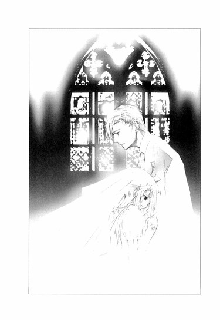
寄り添う雨宮さんと黒崎さんは、とてもよく似ていて、もともと一緒にいるべき二人であるかのように、違和感がなかった。
当然だ。二人は親子なのだから。
けど、それは二人にとって、特に雨宮さんにとって、なんの救いにもならない。
黒崎さんは、雨宮さんを受け止めながらも、抱きしめるのをためらっているようだった。苦悩に顔をゆがめ、低くくぐもった声でつぶやいた。
「誰にも......渡したくなかった......。おまえの言うとおり、俺はおまえの死を見るのが怖くてあの家から逃げ出したが、おまえを......思い切れなかった。......どこにいても、なにをしていても、おまえのことを......考えていた。食事をしようとすると吐き気が込み上げて......なにも......食べられなかった」
痩せ細った指で雨宮さんの髪にふれようとし、直前でためらうようにその指を止め、ぐっと握りしめる。
「おまえが、別の男と歩いているのを見るたび、吐き気がひどくなって......頭が熱くなって......男を殺してやりたいという衝動にかられた。おまえから結婚するという手紙をもらったとき──世界が......目の前で崩壊してしまったような気がした......」
乾ききった唇から、苦痛と後悔にまみれた言葉が漏れる。
「......っ、本当に......娘として......出会っていたら」
遠子先輩が眉を大きく下げ、今にも泣き出しそうな顔になった。
流人くんもベンチの端を握りしめ、唇を噛みしめる。
ぼくも、心臓をつかまれ、もぎとられたような気がした。
何故なら、黒崎さんのその言葉は、雨宮さんにとって、一番残酷な言葉だったから。
彼にとって、最愛の人は最初から最後まで夏夜乃なのだと、思い知らされずにはいられない言葉だったから。
それは確かに、嘘偽りのない真実なのかもしれない。けれど、雨宮さんが命をかけて望んだものは、そんな言葉ではなかったはずなのに──。
雨宮さんは、包帯を巻いた手を振り上げ、黒崎さんの胸を叩いた。
残された最後の力で、憎くて、憎くて、悔しくて、悔しくて、たまらないというように、何度も何度も──彼の胸に顔をうずめたまま、無言で彼の胸を叩く。
歯を食いしばって耐える黒崎さんが、低い声で呻いた。
しまいに、雨宮さんは息を切らし、黒崎さんの体に腕を回ししがみついた。
黒崎さんの顔に、驚きが浮かぶ。
「......っく、憎かったけれど......愛してなんかいなかったけど、でも......わたしは別の物語の登場人物になって、あなたの娘として出会う夢を、見たこともあったんだよ......。あなたがいて、お母さんがいて、平凡で幸せな家庭で暮らしたいって願ったことも......そうしたら、誰も不幸にはならなかったのにって......お父さんも、玲子叔母さんも、わたしも......あなたも......みんな、苦しむことはなかったのにって......」
雨宮さんが、顔を上げる。
ぼくは、ハッとした。
涙でぐちゃぐちゃの顔で、苦しそうに黒崎さんを見上げた雨宮さんは、体と心を苛む痛みで、そのまま崩れ落ちそうに見えた。けれど、彼と目があった直後、セピア色の瞳を切なくうるませ、ゆっくりと、微笑んだのだ。
目のふちから、涙があふれてこぼれ落ちる。
一番愛する人にその想いを否定されながら、決して結ばれない恋であると知りながら、最後の最後に、清らかな澄んだ顔で──。
黒崎さんが、驚きに目を見開く。
憎むほどに愛した彼を、目を細めおだやかに見つめ返しながら、儚くやわらかな声で、雨宮さんはつぶやいた。
「お父さん......」
そのとき、黒崎さんの顔に浮かんだ狂おしいほどの衝撃を──。
それを見上げる雨宮さんの静かに澄んだ瞳を、頬をこぼれてゆく涙の粒を、ぼくは決して忘れることはできないだろう。
黒崎さんの胸に頬を寄せ、雨宮さんは目を閉じた。
そうして、そのまま一度も目を覚まさず、一週間後に病院のベッドで息を引き取った。
エピローグ ◎ そして、ぼくらは......
この物語は、あまりにも自分たちに似すぎているから、最後まで読むことができなかったと、彼女は淡く微笑みながら、本を返してよこした。
「キャサリンは、エドガーと結婚するべきじゃなかったと思います。たとえ貧乏でも、ヒースクリフと一緒にいればよかったんです。そうすれば、誰も不幸にならなかったのに」
あまり自己主張することのない子だった。心の中に夢のような秘密を抱いて、ひっそりと微笑んでいるような、優しい女の子だった。
なのにこのときは、あたしの目を見つめ返し、熱のこもった口調ではっきりと自分の気持ちを語った。
「わたしがキャサリンだったら、最後までヒースクリフの側にいるのに。絶対に彼を一人にしたりしないのに......。けれど、ヒースクリフは、自分を裏切ったキャサリンを愛し続けるんですよね......キャサリンが死んだあとも、キャサリンの墓を暴いて、亡霊になって戻ってこいって、叫ぶくらいに......。きっと、他の女性が、いくらヒースクリフを想っても、ヒースクリフにとってはキャサリンだけが、永遠の恋人なんでしょうね......」
このとき、彼女はすでに病に冒されていて、医者はあまり長く生きられないだろうと診断していた。彼女は、いつからそのことに気づいていたのだろうか。
彼女がもうじきこの世からいなくなると知ったとき、あたしは、彼女の物語を書こうと決めた。それはあたしにとって、はじめての試みだった。正直、文章を綴るのは苦手だ。絵を描くことは、どんなときでも至高の悦びだけど、文章を書くことは苦行である。
それでもあたしは、彼女と彼の物語を書きはじめた。
彼女が生きた証を残したかったのか、それとも彼女と彼が辿ってきた軌跡を書くことで、彼らを見つめてきた自分自身の心にケリをつけたかったのか......それはよくわからない。
絵を描いているとき、あたしはとても自由で、あらゆるものを見通すことができて、すべてを支配しているような気になるけれど、書くことはとても不安で、この物語がどこへ辿り着くのか見当もつかなかった。
彼女とはじめに知り合ったのは、中学生のときだ。
あたしは二年生で、彼女は一年生で、同じ中学校の美術部に所属していた。
あの頃はまだ、祖父も父も、あたしに警戒心を持っておらず、絵を描いても、なにも言わなかった。まぁ、趣味のひとつとしてよいだろうくらいに、思われていたのだろう。
家系が平安時代までさかのぼれることが、祖父の自慢である。学校を経営している祖父は、他にいくつも会社を持っていて、その人脈は各界に渡っている。こんなところにまで祖父の息のかかった人間がいるのかと呆れることが、しばしばある。
子供の頃から、あたしはなにもかも祖父に決められていた。趣味も、習い事も、服装も、友達も、祖父があらかじめ手配したものを、そのまま受け取るだけで、それを拒否することは許されなかった。
あたしを取り巻く世界は、きらびやかで格式高くはあるが、ひどく窮屈で、母はそんな世界に嫌気が差したのだろう。あたしが小学二年生のときに、父と離婚して、家から出ていってしまった。
母は外国人で、イギリスのアイルランドの出身だった。不平不満をはっきり口にする勝ち気で奔放な母が、よくこんな四角四面の堅苦しい家に嫁いできたものだと思うし、またよく七年も耐えたものだと思う。祖父は外国人で一般家庭の出で、生意気な母のことを当然嫌っていて、離婚後、あたしは母に会うことを一切禁じられた。
成長するに従って、あたしが外見も性格も、どんどん母に似てくるのが、祖父は不満だったのだろう。中学三年生のとき、学校の宿題で、『将来の夢』というタイトルの作文を書かされたとき、あたしは、外国を旅しながら絵を描いて過ごしたいと書いた。その作文を読んだ祖父はひどく激昂し、おまえはいずれ婿をとってこの家を継ぐのだから絵描きになるなんて許さんと説教をはじめたのだった。祖父の頭の中には、家を出ていってしまった母のことがあって、あたしも彼女のように家出するのではないかと警戒したのだろう。
中学を卒業し、祖父が経営する学園に入学したとき、今度は美術部に入ることは許されなかつた。うちの一族は代々、伝統あるオーケストラ部に籍を置き、指揮者を務めてきたのだから、おまえもそうあらねばならないとか訳のわからない理屈をこねられた。
祖父に逆らっても無駄なのはわかっていたので、あたしは条件を出した。
オーケストラ部に入部する代わりに、あたしが自由にできるアトリエをもらうこと。
そこでは好きに絵を描いてもいいこと。そこ以外で絵を描くことはしないと。
祖父は、渋々条件をのみ、あたしは自分だけのアトリエを手に入れた。
音楽ホールの中というのが、祖父の悪意を感じるけれど、まぁ、いい。
良い成績をとり、オーケストラ部で指揮棒を振っていれば、中学のときほどあれこれうるさく言われることはなかった。あまり締めつけすぎて、家出でもされたら困ると考えたのだろう。祖父の手の内にいるかぎり、あたしには様々な特権が許されたし、それを行使することもできた。祖父はあたしが、人を上手に使える人間であることを、喜んでいるようだった。けれど、あたしは人を動かすことはできるけれど、自ら動くことはほとんどできないのだ。
彼女の話に戻ろう。
彼女は慎ましく控えめな性格だったので、中学の美術部の先輩後輩でいる間は、ほとんど言葉を交わすことはなかった。彼女は大抵部室の片隅で、一人でひっそりと絵を描いていたし、あたしの周りには、誰かしら群れていたので。
たまたまその日は、うるさい取り巻きはおらず、部室の中には、あたしと彼女の二人きりだった。彼女はあたしが入ってきたことに気づかず、スケッチブックを膝に乗せ、水彩絵の具で色をつけていた。口元に小さな微笑みを浮かべたその横顔が、あまりに可憐で、幸せそうだったので、あたしはしばし見惚れてしまった。
好奇心が湧いて、後ろからそっとのぞきこむと、スケッチブックには、彼女と同じ年頃の少年の絵が描かれていた。
髪は薄い茶色に塗られ、目はほんの少し青みがかっている。透明感のある美しい絵だった。そのくせ、少年の表情は暗く、孤独なかげりを帯びていた。
「彼は、おたくの彼氏？」
尋ねると、彼女は驚いて振り返り、耳まで真っ赤になってしまった。
「いいえ......あの......一度も会ったことのない人なんです」
母親に見せてもらった写真の少年なのだと、彼女はしどろもどろで語った。うろたえる様子がなんとも微笑ましかったので、さらに追及すると、スケッチブックをぎゅっと抱きしめて、はにかむように言った。
「いつか、会えるような気がして......そうなるといいなって......」
写真でしか知らない少年に、彼女が恋をしていることはその表情を見ればすぐにわかった。そんな夢見る乙女であった彼女が、とても可愛らしく純に見えて、好感を持ち、同時にうらやましいと感じ、胸がちくちくと痛んだ。
多分、あたしには、自由な恋愛など許されないだろうから。
それに、あたしは、自分の中にひどく冷たく残酷な部分があることを、当時から自覚していたので、彼女のように一途な気持ちで恋をしている自分の姿など、想像ができなかった。だから、そんな気持ちを自然に知っている彼女に、羨望を覚えたのだ。
「あの......今の話、誰にも言わないでくださいね」
不安げに見上げてくる彼女に、あたしは二人だけの秘密にしようと約束した。
それからあと、彼女と話をすることはなかった。
彼女の父親と叔母が急死し、彼女は美術部を辞め、あたしたちの接点は途絶えた。
あたしは心の奥で気になっていたけれど、彼女に会いに行ったり、友達や担任に様子を尋ねたりすることはなかった。あたしたちは、そこまで親しい間柄ではなかったから。
彼女をパーティーで見かけたのは、その半年後──あたしが中学三年生、彼女が中学二年生のときだ。
彼女は薄いサングラスをかけた茶色の髪の男性と一緒にいた。知人に聞いた話だと、彼は彼女の後見人で、なにやら悪い噂のあるうさんくさい人物らしかった。
あたしは、彼とどこかで会ったことがあるような気がして、こっそり注目していた。彼が汗をふくために、サングラスをはずしたとき、青みを帯びた茶色の目を見て、彼がスケッチブックの少年が成長した姿であることを、確信したのだった。
では、彼女は、夢の中の少年に会うことができたのだ。
彼に腕をとられて立っている彼女はひどく痩せ、まるで人形のようにぼんやりした虚ろな目をしていた。彼がなにか話しかけるときだけ、肩をぴくりと揺らすので、彼のことを畏れているように見えた。そのくせ、この手を振り払われたら死んでしまうというように、細い指で彼の腕にぎゅっとしがみついていたし、彼も片時も彼女の側を離れなかった。
二人の関係が、本当はどんなものなのかは知らなかったけれど、あたしは、彼女はこれで幸せなのだと思った。
たとえどんな形であれ、彼女は一番望んでいたものを手に入れたのだと。
寄り添う二人は、まるで一対のユニコーンのように似合っていて、儚く幻想的で、彼女のぼんやりした眼差しは、立ったまま夢を見ている人のようにも見えた。
その少しあと、あたしは学校の廊下で彼女と会った。
彼女を呼び止め、「おたくは、王子様に会えたの？」と問いかけると、わずかな沈黙のあと、すっと息をのみ、「はい」と答えた。
そこには、決意があり、意志があった。
美しかった。
胸がとどろき、膝が震えた。
このときの彼女は、彼の辛い仕打ちに耐えながら、いつか二人の間に優しい未来が訪れることを、健気に信じていたのだろう。彼が実の父親であることを、彼女は知らなかった。だから、いつかは、彼に、母親ではなく彼女自身を見て欲しいと願っていたのだろう。
それからずっと、あたしは彼と彼女を見つめてきた。
彼女と親しく話をすることはなかったけれど、祖父の部下に彼について調べさせ、彼が彼女の母親の家にいた孤児の少年であったことも、彼がどうやって現在の地位までのし上がり、彼女を自分のものにしたのかも、彼が彼女をどう支配していったのかも、あたしは知っていた。まるで、この間読んだ小説のようだと思った。
その本のタイトルは『嵐が丘』という──。
あたしが、ただの読者から物語の登場人物になったのは、半年前──今年のはじめのことだ。あまりに痩せ細り、貧血を繰り返す彼女をさすがに見かねて、病院で検査を受けるよう勧めたのだ。まさかあんな結果になるとは思わなかった。彼女の命が、あとわずかで終わるなんて──。
病院は、彼女の家族である彼に、連絡をしたらしい。
彼は絶望のあまり彼女を殺そうとしたが、殺しきれず、家を出て行った。
一人取り残された彼女は、ひどい喪失感に襲われ、なにも食べられなくなってしまった。自分を夏夜乃と名乗り、古いセーラー服を着て、夜な夜な彷徨い歩くようになった。
この頃からあたしは、彼女の家を頻繁に訪れ、彼女の話を聞くようになった。
あたしが二人の物語を書きはじめたのも同じ頃だ。
同時に、あたしは、自らがこの物語の作者となり、二人の物語を作りあげようという、自分でも説明のつかない不可思議な情熱に取り憑かれたのだった。
彼と彼女の物語を、このまま終わらせたりしない。
あたしが、二人の物語を完結させる！
けれど、あたしにはやはり小説家の才能はないらしい。まずヒロインが暴走をはじめた。ヒーローであるはずの彼も、思うようには動いてくれなかった。また、予期せぬ登場人物が次々登場し、物語に介入してきたのには参った。
自らを〝文学少女〟と名乗る天野遠子は、あたしの長年の片想いの相手である。一目見たときから、その清楚でやわらかで、神秘的な雰囲気に魅せられ、ぜひ裸体画のモデルになってほしいとかき口説いたが、未だもって野望は果たされていない。
よもやその遠子が、物語にからんでくるなんて。しかも、遠子の下宿先の息子の櫻井流人が、蛍とつきあっているなんて──。
あたしは遠子を怯えさせるため幽霊騒動をでっちあげ、その上で遠子に、害のない情報を与え、蛍から遠ざけようとした。
遠子は幽霊が苦手だ。本人は隠しているつもりだが、言動を見ていればバレバレだ。一年生のとき臨海学校で肝試しをしたときも、「幽霊ごときに、きゃあきゃあ騒ぐなんて子供の証拠よ」などと言いながら、手に食卓塩の小瓶をしっかり握りしめ、最後まで離さなかった。
途中から、遠子が怯える様子があんまり可愛くて、意地悪するのが快感になり、ついやりすぎてしまったが......とりあえず目的は達した。
ところがその間に、トラブルメーカーの櫻井流人が、遠子の後輩とつるんで、蛍のことをあれこれ調べはじめた。
もともと彼女が、つきあう男を次々替えていったのは、そうすることで、彼の気配を、彼の視線を、彼の足音を、彼の存在を、感じるためだった。相手はいつもろくでもないやつばかりで、彼女は殴られたり罵られたりしたこともあったようだが、逆に相手に対してすまないという気持ちを抱いていたようだった。
彼女の後をつけ回し、相手の男を次々排除してゆく彼も、彼女と同様に追いつめられ、拒食症に陥っているようだった。
そんなにも、お互いがなくては生きてゆけない二人なのに、彼は一度だけ家に戻り、彼女に食事をさせたあと、二度と会わないと告げたのだ。
彼女は荒れ狂い、錯乱し、ちょうどその場に訪れた櫻井流人を刺し、挙句の果てに遠子と心葉くんまで地下室に閉じこめ、焼き殺そうとした。
お手上げだった。
錯綜し迷走する物語を制御し、正しい形に修正することは、素人作家であるあたしには不可能だった。
頭を抱えるあたしは、嵐の訪れを望んでいたのかもしれない。
物語の中に吹き荒れる嵐を、さらに遠くへ吹き払う、輝かしい意志にあふれた新しい嵐が、やってくるのを──。
だからこそ、遠子に、この物語の構図が『嵐が丘』であることを看破されたとき安堵し、さらには遠子を、彼女と彼の対決の場へ案内したのかもしれない。
もしかしたら、この〝文学少女〟なら、物語を本来あるべき場所へ導いてくれるのではないかと願って。
期待通り、遠子は嵐を起こし、彼らの心を覆っていた澱みを、すっかり吹き飛ばしてしまった。あとには、むきだしの真実だけが残った。
けれどそれは同時に、彼にとって本当に愛したのは九條夏夜乃一人で、彼女はどうあっても母親の影でしかないのだということも、あきらかにしてしまった。彼にとっては夏夜乃だけが、魂の片割れであり、永遠なのだ。
彼の残酷な言葉を聞きながら、それでも彼女は、最後の瞬間笑っていた。
「お父さん......」
そうつぶやいて、彼の腕に抱かれて目を閉じた。
天晴れだった。
彼女は復讐の鬼と化したヒースクリフに運命をねじ曲げられ、嵐が丘に囚われたキャサリン＝リントンではなかった。もう一人のキャサリン＝アーンショーであり、もう一人のヒースクリフだった。
そう、彼女は、あの霜と月光で作られたお上品なエドガー＝リントンの娘ではなく、熱と稲妻で作られたヒースクリフの娘だったのだから。物語が途中から『嵐が丘』とは別のものになってしまっても、仕方がなかったのかもしれない。
そして、憎しみに囚われていた蒼い目のヒースクリフもまた、真からの悪魔ではなかった。ただ夏夜乃を愛していただけの、傷つき疲れた平凡な人間だったのだ。
こうして二人の物語は完結したが、これまであたしが書き綴ってきた物語は、もしかしたらあたしの想像や捏造が混じっており、本当はもっと別のものであったかもしれない。
あの口やかましく、善良でお節介で、そのくせ冷たいところのあるエレン＝ディーンが語る『嵐が丘』とは別の『嵐が丘』が存在したかもしれないように。
この物語は、他の人間が語ったら、まったく違う物語になったかもしれない。
『嵐が丘』の作者エミリー＝ブロンテの姉シャーロットは、エミリーの死後、『嵐が丘』を非難する人々に向けて、『嵐が丘』の冒頭に、反論の文章を書き連ねた。愛する妹が、魂のすべてを込めて書き上げた一冊の本の持つ真の価値を、真の輝きを、シャーロットは世に訴えたかったのだ。
けれど、あたしは二人を擁護しようとは思わない。彼らの代弁者になるつもりもない。
彼がしたことや、彼女の想いが、どれほど異常に見えても、誰にも理解されなくても、それに対して、そうではない、違うのだと、言ったりはしない。
あたしは彼女に思うまま、自由に、恋を貫いてほしかった。それが間違いでも、許されなくても、世間の道徳や倫理に反することでも、ただ心の欲するまま、自由に──。
そんな縛られない魂こそ、あたしが憧れ、渇望するものだったのだから──。
彼女の魂は、最後のあの瞬間、稲妻のように輝いていた。
半年かけて書き上げたこの物語は、誰にも見せることはないだろう。この世でただ一人しか知らない──そんな物語があってもよいのだ。
◇ ◇ ◇
夏休みに入る前、雨宮さんの葬儀が、教会でひっそりと行われた。
真っ白な百合の花に埋もれ、目を閉じて微笑む雨宮さんの死に顔は安らかで、幸福そうだった。
墓地に埋葬される前、麻貴先輩は棺に、立派な赤茶色の表紙がついた日記帳を入れた。彼女の子供の頃の日記よと言っていたけれど、表紙はまだ新しいもののように見えた。
背筋を伸ばし、豊かな唇を結び、凜とした表情で雨宮さんの最後を見送る麻貴先輩は、心の中でなにを想っていたのだろう。彼女に力を貸した理由を、麻貴先輩は、雨宮さんが親戚になれば一族にとって有益だと思ったのよと説明したけれど、本当は、もっと別の理由があったのではないだろうか......。
雨宮さんが病院で呼吸を止めたという知らせを受けとった日の放課後、ぼくは三題噺を書いた。遠子先輩が出したお題は、いつかと同じ〝林檎園〟〝花ブランコ〟〝全自動洗濯機〟──。
透明な光と、澄んだ甘酸っぱい香りがあふれる林檎園の真ん中で、彼と彼女は全自動洗濯機にシャツやスカートを放り込んでゆく。ねぇ、これも洗いましょう。これも、こっちも......くすくす笑いあいながら洗濯機を回す。ごとごとと揺れる洗濯機の傍らで、二人は花ブランコで遊ぶのだ。彼が彼女の背中を押す、真っ青な空に、彼女は高く高く舞い上がり、そして彼の元へ戻ってくる。何度も何度も、繰り返し繰り返し。
親子だった雨宮さんと黒崎さんは、どのみち恋人としては結ばれなかった。けれど、せめて、想像の中だけでも......。
西日が金色の波になって打ち寄せる、埃っぽい部室で、遠子先輩はパイプ椅子に腰かけ、細い指を唇にあて、静かな表情でそれを読んだ。
そうして、端をぴりっと破き、口の中に入れた。
何度か端をちぎり、ゆっくりと噛みしめ、泣きそうな顔をし、
「林檎をレモンと蜂蜜とワインで煮込んで、冷たく冷やした、コンポートみたい......とっても......甘くて、美味しいわ」
つぶやいて、原稿用紙を机の上に置いた。
遠子先輩はそれ以上、その作文を食べなかった。端のかけた原稿用紙を筒状に丸め、すみれ色のリボンを結んで、「これは、蛍ちゃんにあげましょう」と言った。
そのあと、茜色に染まってゆく部屋の中で、雨宮さんが文芸部のポストに入れたメモを食べた。
一枚、一枚手にとって、黒く澄んだ眼差しで、メモに書かれた数字を一文字一文字見つめ、ときどき小さく喉を震わせながら、苦しそうに、哀しそうに、目をうるませて、最後の一枚まで食べ続けた。
──42 43 ７ 14 43 36（愛している）
──46 １ 42 ６ 41 47142116３3911７402714（お母さんではなくわたしを見て）
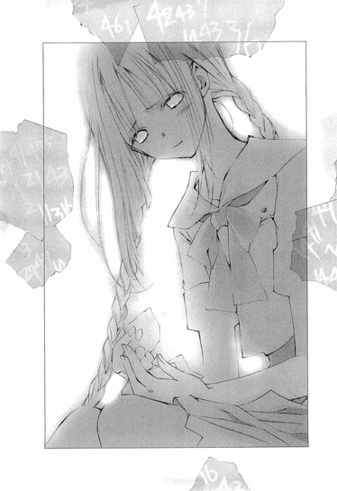
──13 27 47143043434721134044４1430１26391643（罪でもいい罰をうけてもかまわない）
──１ 45 13 14 ２ 14 424643（帰ってきて蒼）
──14 41 47５ ３ 24 21 43２11３1643（天国へはいきたくない）
──14 41 47５ ３ 24 21 43２11３1643（天国へはいきたくない）
──14 41 47５ ３ 24 21 43２11３1643（天国へはいきたくない）
ちぎったノートに書かれた、ただの数字の羅列は、一人の少女の想いを綴った物語に変わっていた。
その心を、その真実を、メモを食べる遠子先輩は、感じていたのだろう。
白い百合の花に埋もれて眠る雨宮さんを、遠子先輩と並んで見おろしながら、雨宮さんの最後の言葉を思い出す。
あのとき雨宮さんが黒崎さんに、「お父さん......」と呼びかけたのは、黒崎さんの心に刃物を突き立て、自分のことを忘れてほしくないと願ったからなのではないか。
だとしたら雨宮さんは最後の最後に望みを遂げたのだ。
微笑みとともにささやかれたその言葉を、黒崎さんが忘れることは決してないだろう。「お父さん」というあの言葉は、恋人として夏夜乃に勝てなかった雨宮さんの、精一杯の復讐であり、告白であり、命と引き替えの一刺しだったのだ。
雨宮さんは、過酷な運命に翻弄された哀れな少女ではなかった。
自分の意志で物語を変えた、強く激しい少女だった。
嵐のように人を愛する少女だった。
ぼくがあの日、夜の化学室で会ったのは、ヒースクリフを求めるキャサリンだったのだ。
そして、九條夏夜乃と雨宮蛍──二人のキャサリンに去られたヒースクリフは、この先も飢え渇いた心を抱いたまま、独りで生きてゆくのだろうか。
葬儀に参列していた黒崎さんは、げっそりと痩せ、肌はかさかさに乾き、口の周りに無精髭を生やしていた。ギラギラと光る目には苦悩と絶望と痛みが交錯し、一瞬も心休まることのない責め苦にさらされ、苦悩している罪人のように見えた。
いつか彼にも、救いはもたらされるのだろうか。
もしかしたら、彼はそれを望んでいないかもしれない。この先も吹きすさぶ嵐の荒野を、愛する人たちの面影を求めて、彷徨い続けるのかもしれない。
葬儀のあと、麻貴先輩が流人くんに、雨宮さんから預かっていた手紙を渡した。
流人くんは、その場で封を切って読み、途中から手や肩を小さく震わせ、顔をゆがめ、最後は、泣きながら手紙を細かく破いた。
「......オレは、ごめんなさいとか、ありがとうとか、そんな言葉、欲しくなかった......なぁ、蛍......おまえは、オレのこと好きになりゃよかったんだ。時間があれば、もっといろんなとこ連れてってやったのに......いろんなもの食わせて、太らせてやったのに」
ちぎれた手紙が、風に吹き散らされる白い花びらのように、十字架の群れの中を飛んでゆく。流人くんの頬を、涙がほろほろ伝ってゆく。
──怪我をさせて、ごめんね、流くん。
──こんなわたしと、つきあってくれて、感謝しています。〝蛍〟を好きになってくれたのは、流くんだけだったよ。
──あの人も、お父さんも、叔母さんも、みんなわたしを通してお母さんを見ていたの。みんなが好きだったのはお母さんに似たわたしで、わたし自身じゃなかったの。けれど、流くんは、最初から〝蛍〟を見てくれた。わたしを好きだって言ってくれて、わたしに、おまえは雨宮蛍だって言ってくれたね。
──流くんはわたしにとって〝昼の少年〟だったんだよ。神様が、最後のプレゼントに、流くんに会わせてくれたのかもしれない。流くんと一緒に昼の世界で生きられたら、蛍はきっと、あの物語の女の子のように幸せになれたと思う。
──けれど、わたしは、あの夜しかない部屋を出ることはできなかったよ。あそこでしか、わたしは暮らせなかったの。天国よりも、どこよりも、わたしはあの場所にいたかったの。
──本当にごめんね、流くん。今までありがとう。
細かな雨が降り出し、うなだれる流人くんの髪や肩を濡らした。
遠子先輩が、すみれ色の傘を差しかける。
流人くんはもう少しここにいたいから、先に帰ってほしいと、震える声で告げた。
遠子先輩は哀しそうな顔で、流人くんの手に、傘の柄を握らせた。
麻貴先輩は、高見沢さんと車で帰っていった。乗っていかないかと誘われたけれど、遠子先輩が歩いて帰りたいと言ったので、ぼくもそうしますと答えた。
二人で一本の群青色の傘を差し、灰色の雨に閉ざされた道を並んで歩き出す。
夏の雨は静かで、あたたかだった。
遠子先輩は泣いてはいなかったけれど、いつもより言葉少なで、黒い瞳に睫毛が影を落としていた。口に出さなくても哀しい気持ちが、伝わってくる。
傘にあたる雨音を聞きながら、ぼくらは何気ない話をした。
期末試験がどうだったとか、家でこんなことがあったとか、最近読んだ本のこととか、お気に入りのＣＤのこととか......琴吹さんのこととか......。
「──ななせちゃん、今週退院するんですって」
「そうですか。よかった。琴吹さん......あのとき、ぼくをかばってくれたんです。ぼくがみんなを怒鳴りつけたのは、琴吹さんのせいじゃなかったのに......」
遠子先輩が、視線をそっとぼくのほうへ向ける。けれど、ぼくが激昂した理由は尋ねず、淡く微笑んだ。
「そう......。ななせちゃんは、イイコね」
そうなのかもしれない。
琴吹さんが退院する前に、またお見舞いに行ってみよう。琴吹さんを苦手と思わず、きちんと話をすれば、ぼくらの関係は、今より良好なものになるかもしれない......。
視線を前に戻し、遠子先輩がやわらかな声で語る。
「わたしね、『嵐が丘』を読むとおなかがすくけれど......あの物語が好きだわ。最後はハッピーエンドだと、わたしは思う。......作者のエミリー＝ブロンテは、亡くなる前、次の作品を執筆していたんですって......幻の二冊目は、どんなお話だったのかしらね」
その味を想像するように、睫毛を伏せ、目を閉じる。
二作目を出版することなく、井上ミウは消えた。
ぼくは二度と小説は書かない。
けれど、もし、今のぼくが小説を書いたなら、それはどんな味の物語になるのだろう。
遠子先輩が目を閉じたまま、ささやく。
「ねぇ、心葉くん、またラブストーリーを書いてね」
「じゃあ、幽霊の出てくるやつにしましょう」
「やぁ、それはダメ」
目を開けて、慌てて抗議する様子がおかしくて、
「幽霊は禁止よ、約束よ」
ふくれっつらで念を押す様子に、自然と頬がほころんで、胸があたたかくなって、
「はいはい、でも、遠子先輩が無茶なことしたら、幽霊のフルコースですからね」
わざと言って、ますますふくれっつらをさせたり、あたふたさせたりして、ささやかな日常を噛みしめる。
過去には戻れない。
進む未来は、どんなものかわからない。
けれど、傷つきながら、泣き叫びながら、ときに癒されながら、人はみんな不確かな物語を生きてゆく。
すねたり、笑ったり、呆れたり、ふくれたり、突っ込みを入れたり、また笑ったりしながら──ぼくらは、夏の雨の中を歩き続けた。
あとがき
こんにちは、野村美月です。〝文学少女〟シリーズ第二弾です。今回は非常～に難産で、途中で「他の話に変えていいですか？」と担当さんに泣きついたりもしたのですが、無事に完成してよかった、よかった。題材の『嵐が丘』は、子供の頃から大っ好きな作品で、作者のエミリー＝ブロンテについては、もっと作中で掘り下げたかったです。子供の頃の空想遊びとか、姉のシャーロットとの関係とか、美味しいエピソードてんこもりなんですよ～。三姉妹で出版した詩集も、熱いです。伝記、詩集、ともにお薦めです。
イラストの竹岡美穂様、今回も、うっとりするような美しい絵をありがとうございました！いただいたラフは、蛍も流人もイメージぴったりです！
黒崎さんは、第一稿が不気味さ全開でゴシックホラーな感じで、すごく怖かったのですが、描写を変えますので、もうちょっと、その......おどろおどろしくない方向で......とお願いして、美形度がアップしたのでした。けど、ホラーな黒崎さんも味があってよかったですよ～。ヘアスタイルの違うホラー黒崎さんが、五、六人、ずらりと並んでいるのは壮観でした。読者の皆様にお見せできないのが残念です。
さて、一話目の『～死にたがりの道化』は、たくさんのご意見ご感想をいただき、大変励みになりました。アンケート葉書も見せていただいております。切手を貼ってらっしゃる方がおりましたが、ファミ通文庫さんは切手ナシでも大丈夫ですよ！今回はページが増えてしまって、値段も高くなってしまって、学生さんたちには申し訳なかったです。お買い上げくださって、本当にありがとうございました！まだまだ課題は多いですが頑張りますので、次回もよろしくお願いいたしますね。それでは～。
作中、次の著作を引用、または参考にさせていただきました。
『嵐が丘』（Ｅ・ブロンテ著、永川玲二訳、株式会社集英社、一九七八年発行）
『エミリー・ブロンテ──その魂は荒野に舞う』（キャサリン・フランク著、植松みどり訳、河出書房新社、一九九二年初版発行）
『嵐が丘を読む』（中岡洋編著、開文社出版株式会社、二〇〇三年初版発行）
『武蔵野』（国木田独歩著、株式会社新潮社、昭和二四年初版、平成五年八二刷改版）
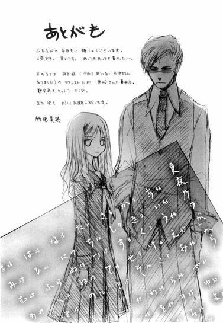
あとがき
ふたたびのお目もじ嬉しゅうございます。
２巻です。青いです。ぬってもぬっても青かった...。
下のラフは担当様（今回も果てしなくお世話になりました）のリクエストにより黒崎さんと夏夜乃。
数字表もセットでどうぞ。
また次もよろしくお願い致します。
竹岡美穂
底本：〝文学少女〟と飢え渇く幽霊
野村美月
二〇〇六年九月一一日 初版発行
入力：
校正：
鹿仔
底本１３頁・ｔｘｔ１７３行
〝43 31〟
〝42 43 ７ 141641１431643〟
〝39 11 ７ 21471137〟
〝14 41 47５３242143２11３1643〟
底本９１頁・ｔｘｔ１０６９行
〝42 46 434243７144336〟
底本１００頁・ｔｘｔ１１９０行
〝５ 16 43 4714〟
〝42 13 1224431314〟
〝14 41 47５３242143２11３1643〟
底本１１２頁・ｔｘｔ１３５６行
〝42 43 ７ 141641１431643〟
〝46 15 44６413236７14〟
〝14 41 47５３242143２11３1643〟
底本２００頁・ｔｘｔ２３７１行
〝42 46 43１3120〟
〝42 46 43404243７144336〟
〝47８ 13 154313７33〟
〝45 43 454117231135２35〟
〝31 29 14５16434714〟
〝43 31〟
〝１ 45 13 14２14〟
〝42 43 ７ 144336〟
〝21 16 ６ 1643１3120〟
〝42 46 43424643424643424643〟
底本２４１頁・ｔｘｔ２７８７行
〝42 46 4321１3120203020１312021424643203020〟──〝47８13154313７33〟
底本２５８頁・ｔｘｔ２９７３行
時間がない──。
喉がひりつき、胃がねじきれそうだ。
〝42 43 ７ 144336〟
違う。
〝47８ 13 15８２47111311〟
やめて。
〝46 １ 42 ６4147142116３3911７402714〟
違う！ 違う！
〝14 41 47５３242143２11３1643〟
〝39 11 ７ 214246432010472117431143〟
お願い、消えて！ もう消えて！
〝13 27 471430１26391643〟
〝4721 13 4044４14304343〟
違う！ わたしは！
〝25 ７ 43 20214246434711４〟
〝１ 45 13 14２14424643〟
〝42 46 43213911７3911７21424643〟
ああ、お父さん、お父さん......。
〝42 46 434045434541174243８36〟
憎い、彼が憎い。
〝14 41 47５３242143２11３1643〟